Todo en una sola página
Content from Introducción
Última actualización: 2026-09-03 | Mejora esta página
Tiempo estimado: 10 minutos
Descripción del curso
MetaDocencia, con el apoyo de NASA Open Science, invita a personas de comunidades hispanohablantes a conocer y aplicar buenas prácticas de la Ciencia Abierta.
Herramientas de Ciencia Abierta es un curso virtual de formación de 4 semanas. Se enfoca en compartir conocimiento desde una mirada local y en facilitar la implementación de principios y prácticas de Ciencia Abierta a partir del encuentro entre pares, del intercambio de recursos comprobados y de referencias accesibles y del análisis de situaciones y ejemplos vinculados a las experiencias de comunidades hispanohablantes.
Los materiales se basan en el curso Open Science 101 de NASA y fueron contextualizados al español mediante un proceso colaborativo impulsado por MetaDocencia.
Motivaciones para participar
Quienes completen esta formación podrán:
- Acceder a una doble certificación MetaDocencia + NASA.
- Tener una primera aproximación a técnicas y principios que propone la Ciencia Abierta.
- Participar de un espacio de formación en español sobre Ciencia Abierta.
- Ser parte de una experiencia que favorece el encuentro y el intercambio con otras personas hispanohablantes interesadas en la Ciencia Abierta.
- Integrar un espacio amigable y seguro para dar a conocer iniciativas y proyectos propios sobre Ciencia Abierta.
- Fortalecer y actualizar conocimientos en Ciencia Abierta a partir del intercambio colaborativo, para robustecer proyectos y prácticas.
- Acceder a recursos abiertos y referencias en español para seguir aplicando lo trabajado después de cada encuentro.
- Conocer herramientas y casos de Ciencia Abierta en acción.
¿Para quién?
MetaDocencia cree en la importancia de convocar a perfiles de disciplinas diversas para enriquecer las conversaciones y promover la Ciencia Abierta generando espacios de intercambio transversales y abiertos que promuevan colaboraciones entre diversas áreas del conocimiento.
Esperamos que puedan sumarse personas hispanohablantes relacionadas a la ciencia y a la técnica en un sentido amplio que:
- Estén interesadas en debatir o construir conocimiento sobre Ciencia Abierta en contextos hispanohablantes. Si esta es tu primera aproximación, ¡será un honor que participes en el curso!
- Hayan participado en Ciencia Ciudadana, redes, eventos o comunidades asociadas a estos temas.
- Tengan alguna experiencia (en un rango amplio entre poca y muchísima) trabajando en iniciativas abiertas, por ejemplo, en publicaciones, datos, investigación, bibliotecas o repositorios, entre otras.
- Enseñen o difundan la ciencia y la técnica, ya sea desde un rol docente o de comunicación.
¿Qué no incluye esta formación?
- Desarrollo en profundidad y práctica extensiva de los principios de Ciencia Abierta.
- Teoría de la ciencia o epistemología.
- Uso de Ciencia Abierta enfocado en disciplinas específicas.
Cronograma
El curso tiene 4 encuentros virtuales sincrónicos, con frecuencia semanal y una duración de 2,5 horas cada uno, con pausas lejos de la pantalla cada 50 minutos aproximadamente.
Los encuentros incluyen actividades destinadas a promover el intercambio y la discusión entre pares en salas de trabajo.
En el primer encuentro construiremos una comprensión compartida de la Ciencia Abierta y conoceremos la modalidad de trabajo, así como los canales de comunicación y colaboración. En los siguientes encuentros profundizaremos en prácticas y herramientas relacionadas con los datos, el código y los resultados abiertos.
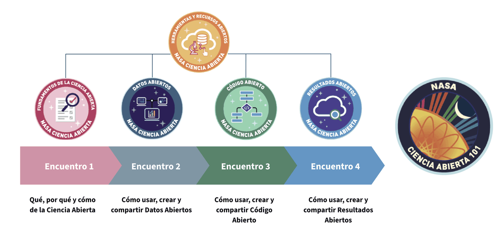
Seleccioná el título de cada encuentro para consultar su hoja de ruta, que incluye los contenidos y el cronograma del módulo.
| Semana y duración | Encuentro | ¿Qué abordaremos? |
|---|---|---|
| Primera semana · 2 h 30 min | Fundamentos de la Ciencia Abierta | Qué es la Ciencia Abierta, por qué es importante y cómo comenzar a llevarla a la práctica. También presentaremos la modalidad de trabajo y los canales de comunicación y colaboración. |
| Segunda semana · 2 h 30 min | Datos Abiertos | Cómo usar, crear, gestionar y compartir datos de manera abierta y responsable. |
| Tercera semana · 2 h 30 min | Código Abierto | Cómo usar, crear, documentar y compartir código abierto. |
| Cuarta semana · 2 h 30 min | Resultados Abiertos | Cómo crear y compartir abiertamente diferentes resultados de investigación. |
Certificación
Quienes participen del curso podrán acceder a una doble certificación:
Certificación NASA Open Science
Para obtener el certificado de conocimiento de los contenidos del Curso de Introducción a la Ciencia Abierta de la NASA, será necesario responder correctamente al 70% de las preguntas de los cuestionarios administrados al final de cada encuentro. Los formularios estarán disponibles en español y la última parte de los encuentros sincrónicos se dedicará a responderlos. Se ofrecerá la posibilidad de completarlos de forma asincrónica (hasta 7 días corridos luego de la fecha del último encuentro) y de rehacerlos en el caso de no obtenerse el 70% de preguntas correctas.
Certificación MetaDocencia
Además, entregaremos un certificado de asistencia de MetaDocencia a quienes participen activamente, ya sea asistiendo de forma sincrónica a 3 de los 4 encuentros o completando 3 de los 4 cuestionarios detallados en el párrafo anterior, hasta 7 días corridos después de la fecha del último encuentro.
Cómo participar
Anunciaremos la apertura y las instrucciones para inscribirte en este curso a través de nuestras redes sociales, nuestro boletín y nuestro canal de Slack comunitario. Si aún no recibes estos medios de comunicación, ¡súmate!
¿Cómo nos vamos a comunicar?
Durante la formación utilizaremos tres canales para compartir novedades, recursos e información sobre los encuentros:
| Canal | ¿Cómo lo utilizaremos? |
|---|---|
| Slack | Será nuestro principal espacio de encuentro e intercambio. En el
canal #ciencia-abierta podrán compartir preguntas,
opiniones y recursos. Antes de cada encuentro enviaremos un recordatorio
y, luego, compartiremos la grabación y los materiales correspondientes.
Sumate al espacio de
Slack. |
| Correo electrónico | Por este medio enviaremos información sobre el siguiente encuentro y los recursos correspondientes al encuentro anterior. Recomendamos revisar la casilla de correo todas las semanas. |
| Pizarra de anuncios | Reunirá en un mismo lugar la información y los recursos de cada encuentro. Se actualizará al día siguiente de cada encuentro y avisaremos por Slack cuando haya novedades. |
Si necesitás ayuda para ingresar a Slack o tenés alguna consulta sobre la formación, escribinos a formacion@metadocencia.org.
Sobre MetaDocencia

MetaDocencia es una organización sin fines de lucro que trabaja para que la producción, la comunicación y la aplicación de saberes científicos y técnicos sean globalmente equitativas.
Construimos capacidades científicas y técnicas de forma responsable y con mirada local, mediante la co-creación de redes, espacios de aprendizaje y recursos accesibles para comunidades hispanohablantes.
Para conocer más sobre nuestra misión y visión institucionales, visitá el sitio web de MetaDocencia.
Red de Comunidades Amigas
Este curso, como el resto de las iniciativas de MetaDocencia, es posible gracias al apoyo y la colaboración de más de 30 comunidades aliadas y organizaciones patrocinadoras.
Esta red reúne organizaciones con trayectorias y enfoques diversos, vinculadas con la Ciencia Abierta, los datos, el software, los resultados abiertos y otros temas afines.
A lo largo de la formación conoceremos algunas de estas comunidades y los recursos que desarrollan.
Conocé nuestra Red de Comunidades Amigas y las organizaciones que acompañan a MetaDocencia
¡Sírvete sin culpa!

¿Te viene bien cualquiera de nuestros contenidos? ¡Sírvete sin culpa! Nuestros materiales están disponibles de forma gratuita bajo la licencia CC BY 4.0. Es decir, puedes reusar o editar cualquier material que aparece encima de estas líneas; lo único que pedimos a cambio es que incluyas una referencia a esta página web.
Para más información, escríbenos a: formacion@metadocencia.org.
Financiamiento
Esta formación es gratuita gracias al subsidio de la NASA 80NSSC23K0854 (DOI: 10.5281/zenodo.8430889) y al subsidio DAF2021-239366 y DOI de subsidio https://doi.org/10.37921/522107izqogv de la Chan Zuckerberg Initiative DAF, un fondo aconsejado por la Silicon Valley Community Foundation (DOI de financiador 10.13039/100014989).
📬 Contacto
¿Tienes dudas? Escríbenos a:
📧 formacion@metadocencia.org
Puedes encontrar más materiales y recursos en:
🌐 https://www.metadocencia.org
Content from Fundamentos de Ciencia Abierta
Última actualización: 2026-09-03 | Mejora esta página
Tiempo estimado: 140 minutos
- Bienvenida
- Este encuentro va a ser grabado y si bien nos encantaría que estén con las cámaras prendidas para poder interactuar de forma más fluida, si prefieren, pueden apagarlas. Nuestro equipo de apoyo va a iniciar la grabación ahora.
- Este material tiene una licencia CC-BY, lo que permite reusarla libremente, mencionando la fuente.
- Todos los espacios de MetaDocencia se rigen por nuestras Pautas de Convivencia. En resumen, buscamos que este sea un espacio seguro, respetuoso e inclusivo, donde podamos intercambiar ideas con empatía, escuchar distintas perspectivas y tratarnos con amabilidad. Y, por supuesto, evitar cualquier tipo de acoso, destrato o comentarios que puedan incomodar a otras personas.
- Para participar: pide la palabra o usa el chat y silencialo al terminar de hablar
- Pide permiso antes de tomar registros de las personas presentes en este encuentro.
Presentación en el chat
Para conocernos un poco, cuéntanos tu campo de trabajo y comenta en pocas palabras por qué te sumaste a esta formación.
Tiempo estimado: 3 minutos.
Durante estos encuentros van a ir apareciendo ejercicios que nos ayudan a evaluar cómo viene el curso y recuperar la atención de quienes estén un poco cansados, algunas van a ser espontaneas, o pedidos de respuestas por chat, como esta, otras van a ser encuestas de zoom que son muy dinámicas y rápidas y por último también van a suceder algunas actividades en salas de grupo que siempre son muy valoradas.
En la sala de grupo de hoy vamos a estar conversando acerca de las preocupaciones a la hora de abrir la ciencia, Estas salas van a tener una duración de 10 minutos y es muy importante que tengan en cuenta que la participación en las salas depende de la interacción que pueda tener cada uno de ustedes. Si lo prefieren, nos pueden avisar si tienen algún inconveniente para activar sus micrófonos, a fin de propiciar la división de salas de la manera más dinámica posible. Puede fallar, les pedimos que nos tengan paciencia este primer encuentro porque somos muchas personas, haremos lo mejor posible porque pasen una linda experiencia de intercambio y lo iremos mejorando encuentro a encuentro.
¿Qué es la Ciencia Abierta?
¿Qué es la Ciencia Abierta?
“El movimiento de Ciencia Abierta tiene como objetivo fomentar la difusión, el escrutinio y el reuso de los componentes de investigación para el bien de la ciencia y la sociedad”.
— Leonelli, 2023
Existen muchas definiciones de Ciencia Abierta, utilizadas por distintas organizaciones, pero todas comparten una idea central.
La Ciencia Abierta es un movimiento que tiene como objetivo fomentar la difusión, el escrutinio y el reuso de los componentes de investigación para el bien de la ciencia y la sociedad.
Incluye los principios y las prácticas que hacen que los productos y procesos de investigación estén disponibles para todas las personas por igual. Por lo tanto, es una forma de pensar y hacer ciencia de manera inclusiva, diversa, equitativa y accesible.
Beneficios de la Ciencia Abierta
Comenzar a aplicar prácticas de Ciencia Abierta, aunque sea de a poco, puede aportar diversos beneficios:
- Aumenta la visibilidad y el impacto.
- Fomenta mejores prácticas de investigación.
- Favorece la colaboración.
- Ayuda a detectar y corregir errores rápidamente.
- Democratiza el acceso al conocimiento y promueve la participación ciudadana.
- Aumenta la transparencia del trabajo y su reproducibilidad.

Fuente: The Turing Way Community & Scriberia (2022), Illustrations from The Turing Way, CC BY 4.0.
Una investigación publicada abiertamente tiene mayor visibilidad y potencial de impacto: es más fácil de encontrar, usar y citar. También permite fomentar la colaboración y la participación en el proceso de investigación.
Por ejemplo, al documentar y publicar un plan de investigación al comienzo de un estudio, se puede obtener retroalimentación de colegas del área antes de que comience la recolección de datos. Así podemos maximizar el uso de los recursos y evitar algunos sesgos desde el inicio del proceso.
Un buen Plan de Gestión de Datos y Software hace que nuestro proyecto sea más transparente y reproducible. También nos ayudará a entender nuestro propio proceso en el futuro. La documentación facilita la detección y corrección de errores, ya sea por nuestro equipo o por otras personas.
Reproducibilidad
La reproducibilidad consiste en obtener los mismos resultados utilizando:
- Los mismos datos de entrada.
- El mismo código o los mismos pasos de análisis.

Fuente: The Turing Way Community & Scriberia (2022), Illustrations from The Turing Way, CC BY 4.0.
La ciencia es más abierta cuando es transparente y reproducible, es decir, cuando otras personas pueden ver y verificar en detalle cómo se llevó a cabo la investigación.
Tradicionalmente, accedemos a una publicación que presenta el objetivo, la metodología y los resultados alcanzados, pero rara vez podemos reproducir dichos resultados a partir de la información disponible.
Muchas veces, los métodos se describen de forma informal o incompleta, hay poca precisión en los criterios utilizados para incluir o eliminar datos, o se presentan datos agrupados sin incluir las observaciones individuales.
Para que un proyecto sea reproducible, necesitamos hacer públicos productos como los datos sin procesar o intermedios, el software y el código de análisis, los materiales empleados y otros objetos de investigación que hayan influido en los resultados alcanzados.
Proceso, productos y resultados de investigación

Fuente: NASA Open Science.
Podemos pensar en un proyecto de investigación como un proceso que abarca desde la ideación de una propuesta hasta la publicación de sus resultados.
En los diferentes momentos, las personas que investigamos producimos distintos objetos que potencialmente pueden compartirse en abierto. Abrir estos objetos representa abrir gran parte del proceso de investigación y no solamente sus resultados finales.
Dentro de todo este proceso hay matices posibles, porque no existe una única manera de hacer Ciencia Abierta. Pensarla en nuestros propios contextos ayuda a implementarla en la práctica. Más adelante retomaremos este punto con mayor detalle.
Ejercicio 2: ¿cuándo abrir un proyecto?
¿Cuándo deberíamos empezar a pensar cómo abrir un proyecto?
Seleccioná la opción correcta:
- Solo al final, al publicar.
- Durante el análisis de datos.
- Antes de recolectar datos.
- Desde la planificación.
- No lo sé.
Respondé la encuesta de Zoom.
Tiempo estimado: 3 minutos.
La respuesta correcta es desde la planificación.
Si la apertura se considera recién al final, puede resultar difícil compartir algunos productos por falta de consentimiento, documentación o acuerdos.
Pensar la apertura desde la planificación no significa que todo deba abrirse, sino decidir de antemano qué se abrirá, cómo, cuándo y bajo qué condiciones. Como indica el principio: tan abierto como sea posible y tan cerrado como sea necesario.
Barreras para las prácticas en Ciencia Abierta
Podemos reconocer tres tipos de barreras:
- Sociales.
- Institucionales.
- De infraestructura.

Fuente: The Turing Way Community & Scriberia (2022), Illustrations from The Turing Way, CC BY 4.0.
Cuando hablamos de Ciencia Abierta, no hablamos solamente de herramientas o de publicar abiertamente. También hablamos de condiciones concretas que facilitan o dificultan estas prácticas.
Exploraremos tres tipos de barreras que aparecen con frecuencia: las sociales, las institucionales y las de infraestructura. Separarlas y entenderlas según nuestros propios contextos nos ayuda a reconocer mejor dónde se encuentran los desafíos y qué tipo de respuestas requieren.
Barreras sociales
- La decisión de abrir el trabajo puede generar desacuerdos.
- La generación de acuerdos requiere tiempo y esfuerzo.
- Reglas claras para la interacción y el uso de los recursos.
- Pautas de convivencia y de uso de licencias.
Las barreras sociales tienen que ver con cómo trabajamos con otras personas. Abrir procesos, datos o materiales no siempre genera consenso automáticamente: muchas veces requiere conversaciones, acuerdos y tiempo.
Por eso, contar con reglas claras para la interacción, criterios compartidos y acuerdos sobre el uso de recursos y licencias puede facilitar la colaboración.
Barreras institucionales
- Apoyo insuficiente de las instituciones.
- Falta de recursos, presupuesto y tiempo.
- Poco reconocimiento en evaluaciones.
- Identificar la factibilidad y el alcance posible, y alentar a otras personas a apoyar los esfuerzos.
También hay barreras que dependen menos de las personas y más de las instituciones en las que trabajamos. Muchas veces faltan tiempo, presupuesto, apoyo o reconocimiento para sostener prácticas de Ciencia Abierta.
En esos casos, puede ser útil identificar qué es viable en cada contexto, comenzar por objetivos alcanzables y sumar apoyos dentro de las instituciones para que esos esfuerzos no queden aislados.
Barreras de infraestructura
- Escasez de recursos materiales.
- La mayoría de los repositorios y las herramientas fueron desarrollados en otras regiones.
- Falta de financiamiento.
- Apoyo de la comunidad mediante ideas o infraestructura compartida.
- Trabajo colaborativo.
Por último, están las barreras de infraestructura, que en América Latina conocemos bien.
No siempre contamos con recursos materiales, financiamiento o herramientas diseñadas para nuestros contextos e idiomas. Frente a eso, el trabajo colaborativo, las infraestructuras compartidas y el apoyo entre comunidades son formas concretas de sostener prácticas abiertas de manera más realista y situada.
¿Qué pasa si…?
- Errores: ¿Qué pasa si mi trabajo tiene errores?
- Apropiación: ¿Qué pasa si alguien usa mi trabajo, se queda con el crédito o no me cita?
- Malinterpretación: ¿Qué pasa si mi trabajo se malinterpreta o se usa fuera de contexto?
- Datos sensibles: ¿Qué pasa si mis datos son demasiado sensibles para compartirlos?
Además de las barreras que acabamos de mencionar, suelen aparecer preocupaciones muy concretas al momento de abrir un trabajo.
¿Qué pasa si hay errores? ¿Qué pasa si alguien se apropia de lo que hice? ¿Qué pasa si se malinterpreta? ¿Qué pasa si hay datos sensibles involucrados?
Son preocupaciones razonables. A continuación, analizaremos cada una con mayor detalle.
Errores
¿Y si abro mis materiales de investigación con errores?
- Los errores son parte de la construcción de la ciencia.
- La evaluación por pares es un pilar del método científico.
- Mientras antes se conocen, antes se corrigen.
- ¡El error no es un fracaso!
Las políticas de Ciencia Abierta apuntan a cambiar la percepción del error: dejar de considerarlo un fracaso y entenderlo como un paso en el proceso de descubrimiento que puede mejorarse con comentarios abiertos de la comunidad.
La revisión por pares es un pilar central de la construcción de la ciencia y un mecanismo mediante el cual otras personas ayudan a identificar y corregir errores. Para que esto funcione, necesitamos ser más abiertos a encontrar, reconocer y corregir errores.
Abrir los errores también es una forma de construir ciencia.
Malinterpretación
¿Y si mis resultados son malinterpretados?
- La apertura ofrece más contexto para interpretar mejor.
- Puede suceder con o sin Ciencia Abierta.
- Abrir el plan de investigación y la gestión de productos y resultados ayuda a una mejor interpretación.
Históricamente, muchas publicaciones fueron malinterpretadas. También sabemos que todo lo que contribuya a mejorar el contexto de una investigación favorece una mejor interpretación.
Los instrumentos de gestión de la apertura, como el Plan de Gestión de Ciencia Abierta, el Plan de Gestión de Datos o cualquier documentación complementaria de los productos intermedios o finales, ayudan a evitar estas malas interpretaciones.
Abrir genera prácticas que no siempre están previstas y que implican más trabajo del que suele realizarse. Es importante planificar la investigación considerando el tiempo que implica.
Datos sensibles
¿Y si no puedo abrir mis datos por la sensibilidad que tienen?
- Tratar los datos para minimizar el riesgo.
- Los datos sensibles son aquellos que pueden causar discriminación o estigmatización.
- Desidentificar y anonimizar, de ser posible, como mecanismo de resguardo.
- Es mejor no abrir si el riesgo es muy alto y está justificado.
Los datos sensibles incluyen aquellos que pueden causar discriminación o estigmatización, incluso de manera potencial.
Cuando investigamos utilizando datos personales y sensibles, es clave tratarlos para evitar que la información pueda asociarse con una persona; por ejemplo, mediante la desidentificación y, si fuera posible, la anonimización total.
Compartí el enlace a la Guía práctica para la protección de datos personales en salud para que quienes participan puedan ampliar la información después del encuentro.
Cuidar los datos sensibles, en algunos contextos, implica no abrirlos. Un ejemplo es el trabajo con datos de salud de poblaciones muy pequeñas, en las que resulta fácil identificar a grupos con alguna vulnerabilidad o enfermedad poco común.
Apropiación
¿Y si abro mis materiales y se quedan con el crédito de mi trabajo?
- Asegurar el crédito y facilitar la citación.
- Sucede con o sin Ciencia Abierta.
- Abrir pronto deja evidencia del trabajo en ese campo y ese tema.
- Mientras más abierto, y mejor abierto, más fácil de encontrar y de citar.
- ¡Podemos hacer muchas cosas para facilitar que nos citen!
Antes de presentar esta última preocupación, consultá brevemente cómo va el grupo.
Las situaciones de apropiación ocurren independientemente de que los productos o resultados de investigación estén abiertos o no. Sin embargo, cuando es evidente que se produce una apropiación del crédito, se pone en juego la reputación de quien utiliza los aportes sin reconocerlos debidamente.
Una forma de abordar estas prácticas poco éticas es procurar asegurar el crédito. Abrir tempranamente, aun con errores, también permite dejar evidencia de que se está trabajando en un tema o campo determinado. Deja constancia de los avances y de quiénes son sus autoras o autores.
Cuanto más abierto está un trabajo, más fácil es encontrarlo y citarlo, y más difícil es ocultar su origen o su autoría original.
Intercambio en salas de grupo
¿Cómo vamos a trabajar?
En el siguiente ejercicio, dividiremos a quienes asisten en salas de grupo.
- Cada grupo elige una persona para moderar la conversación sobre el tema propuesto, optimizar los tiempos y socializar la palabra.
- Cada grupo elige una persona representante para sintetizar y compartir el intercambio en la sala principal.
Mientras se preparan las salas, explicá que la idea principal de estos ejercicios, que se realizarán en todos los encuentros, es que todas las personas puedan participar de un intercambio amable, claro y provechoso.
Como probablemente habrá entre 8 y 10 salas, el equipo docente no podrá moderar cada una. Por eso, al comenzar, cada grupo deberá definir:
- Quién moderará la conversación.
- Quién tomará notas para el intercambio al finalizar el ejercicio.
Una vez definidos esos roles, deberán revisar la consigna y comenzar el intercambio.
Es importante que quien modera ayude a que circule la palabra, cuide los tiempos y propicie que todas las personas tengan la oportunidad de participar.
Para favorecer la participación, suele ser necesario escuchar con atención, retomar lo que otras personas dijeron, conectar los aportes y llamar a cada quien por su nombre cuando sea posible.
Como el tiempo es breve, conviene organizarlo de manera simple para que puedan conversar, registrar las ideas principales y llegar a una síntesis.
Más allá de estas sugerencias, lo importante es que la sala sea un espacio amable, donde cada persona pueda participar desde su experiencia y donde el intercambio sea respetuoso y útil.
Ejercicio 3: Sala de grupos
Duración: 10 minutos
- ¿Qué preocupación te interpeló más?
- ¿Reconocés otras?
- ¿Qué puede hacerse para mitigarlas?
Elijan una persona representante por grupo para resumir el intercambio al finalizar el ejercicio.
Recapitulando
- La Ciencia Abierta propicia la participación en la ciencia y esto aumenta la precisión y el impacto de los resultados.
- Aporta a la reproducibilidad, calidad y eficiencia de la ciencia.
- Existen desafíos y barreras —estructurales y sociales—, pero también hay esfuerzos y mecanismos para mitigarlos.
Retomá las tres ideas principales de esta primera parte:
- La Ciencia Abierta propicia la participación en la ciencia y esto aumenta la precisión y el impacto de los resultados.
- Aporta a la reproducibilidad, calidad y eficiencia de la ciencia.
- Existen desafíos y barreras —estructurales y sociales—, pero también hay esfuerzos y mecanismos para mitigarlos.
Los entornos con pocos recursos tienen desafíos adicionales. Practicar la Ciencia Abierta teniendo en cuenta el contexto es el primer paso para sortearlos.
Pausa
Volvemos en 10 minutos.
No te desconectes, pero sí alejate de las pantallas.
- Nación Ekeko (Argentina) y Julieta Venegas (México) — El Paraíso.
- Álex Anwandter (Chile) — Cordillera.
Principios FAIR
Los principios FAIR son principios guía para la información científica. Hacen posible que podamos encontrar, obtener, entender y usar correctamente datos, código y resultados.
| Sigla | Principio |
|---|---|
| F | Fácil de encontrar |
| A | Accesible |
| I | Interoperable |
| R | Reusable |
Para trabajar desde un enfoque de Ciencia Abierta, los principios FAIR proporcionan un marco para gestionar y compartir productos abiertos: software, datos y resultados.
A continuación, presentá en detalle los elementos que componen estos principios.
Fácil de encontrar
- Que tenga asignado un identificador único y persistente.
Herramientas: DOI, ORCID y DataCite Schema.
Identificador Digital Persistente (PID): referencia de larga duración a un recurso digital, legible por computadora, que apunta de manera única a una entidad digital.
Para poder acceder a los productos de una investigación —sean datos, código o resultados—, el primer paso es poder encontrarlos.
Para que un producto sea fácil de encontrar, debemos asignarle un identificador único y persistente: un código que permite referenciar un contenido de manera única e inmutable a lo largo del tiempo.
ORCID
- Proporciona información válida sobre una persona.
- Vincula a las personas que investigan con los resultados de su investigación.
- Ayuda a evitar confusiones cuando la información sobre una persona que investiga cambia con el tiempo.
ORCID —pronunciado órkid— significa Open Researcher and Contributor Identifier, que puede traducirse como «Identificador abierto de investigadores y colaboradores».
Es una herramienta libre que:
- Proporciona información válida sobre una persona.
- Vincula a quienes investigan con los resultados de su investigación.
- Ayuda a evitar confusiones cuando la información sobre una persona cambia con el tiempo.
Por ejemplo, una misma persona puede figurar como «N. Palópoli» o «Nicolás Palópoli», pero su ORCID siempre será el mismo.

La imagen muestra un ejemplo de un perfil de ORCID. Cada perfil se identifica mediante un código numérico y puede contener múltiples ítems en categorías como empleo y educación.
El identificador perdura en el tiempo y es independiente de la institución a la que pertenezcamos o del tipo de trabajo que hagamos.
Podemos compararlo con el número de identificación que cada persona tiene en su país. Al nacer, el registro nacional de las personas asigna un número que nos acompaña toda la vida y que tiene asociados datos inmutables —como quiénes son nuestros padres o dónde nacimos— y otros que pueden variar —como nuestro domicilio o estado civil—. El número, sin embargo, siempre es el mismo.
DOI
- Se usa para identificar datos, software, artículos de revistas y otros tipos de medios.
- Al citar materiales con un DOI, quienes encuentran esa referencia pueden usarla para identificar la fuente original.
Otro identificador es el DOI —Digital Object Identifier o «identificador de objetos digitales»—. Se usa para citar datos, software, artículos de revistas y otros tipos de contenidos, como presentaciones, publicaciones en blogs o videos.
Generar un DOI contribuye a la longevidad de un producto digital, porque permite crear una cita —por ejemplo, en un artículo científico— y evitar que esa referencia se pierda a lo largo del tiempo.
En los siguientes encuentros veremos cómo asignar un DOI a datos y código.
Otros PID
- Handle.
- ISBN (International Standard Book Number).
- ISSN (International Standard Serial Number).
Otros identificadores persistentes muy usados son:
- Handle: similar al DOI y muy frecuente en repositorios institucionales.
- ISBN (International Standard Book Number): identifica libros y publicaciones monográficas.
- ISSN (International Standard Serial Number): identifica revistas y publicaciones seriadas.
Para que un producto sea fácil de encontrar, debe:
- Tener asignado un identificador único y persistente.
- Estar descrito con metadatos claros.
- Estar registrado o indexado en bases de datos con capacidad de búsqueda.
Herramientas: DOI, ORCID y DataCite Schema.
Además de asignarle un identificador, para que el producto que abrimos sea fácil de encontrar debemos:
- Describir los datos de manera clara y ordenada. Es importante incluir información básica que explique qué son, cómo se generaron y cómo pueden usarse. También debe indicarse el identificador único y persistente asociado para facilitar su referencia, localización y manejo. Estos serán sus metadatos, que veremos con más detalle en el próximo encuentro.
- Registrar los datos y la información asociada en recursos adecuados. Registrar o indexar datos y resultados en un recurso con capacidad de búsqueda implica almacenarlos y organizarlos en bases de datos o repositorios que permitan encontrarlos y acceder a ellos fácilmente.
Accesible
Los datos, el código y los resultados deben ser:
- Fácilmente recuperables mediante su PID.
- Accesibles mediante un protocolo estándar abierto, gratuito y universal.
- Accesibles mediante un sistema que garantice la seguridad.
- Acompañados de información descriptiva —metadatos— disponible.
Herramientas:
- FTP (File Transfer Protocol).
- HTTP (Hypertext Transfer Protocol).
Una vez que encontramos un recurso —datos, código o resultados—, debemos poder acceder a él.
Para que sea accesible:
- Los datos o resultados deben poder recuperarse fácilmente. Por ejemplo, el identificador debe llevar directamente al recurso, sin confusión ni ambigüedades.
- El acceso debe realizarse mediante un protocolo de comunicación estándar; es decir, mediante formas comunes y conocidas de acceder a la información en internet, como las que usamos todos los días al navegar por la web.
Estos protocolos deben ser:
- Abiertos: no propietarios ni cerrados.
- Gratuitos: cualquier persona debe poder usarlos sin pagar licencias.
- Implementables universalmente: deben funcionar en distintos sistemas, países y contextos.
Esto evita que el acceso dependa de programas especiales o de tecnologías difíciles de obtener.
En algunos casos, puede ser necesario controlar quién tiene acceso a los datos por motivos éticos o legales. Para eso, el sistema debe permitir un procedimiento de autenticación y autorización: una forma de verificar quién es la persona usuaria y definir a qué información puede acceder. Cuando no hay restricciones, lo ideal es que los datos y los resultados sean de acceso público.
Finalmente, para que un producto sea considerado accesible, la información que lo describe —qué es, quién lo generó, cuándo y cómo se accede— debe perdurar incluso cuando el producto original ya no esté disponible.
¿Hasta aquí está todo bien?
¿Cómo se sienten ahora? ¿Cómo venimos?
Escribí en el chat el número de gatito que te representa ahora.

Interoperable
Los datos deben:
- Usar lenguajes formales, accesibles y compartidos para la representación del conocimiento.
- Estar en un formato estandarizado.
- Usar vocabularios que sigan los principios FAIR.
- Incluir referencias calificadas a otros (meta)datos.
Herramientas: JSON Schema, OpenAIRE, Open Funder Registry y Open Definition.
Para que la interoperabilidad sea posible, no alcanza con que los datos estén abiertos. También deben estar en formatos estandarizados y usar lenguajes comunes y vocabularios compartidos. Esto permite que distintos sistemas intercambien información entre sí.
Los productos de investigación deben poder integrarse con otros datos e interoperar con aplicaciones para su análisis, almacenamiento o procesamiento. Queremos que puedan utilizarse con herramientas distintas de las empleadas originalmente en nuestras investigaciones.
Los datos deben presentarse mediante lenguajes formales, accesibles y compartidos para la representación del conocimiento. También deben contener:
- Información en un formato estandarizado, que no dependa de una herramienta en particular y pueda integrarse con otros productos.
- Vocabularios que sigan los principios FAIR.
- Referencias calificadas a otros metadatos: por ejemplo, una publicación que apunta a un conjunto de datos, un conjunto de datos que apunta a un proyecto o un proyecto que apunta a una institución o a un financiador.
Las herramientas presentadas ayudan a resolver distintos problemas. No es necesario conocerlas en profundidad en este momento, sino comprender para qué sirven:
- JSON Schema ayuda a describir la estructura de los datos: qué campos tienen y qué tipo de información corresponde a cada uno. Esto permite que otras personas o programas sepan cómo leerlos correctamente.
- OpenAIRE y Open Funder Registry trabajan con información sobre investigación, financiamiento y resultados mediante identificadores y vocabularios comunes. Facilitan la conexión entre proyectos, publicaciones, datos y financiadores, incluso cuando provienen de países o instituciones diferentes.
- Open Definition ayuda a aclarar qué significa que algo sea abierto mediante definiciones compartidas y reconocidas internacionalmente.
Reusable
Los productos de investigación deben:
- Estar descritos con atributos relevantes y precisos.
- Estar asociados a una procedencia detallada.
- Estar publicados con una licencia clara y accesible.
- Ajustarse a las normas comunitarias pertinentes.
Herramientas: Zenodo y DataCite Schema.
El objetivo final de los principios FAIR es facilitar la reutilización de los productos de investigación.
Especialmente en contextos como el nuestro, reutilizar datos generados por colegas en el marco de sus líneas de investigación puede reducir costos y aumentar el impacto y el beneficio social de los recursos destinados a la investigación.
Para que estos productos puedan reutilizarse, deben:
- Incluir información relevante, como quién los produjo, cuándo y cómo. Su procedencia debe ser clara, ya que es fundamental para evaluar su calidad y sus posibles usos.
- Incluir información sobre las condiciones de uso; es decir, publicarse bajo una licencia clara y lo más abierta posible.
- Ajustarse a las normas comunitarias pertinentes.
Zenodo es un repositorio abierto para compartir productos de investigación. Permite publicar datos, código, artículos, presentaciones, pósteres y otros resultados para que otras personas puedan encontrarlos y reutilizarlos. Además, asigna un DOI y una licencia, y guía la carga de los atributos necesarios para que los productos sigan los principios FAIR.
DataCite Schema es una guía estándar que indica qué información mínima y recomendada conviene incluir al publicar datos de investigación. Ayuda a cumplir los principios FAIR. Repositorios como Zenodo utilizan esquemas de metadatos alineados con DataCite.
Ejercicio 4: Respondé la encuesta de Zoom
Duración: 3 minutos
¿A qué corresponden las siglas FAIR? Elegí todas las opciones correctas.
- Reproducible.
- Reusable.
- Fácil de encontrar.
- Interoperable.
- Intercalado.
- Accesible.
- Autorizable.
Las cuatro opciones correctas son:
- Reusable.
- Fácil de encontrar.
- Interoperable.
- Accesible.
Recapitulando
- Los principales productos de la Ciencia Abierta son los datos, el código o software y los resultados.
- Los principios FAIR son un conjunto de directrices diseñadas para
mejorar la gestión de datos científicos y asegurar que sean:
- Fáciles de encontrar.
- Accesibles.
- Interoperables.
- Reusables.
- Las herramientas de Ciencia Abierta facilitan la transparencia en la investigación y respaldan prácticas escalables y responsables.
Retomá las tres ideas principales de esta segunda parte:
- Los principales productos de la Ciencia Abierta son los datos, el código, el software y los resultados.
- Los principios FAIR orientan la gestión de los productos de investigación para que sean fáciles de encontrar, accesibles, interoperables y reusables.
- Las herramientas de Ciencia Abierta facilitan la transparencia y respaldan prácticas responsables.
Las notas de la presentación también mencionan los planes de Ciencia Abierta como un mapa que orienta la incorporación de estos principios en cada etapa de una investigación.
Ejemplos de Ciencia Abierta hecha en español
| Área | Ejemplos |
|---|---|
| Acceso abierto a las publicaciones | SciELO —Biblioteca Científica Electrónica en Línea— y LA Referencia —Red Latinoamericana para la Ciencia Abierta—. |
| Datos científicos abiertos | Repositorio de Datos de Investigación del CONICET, Argentina y Redata —Repositorio de Datos Abiertos de Investigación, Uruguay—. |
| Ciencia ciudadana | Capítulos locales de iNaturalist, como Naturalista, México, y CoAct Riachuelo —ciencia ciudadana social para la acción colectiva, Argentina—. |
Presentá estos casos como ejemplos ilustrativos de la diversidad de propuestas, actores involucrados y productos que forman parte del movimiento de Ciencia Abierta.
Lecturas útiles
¡Aviso! Si encontrás errores o tenés sugerencias, te invitamos a publicarlos como un issue en GitHub. Dar una devolución abierta es una excelente manera de contribuir a un proyecto.
Más lecturas útiles
- Recomendación de la UNESCO sobre la Ciencia Abierta.
- El proyecto de Ciencia Abierta en un mundo desigual.
- Ciencia Abierta en América Latina.
- Evaluación responsable y Ciencia Abierta: agenda de reformas.
- Tendencias recientes en las políticas científicas de Ciencia Abierta y Acceso Abierto en Iberoamérica.
Próximos pasos
Antes de finalizar:
- Completaremos la encuesta de valoración.
- Realizaremos la evaluación para la certificación de NASA.
- Revisaremos el tema del próximo encuentro.
Crítica constructiva
Una crítica constructiva:
- Es positiva.
- Es específica.
- Sugiere próximos pasos.
Antes de presentar la encuesta, recordá que una crítica constructiva debe ser positiva, específica y proponer un próximo paso.
La nota original utiliza una escena de Mafalda para contrastar una opinión general y negativa sobre la sopa con una devolución más constructiva: reconocer primero algo valioso y luego sugerir un cambio concreto, como reemplazar las verduras por fideos de letras.
Encuesta de valoración
Valoramos tu opinión. Completá nuestra encuesta anónima:
Accedé a la encuesta de valoración.
Duración: 5 minutos.
Cuando termines, avisanos por el chat.
Invitá al grupo a practicar lo conversado mediante una devolución breve que ayude a mejorar la formación.
Aclarales que no necesitan dedicar mucho tiempo a la encuesta, pero que sus respuestas son fundamentales para aprender del proceso. Todas las sugerencias se leen y se tienen en cuenta: algunas permiten introducir cambios inmediatos y otras orientan mejoras a más largo plazo.
Música sugerida: Los Bosques (Uruguay), recomendación de Flo Grattarola (ALTaCA).
Certificación NASA: evaluación del módulo
Completá la evaluación correspondiente a este encuentro:
Accedé a la evaluación del módulo.
Duración: 15 minutos.
Si tenés dudas, podés consultar levantando la mano o escribiendo en el chat.
Destiná entre 10 y 15 minutos a completar el formulario de 10 preguntas. Explicá que esta evaluación permite revisar los aprendizajes del encuentro y avanzar en la certificación de NASA Open Science 101.
Música sugerida: Buscabulla (Puerto Rico).
Herramientas de Ciencia Abierta
El recorrido de la formación se organiza en cuatro encuentros:
| Encuentro | Tema |
|---|---|
| 1 | Qué, por qué y cómo de la Ciencia Abierta. |
| 2 | Cómo usar, crear y compartir datos abiertos. |
| 3 | Cómo usar, crear y compartir código abierto. |
| 4 | Cómo usar, crear y compartir resultados abiertos. |
En el próximo encuentro trabajaremos sobre cómo usar, crear y compartir datos abiertos.
¡Muchas gracias!
Este encuentro fue posible gracias a NASA Open Science y Code for Science & Society (CS&S).
Referencia sugerida: https://doi.org/10.5281/zenodo.18890057.
Podés encontrar a MetaDocencia como @metadocencia en:
Content from Datos Abiertos
Última actualización: 2026-09-03 | Mejora esta página
Tiempo estimado: 140 minutos
Hoja de ruta
Preguntas
Objetivos
Al finalizar este episodio, quienes participan podrán:
Herramientas de Ciencia Abierta - Encuentro 2
Datos Abiertos
Bienvenida. Antes de arrancar les quiero recordar que este encuentro va a ser grabado y que si bien nos encanta que estén con las camaras prendidas para poder interactuar de forma más fluida, si prefieren no aparecer en el video puede apagarlas. [Equipo de apoyo] va a estar iniciando la grabación ahora.
Antes de empezar
Pautas para un espacio amable para todas las personas:
- Para participar: pide la palabra o usa el chat.
- Micrófonos: siléncialo al terminar de hablar.
- Pide permiso antes de tomar registros de personas de este encuentro .
- Pautas de Convivencia.
Para que la interacción no sea caótica, les pedimos que pidan la palabra levantando una mano virtual o por medio del chat, y que una vez que hayan terminado de hablar, se vuelvan a mutear para evitar sonidos de fondo.
Les quiero recordar que todos los espacios de MetaDocencia se rigen por nuestras Pautas de Convivencia, que les compartiremos en el chat. En resumen, buscamos que este sea un espacio seguro, respetuoso e inclusivo, donde podamos intercambiar ideas con empatía, escuchar distintas perspectivas y tratarnos con amabilidad. Y, por supuesto, evitar cualquier tipo de acoso, destrato o comentarios que puedan incomodar a otras personas.
Nos presentamos
- Irene Vazano: Coordinadora del área de Infraestructura.
- Nicolás Palopoli: Co-Director Ejecutivo y Consejo Asesor.
- María Paz Míguez: Coordinadora del área de Formación.
- Julián Buede: Equipo de comunicación.
Quienes guían se presentan y mencionan a quiénes conforman el equipo de apoyo ese día
Herramientas de Ciencia Abierta
| Encuentro | Tema |
|---|---|
| Encuentro 1 | Qué, por qué y cómo de la Ciencia Abierta |
| Encuentro 2 | Cómo usar, crear y compartir Datos Abiertos |
| Encuentro 3 | Cómo usar, crear y compartir Código Abierto |
| Encuentro 4 | Cómo usar, crear y compartir Resultados Abiertos |
Este es el segundo encuentro de nuestro curso Herramientas de ciencia abierta.
En el encuentro de hoy vamos a ver cómo compartir nuestros datos de forma que cumplan los principios FAIR, (es decir, es decir, Fáciles de encontrar, Accesibles, Interoperables y Reusables), esos principios que rigen la ciencia abierta y que vimos en profundidad en el encuentro anterior como parte de los fundamentos de ciencia abierta.
Se acuerdan de que hablamos de cuatro propiedades que tenían los datos abiertos para ser FAIR, el acrónimo en inglés de Fáciles de encontrar, Accesibles, Interoperables y Reusables.
En castellano podríamos decirles datos FIAR, como alguna vez nos sugirieron en las devoluciones del primer encuentro, y nos encantó. FIAR es una palabra que cumple como acrónimo pero también tiene un significado en español mucho más acorde a lo que transmiten los datos FAIR.
Entonces, hoy vamos a ver herramientas para hacer que los datos sean más abiertos.
¿Qué es un dato?
Un valor o registro que describe una observación del mundo, pero que por sí solo no tiene significado completo hasta que se lo contextualiza o analiza.
Cualquier tipo de información que se recolecta, observa o crea en el contexto de una investigación.

Fuente: The Turing Way Community, & Scriberia. (2022). Illustrations from The Turing Way: Shared under CC-BY 4.0 for reuse. Zenodo.
Para comenzar a entender a los datos es útil ponernos de acuerdo sobre Qué es un dato
Un dato es un valor o un registro de algún tipo que describe una observación del mundo, pero que por sí solo no tiene significado completo hasta que se le da contexto o se lo analiza.
Por ejemplo. ‘10’ por sí solo no es un dato, pero ‘10 pesos cuesta una manzana en la verdulería’, o ‘10’ en una columna cuyo encabezado dice ‘longitud en cm’ sí puede ser un dato.
Vamos a llamar datos a cualquier tipo de información que se recolecta, observa o crea en el contexto de una investigación.
Tipos de datos
- Primarios (crudos).
- Secundarios (procesados).
- Publicados (finales).
- Metadatos (datos sobre datos).
Fuente: Research Data Management 1 day workshop.
Podemos clasificar a los datos en:
Datos Primarios (o crudos) – Los datos primarios se refieren a datos que son directamente obtenidos por las personas que investigan utilizando un instrumento de recolección o medición. Por ejemplo:
- Respuestas a entrevistas, cuestionarios y encuestas.
- Datos adquiridos a partir de mediciones directas (p ej, Temperatura corporal)
- Datos adquiridos a partir de muestras físicas y especímenes (p. ej. Los datos de análisis clínico a partir de una muestra de sangre extraída de una persona)
Datos Secundarios (o procesados) – Los datos secundarios son los que no vienen directamente de la medición original, sino que se generan a partir del procesamiento, análisis o reinterpretación de datos primarios.
Se producen por ejemplo cuando realizamos acciones como eliminar valores atípicos e incompletos, transformar los datos para normalizarlos, o integrar múltiples conjuntos de datos para que sean más fácilmente interpretables.
Datos Publicados (finales) – Los datos publicados son aquellos compartidos asociados a un estudio científico en particular o para uso general. Pueden coincidir con datos primarios y secundarios, pero idealmente están bien documentados y son fáciles de usar.
Formatos y estándares
Formatos cerrados
- No se pueden acceder libremente
- No están estandarizados
- Problemas de compatibilidad y convertibilidad
- Requiere software o convertidores adicionales
- Ejemplos: antiguos Microsoft Word (.doc) y Excel (.xls), Adobe Photoshop (.psd),
Los datos pueden almacenarse como texto libre, sin un formato determinado, o siguiendo un formato preestablecido, un estándar.
En el caso de seguir un formato, ese formato puede ser cerrado o abierto.
Los formatos cerrados, propietarios o privativos son aquellos cuyas especificaciones no son públicas y están bajo control de una empresa. protegidos por derechos de propiedad intelectual.
Su disponibilidad y sus características pueden cambiar según decisiones comerciales de quien sea dueño del formato.
Usualmente requiere un software específico para su uso completo. Eso trae al menos dos problemas:
- si ese software cambia, los datos pueden volverse inaccesibles y prácticamente dejar de existir.
- Pueden no traducirse bien a formatos abiertos (ej. Excel y las benditas fechas)
Ejemplos muy comunes son los viejos archivos de Word .doc, de Excel .xls o de Photoshop .psd.
Todos usamos datos cerrados a veces, pero hay que ser conscientes de las limitaciones que imponen al compartir datos abiertamente. Para eso, mejor usemos datos que sigan formatos abiertos.
Formatos y estándares
Formatos abiertos
- Las especificaciones del software están disponibles para cualquier persona, de forma gratuita.
- Cualquiera puede usar esas especificaciones en su propio software, sin limitaciones impuestas por derechos de propiedad intelectual en su reutilización.
Los formatos abiertos tienen especificaciones públicas y libres.
No están controladas por una sola empresa, por lo que cualquier persona puede desarrollar software que lea o genere datos con uno de estos formatos abiertos, sin pagar licencias ni pedir permisos.
Esto garantiza que los datos puedan ser accedidos a largo plazo y por cualquier persona o software..
Es el tipo de formato que debemos priorizar al pensar en datos abiertos. Pero ¿qué son los datos abiertos?
Datos abiertos
“…aquellos a los que cualquier persona puede acceder, usar y compartir libremente.”
Fuente: Kit de datos abiertos de Gobierno de Argentina.
Los datos abiertos son aquellos a los que cualquier persona puede acceder, usar y compartir libremente,
Bueno, casi libremente… en general, bajo ciertas condiciones asociadas al tipo de licencia con que se comparten. (más sobre licencias luego)
Fuente: https://www.argentina.gob.ar/sites/default/files/2._kit_de_datos_abiertos.pdf
Metadatos
“Datos acerca de los datos”
- Identifican autor, fecha y lugar de recolección.
- Describen cómo están organizados los datos (formato, tipos y significados de variables).
- Informan sobre preservación y uso legal (licencia de uso, condiciones de acceso).
- Son esenciales para implementar los principios FAIR.
Entre los tipos de datos también incluimos a los metadatos.
Los metadatos son datos sobre los datos. Son Información que describe y caracteriza un conjunto de datos.
Los metadatos también son el medio principal para que las personas usuarias de ese conjunto de datos puedan encontrar y entender la información que contiene.
Pueden incluir información clave sobre temas como:
- Quién recopiló o generó los datos (equipo científico, organización, etc.)
- Dónde y cuándo se recolectaron
- Cómo se recolectaron y procesaron
- Cómo están organizados los datos y qué variables se incluyen (formato, tipos y significados)
- Cómo usar y citar los datos
- Toda información legal, directriz o estándar sobre los datos y su uso
Entonces, añadir metadatos a nuestros datos nos acerca a hacerlos FAIR, porque nos ayuda a:
- Encontrarlos
- Entenderlos
- Analizarlos
Ejercicio 1: Responde la encuesta de Zoom
Duración: 3 minutos
¿Qué caracteriza a los metadatos?
Elige 2 opciones
- Son estructurados y estandarizados
- Son no estructurados, pueden tener cualquier formato
- Pueden ser indexados y buscados a través de motores de búsqueda
- Son formatos propietarios para los datos publicados
Licencia
Indica:
- Lo que otras personas pueden hacer con los datos (y otros materiales) que compartes.
- Las condiciones bajo las cuales se proporcionan los permisos.
- Reglas claras para la reutilización tal cual y para la creación de trabajos derivados.
Antes hablábamos de datos abiertos. ¿Cómo sabemos que ciertos datos son abiertos? Gracias a las licencias.
Las licencias sirven efectivamente para clarificar lo que otras personas pueden hacer con aquello que compartimos y de qué forma.
¿Se debe reutilizar y compartir tal cuál? ¿O se puede modificar y generar productos derivados?
¿Se puede compartir con fines comerciales o no? En definitiva son reglas para la reutilización de los objetos de investigación.
Si bien estamos hablando de datos, las licencias son algo transversal que se aplica a cualquier producto de nuestra investigación que decidamos compartir de forma abierta: código, datos, resultados, instrumentos. Usar una licencia clara evita ambigüedades legales y facilita el intercambio responsable del conocimiento.
Vamos a ver algunos ejemplos.
Licencias Creative Commons
Las personas autoras conservan sus derechos pero conceden permisos específicos al público.
- BY - Atribución (reconocer al autor original)
- SA - Obras derivadas bajo la misma licencia
- NC - No permite uso comercial
- ND - No permite modificaciones

Fuente: Creative Commons Espectro Licencias-ESP.
{kind=link}
Por ejemplo, las licencias Creative Commons son muy conocidas. Son muy utilizadas en ciencia abierta, educación, repositorios de datos, publicaciones académicas y recursos digitales .
Estas licencias son herramientas con validez legal que permiten a los autores compartir su trabajo de forma clara y estandarizada, indicando qué se puede y qué no se puede hacer con su obra.
Son las licencias más frecuentemente utilizadas para escritos y para datos.
La persona autora del material mantiene sus derechos como autora pero da ciertos permisos al público.
Esos permisos se especifican a través de la combinación de un sistema de 4 símbolos y sus siglas asociadas.
Vemos los símbolos a la derecha.
BY (Attribution / Atribución): se debe reconocer al autor original.
SA (ShareAlike / Compartir Igual): Las obras derivadas deben mantenerse bajo la misma licencia. Alguna vez me las presentaron como “Siempre Así”.
NC (No Comercial): No se permite uso comercial.
ND (No Derivadas): No se permiten modificaciones.
Las combinaciones de estas condiciones generan 6 licencias principales. Las vemos a la izquierda, ordenadas en el gráfico desde las licencias más permisivas arriba a las menos permisivas abajo. Se identifican con el símbolo CC al priincipio.
Al principio aparece otro símbolo: el CC0 (“CC Zero”). CC0 no es exactamente una “licencia” tradicional sino que está pensada para que una obra quede lo más cerca posible del dominio público, o sea, le permite a una persona renunciar a sus derechos de autor sobre una obra.
Después sí tenemos distintas combinaciones que se acumulan para especificar los permisos.Todas exigen, al menos, atribución (BY), es decir, reconocer al autor original.
A partir de ahí, pueden incluir restricciones adicionales. Van desde la menos restrictiva (CC 0) a la más restrictiva (CC BY-NC-ND) que no permite modificaciones sobre el material ni utilizar con fines comerciales.
En ciencia abierta, generalmente se recomiendan licencias más permisivas como CC BY o CC BY-SA, porque favorecen la reutilización, replicación y difusión del conocimiento.
Es importante elegir la licencia adecuada según:
- El tipo de material (artículo, datos, imágenes, software)
- Los requisitos del financiador
- Las políticas del repositorio o la revista
Copyright tradicional: todos los derechos reservados.
Licencia abierta permisiva: deja reutilizar, incluso cerrando derivados en algunos casos.
Copyleft: deja reutilizar, pero obliga a conservar la apertura en las versiones derivadas
Por ejemplo, nuestros materiales, incluidas estas diapositivas, están bajo licencia CC BY.
Esto significa que pueden descargarlos, modificarlos y utilizarlos, incluso con fines comerciales, siempre que atribuyan el crédito correspondiente a sus autores originales.
Otras licencias
| Licencia | Uso | ¿Requiere atribución? | ¿Permite su uso comercial? | ¿Obliga a la misma licencia (copyleft)? |
|---|---|---|---|---|
| MIT | Código | Sí | Sí | No |
| Apache 2.0 | Código | Sí | Sí | No |
| GPL (GNU General Public License) | Código | Sí | Sí | Sí |
| ODbL (Open Database Licence) | Bases de datos | Sí | Sí | Sí |
Las licencias Creative Commons son las más usadas, sobre todo para datos y resultados, pero no son las únicas.
Por ejemplo, para código es muy común ver MIT y Apache 2.0. Son licencias permisivas, que suelen permitir uso comercial y no obligan a que los usos derivados mantengan la misma licencia. Son elegidas cuando queremos facilitar la adopción y reutilización.
Se puede elegir MIT si se prioriza la máxima simplicidad y no importa la protección específica contra patentes.
Se puede elegir Apache 2.0 si el proyecto incluye patentes, quiere ser usado en un entorno corporativo.
En cambio, GPL también es para software, pero tiene un enfoque distinto: incorpora copyleft, o sea, si alguien modifica y redistribuye, debe hacerlo bajo la misma licencia. Se usa cuando se busca asegurar que las mejoras sigan siendo abiertas.
Para bases de datos una licencia muy usada es ODbL, que está pensada específicamente para ese formato y también tiene una lógica de “compartir igual” aplicada a bases de datos. Sería equivalente a CC BY-SA.
¿Datos sin licencia?
- Automáticamente protegido por derechos de autor desde su creación.
- Nadie puede copiarlo, modificarlo, o reusarlo legalmente.
Algo muy importante a tener en cuenta: cuando una persona crea un producto de investigación, por ejemplo un artículo, un conjunto de datos, una imagen, una presentación o un software, automáticamente queda protegido por derechos de autor desde el momento de su creación, incluso aunque no se registre formalmente ni se agregue un aviso legal.
Es decir que si no se especifica una licencia, se aplica por defecto el criterio de “todos los derechos reservados”. En general, nadie puede copiarlo, redistribuirlo, modificarlo, ni reutilizarlo sin permiso explícito del autor.
Ejercicio 2: Responde la encuesta de Zoom
Duración: 3 minutos
¿Cuál de las siguientes licencias Creative Commons se usa más comúnmente para compartir datos abiertos?
Selecciona la opción correcta
- CC BY-NC-SA
- CC BY
- Apache 2.0
¿Qué buscan quienes buscan datos?
Que sean:
- Fáciles de comprender
- De obtención sencilla
- De manipulación simple
- Provenientes de una fuente confiable
Fuente: How do properties of data, their curation, and their funding relate to reuse? - PMC.
Las personas que investigan suelen buscar que los datos sean fáciles de comprender, de obtener, de manipular y que provengan de fuentes creíbles.
Para que los datos puedan::
[ser fáciles de comprender]
Deberían contar con información que los describan y aumenten su reusabilidad. A estos datos sobre los datos, son los que llamamos “Metadatos”.
[de obtención sencilla]
Para lo cual es esencial que tengan licencia apropiada, información de acceso e información de cita.
[de manipulación sencilla]
Respetando un formato y estructura estándar
[provengan de una fuente confiable]
Ser encontrable en una fuente acreditable o de confianza, con un identificador persistente
Incluir detalles de los pasos de procesamiento.
Estar acompañado de un historial de cambios y versiones (lo vamos a ver en más detalle en el encuentro siguiente)
Beneficios de los datos abiertos en la ciencia
- Cambios sociales para el bien común
- Apoyo a la gestión de recursos
- Respuesta a emergencias a gran escala
- Ciencia ciudadana
- Intercambio de conocimiento

Fuente: The Turing Way Community, & Scriberia. (2022). Illustrations from The Turing Way: Shared under CC-BY 4.0 for reuse. Zenodo.
Ahora ¿Por qué nos interesa abrir nuestros datos?¿Cuáles son sus beneficios?
A nivel del impacto de abrir datos para el ecosistema científico y social:
Trae cambios sociales para el bien común – un mayor conocimiento público puede impulsar cambios en los comportamientos y las prácticas habituales
Apoya a la gestión de recursos – los datos abiertos tienen un papel cada vez más importante en la resolución de problemas públicos, principalmente al permitir que la ciudadanía y los responsables políticos accedan a nuevas formas de evaluación de los problemas basadas en la evidencia.
Facilita la respuesta a emergencias a gran escala – con más datos al alcance mejora la toma de decisiones en la gestión de desastres y en la recuperación a largo plazo.
Como ejemplo de todo lo anterior, recordemos que la secuencia genética de muchas variantes del coronavirus causante de COVID fue abierta y permitió el desarrollo rápido de vacunas y el consiguiente desarrollo de esquemas masivos de vacunación.
También facilitan la Ciencia ciudadana – la participación en la ciencia de una persona que es una científica amateur, que colabora con un equipo investigador profesional para ayudar a recopilar o interpretar datos a una escala espacial y temporal más amplia de lo que el equipo podrían lograr por sí solo. La participación pública puede permitir la recopilación de datos a gran escala y revisiones eficientes y económicas.
Por último y en general, los datos abiertos favorecen el intercambio de conocimiento, la libre distribución del conocimiento, que aumenta la participación en la ciencia, facilita su validación y su integración en la sociedad..
Beneficios de los datos abiertos en la ciencia
- Nunca perderás el acceso a tu trabajo anterior, sin importar afiliación.
- Tus datos pueden ser citados y obtendrás crédito por ello.
- Las publicaciones que incluyen enlaces a datos se citan más (McKiernan, et al. (2016))
- Apoyo a la financiación y la comunicación de tu trabajo.

Fuente: The Turing Way Community, & Scriberia. (2022). Illustrations from The Turing Way: Shared under CC-BY 4.0 for reuse. Zenodo.
Los datos abiertos también benefician a tu investigación y tu carrera.
Para empezar, ¡cada persona es su propia colaboradora futura! Hacer ciencia abierta no sólo permite que otras personas entiendan y reproduzcan los productos de esa actividad científica, ¡sino que también te permite hacerlo! Implementar principios de ciencia abierta como la buena documentación y el uso de estándares y formatos abiertos, le ayudan a la propia persona, asus potenciales colaboradores y al resto de las personas a entender sus resultados. En 2 horas, 2 semanas, o 2 años, todavía podrá entender lo que hizo.
Algunos beneficios específicos que tendrás si tus datos son abiertos:
Nunca perderás el acceso a tu trabajo anterior, sin importar el instituto al que estés afiliado. Las personas que hacen investigación sueln moverse por instituciones y organizaciones y, al tener sus datos accesibles públicamente en repositorios, siempre tendrán acceso a ellos.
Cuando tus datos sean citados podrás tener el crédito correspondiente.
La bibliografía publicada indica que las publicaciones que incluyen enlaces a datos se citan más, según un estudio de 2020 (McKiernan, E. C., Bourne, P. E., Brown, C. T., Buck, S., Kenall, A., Lin, J., … & Yarkoni, T. (2016). How open science helps researchers succeed. elife, 5, e16800. https://doi.org/10.7554/eLife.16800)
La implementación de buenas prácticas para la ciencia abierta puede fortalecer tus propuestas de financiación. Las agencias de financiación se están dando cuenta de que compartir abiertamente la investigación proporciona un mayor retorno de su inversión. Además y en general Los productos de investigación bien documentados también demuestran la calidad de tu trabajo, lo que ayuda con la comunicación pública y también puede atraer colaboradores de calidad. Todo el mundo prefiere trabajar con personas confiables y que hagan un buen trabajo.
¿Hasta aquí todo bien?
¿Cómo se sienten ahora?
¿Cómo venimos?
Escribe en el chat el número de gatito que te representa ahora.
Planificar para Ciencia Abierta
Los datos abiertos de alta calidad y la ciencia abierta en general no suceden por arte de magia, requieren una buena planificación.
Plan de Ciencia Abierta
- Plan de gestión de datos
- Plan de gestión de software
- Plan de gestión de publicaciones
Mapa que guía la gestión abierta de información a lo largo de todas las fases de su ciclo de vida.
Aumenta la transparencia, reproducibilidad, preservación y calidad del trabajo.
Y una buena planificación no significa tener todo resuelto de antemano, sino hacerse buenas preguntas temprano: preguntarse cuáles van a ser los productos de nuestra investigación, qué herramientas vamos a utilizar, que actores van a partcipar de una u otra forma, como vamos a reconocer su trabajo.
Todas las decisiones que tomemos pueden volcarse en un plan de ciencia abierta, que funciona como un mapa que guía el trabajo y establece un marco para la gestión de las distintas etapas del proceso de investigación de forma abierta.
Un plan de ciencia abierta puede incluir a su vez un Plan de Gestión de Datos con detalles sobre como vamos a gestionar los datos, un Plan de gestión de software para el código utilizado para la recolección o análisis de los datos, y un Plan de gestión de publicaciones con la planificación de las publicaciones que se generarán a partir del proyecto.
Es algo que muchas entidades financiadoras ya piden. Pero además, aumenta la transparencia y reproducibilidad del proyecto ayuda a su preservación, y mejora la colaboración al dar un marco claro de trabajo.
Plan de gestión de datos (PGD)
Documento que describe:
- Qué datos van a recolectarse y generarse
- Cómo y dónde serán almacenados
- Cómo y cuándo serán compartidos
- Quiénes se encargaran de cada tarea
Un Plan de Gestión de Datos (PGD) es un documento que describe y da detalles sobre cómo se van a trabajar los datos de investigación recopilados o generados durante un proyecto de investigación y después de que haya terminado.
Es una herramienta de planificación que facilita y acompaña la gestión de datos
También es un elemento vivo, que evoluciona adquiriendo más precisión durante el período de vigencia del proyecto.
El PGD ayuda a entender:
La descripción de los datos que serán generados o recolectados.
La procedencia o información relacionada con entidades, actividades o personas involucradas en la producción de los datos.
El uso de esquemas o estándares de metadatos. Esto facilita la descripción de los datos. Además, estas estructuras mejora la localización y el acceso a los datos y harán compatible el intercambio con otros sistemas.
Dónde se organizan, almacenan y resguardan los datos y cuál es el volumen de datos que se prevé generar durante la investigación.
La forma de acceso e intercambio de datos y si requieren restricciones los datos compartidos.
La necesidad, o no, de contar con el consentimiento, incluyendo de anonimización de los datos y/o aspectos relativos a la confidencialidad de los mismos.
Las tareas y responsables necesarios para la implementación del Plan de Gestión de Datos.
Aplicaciones para la generación de PGD
- DMPonline (DCC, Reino Unido)
- DMPTool (University of California Curation Center, EEUU)
- Argos Open Aire (Europa)
Un Plan de gestión de datos (PGD) puede ser un documento de texto estructurado en secciones adecuadas.
Pero para facilitar la elaboración y mantenimiento del PGD, la comunidad científica a nivel mundial ha optado por el uso de aplicaciones informáticas. Estas aplicaciones permiten el uso de diferentes modelos (plantillas) de desarrollo de PGD.
En esta diapositiva vemos algunas herramientas que ayudan a elaborar un Plan de Gestión de Datos (PGD) de manera estructurada y alineada con requisitos institucionales o de financiadores.
DMPonline (DCC, Reino Unido). Es una de las herramientas más utilizadas en Europa. Esrá disponible en español (con traducción parcial). Permite generar planes adaptados a distintos financiadores y ofrece plantillas específicas.
DMPTool (University of California Curation Center, EEUU). Es muy utilizada en Estados Unidos. Funciona de manera similar a DMPonline, con plantillas alineadas a agencias financiadoras y con posibilidad de colaboración entre miembros del equipo.
Argos (OpenAIRE, Europa). Está más vinculada al ecosistema de ciencia abierta europeo. Integra el PGD con repositorios y políticas de acceso abierto, facilitando la alineación con los principios FAIR y requisitos de la Unión Europea.
DMP online

Esta es la interfaz inicial de DMPonline al momento de crear un nuevo PGD. Lo primero que pide la herramienta es información básica del proyecto: título y tipo de proyecto.
Luego aparece la selección de la plantilla o template. El template que elijamos determina qué preguntas va a incluir el plan, cómo se estructura el documento y que requisitos específicos se deben cumplir.
Si hay financiador definido, se elige el template correspondiente. Si no lo hay, se puede usar el DCC Template, que es general y flexible.
La lógica de DMPonline es bastante lineal y administrativa:
- Se responde pregunta por pregunta
- Se completa sección por sección
- Y al final se genera un documento exportable

Tiene varias secciones para completar, una de ellas Research outputs, que son los productos de la investigación.
Pueden registrarse datos, código, publicaciones, otros resultados de investigación.
Se puede cargar un DOI y traer metadatos automáticamente si el material ya existe en otro repositorio, sino se pueden cargar a mano.
También permite indicar si el output contiene datos sensibles, si tiene información personal identificable y en qué repositorio se depositará.
Idealmente iniciamos este documento antes de iniciar la toma de datos, sin embargo, también permite cargar datos ya creados y almacenados en un repositorio. ¿Por qué? El PGD sirve también para el seguimiento y a medida que avanzamos podemos vincular los productos concretos del proyecto al plan original.
Para ir pensando
Más tarde tendremos un ejercicio en salas de grupos para profundizar en el Plan de Gestión de Datos.
Les pediremos que compartan alguna experiencia concreta acerca de, por ejemplo:
- dificultades que encontraron
- restricciones que debieron manejar
- decisiones que no sabían cómo tomar
Les proponemos ir pensando qué comentar.
Pausa
Volvemos en 10 minutos
No te desconectes pero sí aléjate de las pantallas
- Vuelta por el universo - Melero y Cerati (Argentina)
- Agua - Self Sabotage (México)
Las preguntas del Plan de Gestión de Datos
Esta segunda parte del encuentro vamos a hablar de los diferentes aspectos que debe contemplar el Plan de Gestión de Datos: cómo pensarlo, cómo completarlo y qué decisiones implica. La idea es que puedan llevarse la información introductoria para que puedan comenzar a pensar en el trabajo a partir de un Plan de Gestión de Datos. Esto implica qué datos generamos, cuándo los vamos a compartir, dónde los vamos a depositar, cómo vamos a hacerlo y quién va a ser responsable de cada cosa.
También es importante pensar al Plan de gestión de datos como un documento que evoluciona a lo largo de un proyecto y cuyo objetivo es facilitar y acompañar la gestión de datos.
¿Qué datos?
Los formatos y estándares elegidos deben asegurar compatibilidad y facilidad de uso

Fuente: The Turing Way Community, & Scriberia. (2022). Illustrations from The Turing Way: Shared under CC-BY 4.0 for reuse. Zenodo.
Vamos a empezar por una pregunta que parece simple pero que en la práctica requiere bastante reflexión: ¿qué tipo de datos genera mi proyecto?
Hacernos esta pregunta al comienzo de una investigación nos ayuda a tomar mejores decisiones más adelante: por ejemplo, cómo vamos a organizar esos materiales, en qué formatos conviene guardarlos y qué tan fácil será compartirlos, reutilizarlos y preservarlos en el tiempo.
Cuando hablamos de qué datos se van a recolectar y generar, una de las primeras decisiones es el formato en que vamos a guardarlos. Esto no es un detalle técnico menor: el formato determina si esos datos van a poder ser abiertos, leídos y reutilizados por otras personas en el futuro, incluso con software diferente al que usamos hoy.
Cuando definimos “qué datos vamos a producir”, también debemos decidir:
- En qué formato técnico los guardaremos
- Qué estándares de metadatos vamos a seguir
- Cómo aseguraremos que otros puedan usarlos fácilmente
Entonces, la pregunta no es solo ‘qué archivo me resulta cómodo hoy’, sino también: qué formato va a facilitar que otra persona pueda abrirlo, entenderlo, reutilizarlo y conservarlo mañana.
Dentro de lo posible, conviene priorizar formatos abiertos, porque suelen favorecer la interoperabilidad, reducir dependencias de software específico y hacer más sostenible el trabajo a largo plazo. Eso no significa que nunca usemos formatos cerrados, sino que sepamos cuándo los usamos y que, si hace falta, también generemos una versión abierta para compartir o preservar.
En el recursero van a encontrar una tabla muy útil que muestra muestra cuál es el formato cerrado más común para cada tipo de dato y su alternativa abierta.
¿Cuándo abrir los datos?
- Al momento de la recolección → Maximiza la reutilización
- Al tiempo de la publicación → Permite reproducir los resultados
- Al final del trabajo
- Nunca compartir (datos restringidos)
El objetivo es compartir tan temprano como sea posible los datos que sea seguro compartir
El momento en que se abren los datos importa mucho. Lo ideal es hacerlo lo antes posible: cuanto antes estén disponibles, más pueden ser reusados. Sin embargo, hay situaciones en que se espera a la publicación del artículo, o incluso hasta el final del proyecto. También hay datos que como vimos, por razones legales o éticas, no pueden ser compartidos nunca.
Algo que mencionó Paz en el encuentro anterior y que está bueno recuperar es: “Los datos deben ser tan abiertos como sea posible y tan cerrados como sea necesario”.
Aunque la decisión de cuando abrir los datos sea al final del proyecto, es algo importante de discutir con todas las personas del equipo y documentar la decisión y sus razones en el PGD.
Podemos abrir:
Anticipadadamente: al momento de la recolección o poco después. Esto maximiza la reutilización de los datos y el impacto y puede resultar en un aumento de colaboraciones.
En un tiempo Intermedio: Al tiempo de la publicación. Compartir los datos necesarios para replicar los resultados al momento de la publicación.
Con tiempo Mínimo: al final del subsidio. Todos los datos científicamente relevantes deben ser compartidos para el final del subsidio de investigación.
O podemos No Compartir: Hay muchos motivos por los que los datos pueden ser restringidos o no compartidos para nada.
Posibles restricciones
- Información médica privada o datos de identificación de una persona
- Asuntos indígenas/culturales/de conservación
- Propiedad intelectual o carencia de una licencia
- Secretos militares de un país o violaciones de los intereses nacionales
Hay muchas consideraciones necesarias antes de compartir conjuntos de datos.
Antes de compartir, es importante tener en cuenta cualquier restricción de permisos y asegurar que quienes contribuyen, incluyendo donantes de muestras y datos, aprueben su publicación; también tener en cuenta leyes, regulaciones y políticas que limitan su liberación; o Políticas y recursos propias de la institución.
Es importante conocer las políticas sobre el intercambio de tus datos y las políticas de tu agencia de financiación, institución o las leyes sobre protección de datos. Esto se analiza con más detalle en módulos posteriores.
Por ejemplo:
- Información médica privada o datos de identificación de un individuo
- Asuntos indígenas/culturales/de conservación
- Propiedad intelectual o datos sin una licencia
- Secretos militares de un país o violaciones de los intereses nacionales
Vamos con un ejemplo concreto: si un investigador publica un dataset con la ubicación precisa de, por ejemplo, nidos de cóndor andino, huevos de tortuga marina, o madrigueras de yaguareté — esa información puede ser encontrada por cazadores furtivos, traficantes de fauna o coleccionistas de huevos. El dato científicamente valioso se convierte en una guía de acceso al recurso que se quiere proteger.
Cómo se maneja en la práctica:
- Se publican los datos con precisión reducida — por ejemplo, a nivel de cuadrícula de 10x10 km en lugar de coordenada exacta
- Se depositan los datos completos en un repositorio de acceso restringido, disponibles solo para investigadores con acreditación
- En algunos países existen protocolos nacionales que obligan a esto — en Argentina, por ejemplo, la Administración de Parques Nacionales tiene lineamientos específicos para datos de fauna sensible
Acá hay un material de “Buenas prácticas para generalizar datos de especies sensibles en registros biológicos” https://www.google.com/url?q=https://docs.gbif.org/sensitive-species-best-practices/master/es/&sa=D&source=editors&ust=1780630948530647&usg=AOvVaw0sl2GkRglHR8q7OsEspmMl
¿Qué otro ejemplo se les ocurre?
¿Dónde depositar los datos?
Un buen repositorio debe:
- Asignar un identificador persistente (como un DOI)
- Ser accesible a largo plazo
- Estar alineado con tu disciplina o ser reconocido por tu comunidad
- Cumplir los estándares de datos abiertos
- A veces, ser el que define el financiador del proyecto
Antes de ver opciones concretas, vale la pena entender qué hace que un repositorio sea una buena elección. No se trata solo de ‘dónde subo el archivo’, sino de garantizar que esos datos sean encontrables, citables y accesibles en el tiempo.
Un DOI, por ejemplo, permite que otra persona cite tus datos en un artículo y que ese vínculo no se rompa aunque cambie la URL. Y cuando hablamos de acceso a largo plazo, no es solo que el archivo esté disponible mañana — es que siga estando en 10 o 20 años.
Cada repositorio tiene sus propios procesos y requerimientos según su propósito y base de usuarios, y también ofrece distintas funcionalidades. Por eso conviene elegir uno especializado en tu disciplina si existe, verificar que cumpla estándares de datos abiertos, y revisar sus políticas antes de depositar: qué formatos acepta, qué metadatos requiere, si permite hacer revisiones después de publicar, y cómo trata los datos sensibles.
Una persona aliada clave en todo este proceso es la bibliotecaria o el bibliotecario de tu institución. Su rol fue evolucionando mucho en los últimos años: hoy no solo gestionan colecciones, sino que asesoran sobre qué repositorio elegir, ayudan a completar metadatos correctamente, conocen las políticas de acceso abierto de la institución y pueden orientar sobre licencias. En muchas universidades son quienes administran el repositorio institucional. Si no sabés por dónde empezar con la gestión de tus datos, la biblioteca es un muy buen primer paso.
Repositorios
| Institucionales | Zenodo | Figshare | Dryad | |
|---|---|---|---|---|
| Quién lo gestiona | Tu universidad / instituto | CERN (financiado por diversidad de fondos) | Digital Science (empresa) | Org. sin fines de lucro |
| Disciplinas | Varía por institución | Todas | Todas | Todas |
| DOI automático | A veces | Sí | Sí | Sí |
| Costo | Gratuito | Gratuito (con límites) | Gratuito (con límites) | Gratuito para descarga; cobra curación |

No existe un único repositorio correcto. La mejor elección depende de tu disciplina, tu institución y el tipo de datos que querés compartir. Esta tabla muestra las opciones más comunes para orientarse. Zenodo suele ser la recomendación por defecto cuando no hay un repositorio disciplinar establecido: es gratuito, financiado con fondos públicos europeos, asigna DOI automáticamente y acepta casi cualquier tipo de material. En https://about.zenodo.org/infrastructure/ se pueden encontrar mas especificaciones sobre la gestión y su financiación. Figshare es muy similar pero tiene un modelo comercial detrás, lo cual conviene tener en cuenta. Dryad está muy bien posicionado en ciencias de la vida y tiene vínculo directo con muchas revistas. Y el repositorio institucional es la opción a explorar primero si tu institución tiene uno (especialmente en Argentina, donde la ley 26.899 lo puede hacer obligatorio.)
Repositorios por disciplina
Física y astronomía
Además de los repositorios multidisciplinarios, existen repositorios especializados por campo. En ciencias biomédicas, GEO y SRA son estándares para datos genómicos. En ciencias sociales, ICPSR y el repositorio de CLACSO son muy usados en nuestra región. En física y astronomía, el portal de datos abiertos del CERN y NASA Earthdata.
Cuando existe un repositorio disciplinar establecido en el campo, suele ser la mejor opción porque los datos son más fáciles de encontrar y comparar con otros del mismo tipo.
Revisión por pares

Fuente: “Avatar Filled Line Set” de andinurstd (Envato Elements). Usado bajo licencia de Envato Elements. https://elements.envato.com/avatar-filled-line-set-PWY2XE4.
Hasta acá estuvimos viendo dónde se depositan los datos. Pero una vez que un dataset está publicado en un repositorio, ¿qué tanto sabemos acerca de la calidad de esos datos?
Tradicionalmente los datasets no suelen pasar por revisión por pares, o son evaluados indirectamente a través de su vínculo con artículos académicos.
Una herramienta relativamente nueva es la revisión por pares de datasets, y puntualmente queremos presentar una plataforma de revisión abierta por pares, PREreview, que nació para evaluar versiones preliminares de artículos antes de su publicación formal (preprints, vamos a verlo con más detalle en el encuentro 4) pero que en octubre de 2025 lanzaron la posibilidad de revisar datasets.
¿Cómo funciona?
Uno carga un dataset en una plataforma como Dryad, obtiene un DOI para sus datos y usa ese mismo doi para solicitar a prereview una revisión del dataset. Integrantes de la comunidad se ofrecen a realizar la revisión. Cada revisión recibe un DOI propio, lo que permite citarla y vincularla como un producto académico independiente.
Hay preguntas diseñadas con participación de la comunidad que guían la revisión e incluyen aspectos como si los datos son comprensibles y están bien documentados, la capacidad de conservarlos a largo plazo, y cómo se registran y gestionan los cambios en el tiempo.
¿Cómo compartir los datos?
- Asignar una licencia
- Facilitar la información necesaria para citarlos correctamente
- Incluye metadatos y documentación complementaria (README)
Más allá de dónde, el cómo también importa. Hay tres elementos clave: primero, asignar una licencia clara para que quienes usen los datos sepan qué pueden hacer con ellos. Segundo, facilitar la información necesaria para que puedan citar los datos correctamente. Y tercero, incluir metadatos y documentación complementaria —en particular un archivo README— que explique qué son los datos, cómo se recolectaron y cómo interpretarlos. ¿ Quién me puede decir por el chat qué información podemos incluir en un README?
El README puede incluir:
- Datos de contacto,
- Información acerca de las variables
- Información sobre la incertidumbre
- Métodos de recogida de datos
- Referencias de versión y licencia
- Información sobre la estructura y el nombre de archivo de los datos
- Referencias a publicaciones que describen el conjunto de datos y/o su procesamiento
- Indicar pautas para citar el conjunto de datos. Muchos conjuntos de datos y repositorios explican cómo prefieren ser citados.
La intención es ayudar a las personas usuarias a entender rápidamente cómo pueden usar los datos y responder a preguntas comunes que se hagan sobre los mismos.
Información sobre cómo citar
- Los autores y sus instituciones
- Título
- ORCiD
- DOI
- Versión
- URL
- Fecha de creación
Para que los datos puedan ser citados, necesitan incluir cierta información mínima: quiénes son los autores y sus instituciones, el título del dataset, el ORCID de los autores si lo tienen, el DOI asignado, la versión, la URL y la fecha de creación. Con esto, cualquier persona que use los datos puede citarlos correctamente en una publicación, lo que a su vez le da crédito a quien los generó.
¿Quién? Roles y responsabilidades
- ¿Quién moverá los datos al repositorio?
- ¿Quién desarrollará la documentación de datos y los metadatos?
- ¿Quién ayudará con la reutilización de datos?
- ¿Quién desarrollará una guía sobre privacidad y sensibilidad cultural de los datos?
¡Incluye toda esta información en el Plan de Gestión de Datos!
Compartir datos abiertamente es un esfuerzo de equipo, y uno de los aspectos que más fácilmente se olvida en la planificación es definir con claridad quién hace qué. Documentar estos roles en el Plan de Gestión de Datos ayuda al equipo a mantenerse organizado y avanzar más rápido.
Hay cuatro roles clave a asignar:
- ¿Quién moverá los datos al repositorio? Esta persona se encarga de coordinar el envío: informar el volumen y tipo de archivos, verificar que los nombres sigan buenas prácticas, y confirmar la integridad de los datos, metadatos y documentación antes de la transferencia.
- ¿Quién desarrollará la documentación y los metadatos? Alguien debe hacer el inventario de lo que se transfiere, completar los campos de metadatos requeridos para que los archivos sean fáciles de encontrar, y redactar la documentación complementaria —el archivo README o el reporte de datos.
- ¿Quién apoyará la reutilización? Una vez que los datos estén disponibles, alguien debe probar que sean accesibles y encontrables. Este rol requiere comunicar los protocolos necesarios para acceder a los datos, y evaluar si las herramientas de distribución son intuitivas tanto para personas como para sistemas automatizados.
- ¿Quién desarrollará una guía sobre privacidad y sensibilidad cultural? La publicación de datos debe ser respetuosa con las comunidades involucradas. Esta persona identifica riesgos de privacidad —¿están los datos adecuadamente anonimizados?—, define cómo interactuar con comunidades de referencia, y establece si existen restricciones necesarias para garantizar que la publicación respete los derechos colectivos e individuales, incluyendo el consentimiento libre, previo e informado.
Todos estos roles deben estar nombrados en el Plan de Gestión de Datos. En proyectos pequeños, una misma persona puede asumir varios; lo importante es que queden explícitos.
Intercambio en salas de grupo
¿Cómo vamos a trabajar?
- Cada grupo elige una persona para moderar la conversación, optimizar tiempos y socializar la palabra
- Cada grupo elige una persona representante para sintetizar y compartir el intercambio en la sala principal
Al igual que en el encuentro anterior vamos a tener una actividad en salas de grupos. Recuerden que para esta dinámica cada grupo elige una persona para moderar la conversación, y otra persona que represente al grupo en la sala principal y nos cuente brevemente qué temas surgieron.
Ejercicio 3: Sala de grupos
Duración: 10 minutos
Compartan en el grupo: ¿tuvieron alguna experiencia concreta con alguna de las preguntas del PGD?
- ¿Qué datos generan o usan en su trabajo?
- ¿Encontraron alguna dificultad? Por ejemplo: no poder compartir datos por una restricción, tener que esperar a la publicación, no saber en qué formato guardarlos, no encontrar un repositorio adecuado…
Si no trabajás directamente con datos, pensá en tu rol de apoyo: ¿alguna vez alguien te consultó sobre estas cuestiones? ¿Qué dificultades observaste en quienes sí los gestionan?
Ejercicio 3.
Les estaremos sumando a distintas salas de zoom (entre 8 y 10 salas) en donde podrán designar una única persona para resumir el intercambio al finalizar el ejercicio que consta de hacer la siguiente reflexión.
¿tuvieron alguna experiencia concreta con alguna de las preguntas del PGD?
¿Qué datos generan o usan en su trabajo?
¿Encontraron alguna dificultad? Por ejemplo: no poder compartir datos por una restricción, tener que esperar a la publicación, no saber en qué formato guardarlos, no encontrar un repositorio adecuado…
Si no trabajás directamente con datos, pensá en tu rol de apoyo: ¿alguna vez alguien te consultó sobre estas cuestiones? ¿Qué dificultades observaste en quienes sí los gestionan?
Compartir Datos Abiertos
Bueno
- Elige una licencia. Ej: https://creativecommons.org.ar/licencias/
- Sube tus archivos a un repositorio. Ej: Zenodo https://zenodo.org/
Excelente
- Adopta formatos populares para tus archivos
- Adopta las convenciones de metadatos de tu campo
Ejemplo, resumido: ¿En donde? Zenodo, ¿Licencia? CC-BY
Esta diapositiva resume una idea importante: compartir datos en abierto no es solo subir un archivo a internet.
Hay distintos niveles de apertura, y cada decisión que tomamos puede hacer que esos datos sean más o menos útiles para otras personas.
Un primer paso, que ya es valioso, es ponerles una licencia clara y subirlos a un repositorio confiable, por ejemplo Zenodo. Eso permite saber en qué condiciones se pueden reutilizar y asegura un lugar estable donde encontrarlos.
Pero para que esos datos sean realmente más reutilizables, hace falta además describirlos bien: explicar qué contienen, cómo fueron generados y qué significan. Y todavía podemos dar un paso más si elegimos formatos abiertos o populares y usamos metadatos acordes al campo disciplinar, porque eso facilita que otras personas puedan abrir, interpretar y volver a usar esos archivos sin tantas barreras.
Entonces, más que pensar en un sí o no, conviene pensar la apertura como un continuo: hay prácticas buenas, mejores y excelentes. La idea es avanzar, dentro de las posibilidades de cada proyecto, hacia formas de compartir que hagan nuestros datos más encontrables, accesibles, interoperables y reutilizables.
Recapitulando
- Plan de gestión de datos como un documento que evoluciona a lo largo de un proyecto cuyo objetivo es facilitar y acompañar la gestión de datos.
- La importancia de compartir archivos en formatos abiertos.
- ¿Dónde descubrir datos? Portales, repositorios, publicaciones y organizaciones.
- No todos los datos deber ser abiertos. Los datos deben ser tan abiertos como sea posible y tan cerrados como sea necesario.
Lecturas útiles
🚨 ¡Aviso! Te invitamos a que si encuentras errores o tienes sugerencias, los publiques como un “issue” en GitHub. ¡Dar devolución abierta es una excelente manera de contribuir a un proyecto!
Crítica constructiva
- Positiva
- Específica
- Sugiere próximos pasos
Eso sí, es esencial dar críticas constructivas. Una crítica constructiva tiene tres características esenciales: es positiva, es específica y sugiere un próximo paso. Muy diferente a los comentarios de Mafalda sobre la sopa de su mamá…
Hay una tira de Mafalda en que Mafalda le dice a la mama “esta sopa es un brebaje espantoso, es la porqueria mas inmunda que probé en mi vida”. la versión de critica constructiva seria “mama, me gustan tus platos calentitos y suculentos en invierno, pero podría amigarme más con la sopa si le pusieras fideos de letras en lugar de verduras”.
Completa nuestra encuesta anónima
Y como no puede ser de otra manera, les invitamos a practicar lo que les acabamos de contar, completando esta breve encuesta que nos ayudará a mejorar este taller.
Les pedimos que piensen en algo simple y rápido, no hace falta tomar mucho tiempo para esto pero para nosotros es clave, porque nos permite ir aprendiendo del proceso junto a uds. Leemos todas las sugerencias y tomamos nota para sumar cambios, algunos de manera inmediata (los que se pueden) y otros más a largo plazo, pero todas las sugerencias son tenidas en cuenta.
Herramientas de Ciencia Abierta
- Encuentro 1 — Qué, por qué y cómo de la Ciencia Abierta
- Encuentro 2 — Cómo usar, crear y compartir Datos Abiertos
- Encuentro 3 — Cómo usar, crear y compartir Código Abierto
- Encuentro 4 — Cómo usar, crear y compartir Resultados Abiertos
Certificación NASA: Evaluación del módulo
Duración: 15 minutos
¿Dudas? Puedes consultar levantando la mano o por el chat.
¿Terminaste? Puedes salir de la reunión, ¡hasta la próxima!
Dedicaremos 10 a 15 minutos para completar un formulario de 10 preguntas para evaluar los aprendizajes de este encuentro, y avanzar un paso más en la certificación.
¡Muchas gracias!
Este encuentro fue posible gracias a:
- NASA Open Science
- CS&S (Code for Science & Society)
Referencia sugerida:
https://doi.org/10.5281/zenodo.18891558
@metadocencia
¡Muchas gracias! Este encuentro fue posible gracias a NASA Open Science y CS&S (Code for Science & Society).
Content from Código Abierto
Última actualización: 2026-09-03 | Mejora esta página
Tiempo estimado: 140 minutos
Hoja de ruta
Preguntas
- ¿Qué es el software de código abierto y qué principios orientan su desarrollo?
- ¿Cómo puede planificarse la gestión del software a lo largo de un proyecto de investigación?
- ¿Qué herramientas y prácticas facilitan el intercambio, la documentación, la reutilización y la citación de código abierto?
Objetivos
Al finalizar este episodio, quienes participan podrán:
- Definir qué es el software de código abierto.
- Reconocer los principios y beneficios asociados con la apertura del código.
- Describir los componentes principales de un Plan de Gestión de Software.
- Identificar herramientas para gestionar versiones, documentar y compartir código.
- Analizar cómo evaluar, reutilizar y citar código abierto.
Herramientas de Ciencia Abierta - Encuentro 3
Código Abierto
Jesica Formoso, Laura Ación, Irene Vazano, Julián Buede, Nicolás Palopoli, Paz Míguez
Puedes descargar la presentación aquí:
https://doi.org/10.5281/zenodo.18894415
Bienvenida. Antes de arrancar les quiero recordar que este encuentro va a ser grabado y que si bien nos encanta que estén con las camaras prendidas para poder interactuar de forma más fluida, si prefieren no aparecen en el video puede apagarlas. [Equipo de apoyo] va a estar iniciando la grabación ahora.
Antes de empezar
Pautas para un espacio amable para todas las personas:
- Para participar: pide la palabra o usa el chat.
- Micrófonos: siléncialo al terminar de hablar
- Pide permiso antes de tomar registros de personas de este encuentro
- Pautas de Convivencia
También quiero recordarles que todos los espacios de MetaDocencia se rigen por nuestras Pautas de Convivencia, que les compartiremos en el chat. En resumen, buscamos que este sea un espacio seguro, respetuoso e inclusivo, donde podamos intercambiar ideas con empatía, escuchar distintas perspectivas y tratarnos con amabilidad. Y, por supuesto, evitar cualquier tipo de acoso, destrato o comentarios que puedan incomodar a otras personas.
Finalmente, para que la interacción no sea caótica, les pedimos que pidan la palabra levantando una mano virtual o por medio del chat, y que una vez que hayan terminado de hablar, se vuelvan a mutear para evitar sonidos de fondo.
Compartir en el chat: https://doi.org/10.5281/zenodo.12534195
Nos presentamos
- Jesica Formoso: Coordinadora del área de Medición de Impacto
- María Nanton: Colaboradora
- Irene Vazano: Coordinadora del área de Infraestructura
- Julián Buede: Equipo de comunicación
Quienes guían se presentan y mencionan a quiénes conforman el equipo de apoyo ese día
Herramientas de Ciencia Abierta
| Encuentro | Tema |
|---|---|
| Encuentro 1 | Qué, por qué y cómo de la Ciencia Abierta |
| Encuentro 2 | Cómo usar, crear y compartir Datos Abiertos |
| Encuentro 3 | Cómo usar, crear y compartir Código Abierto |
| Encuentro 4 | Cómo usar, crear y compartir Resultados Abiertos |
En el encuentro de hoy vamos a hablar sobre código y software abierto, específicamente sobre distintas herramientas para planificar e implementar la apertura de nuestro código de investigación de forma que cumpla con los principios FAIR: que sea fácil de usar, accesible, interoperable y reutilizable.
¿Qué es el software de código abierto?
Quienes hacemos ciencia escribimos código en un lenguaje de programación para:
- Recopilar y analizar datos
- Modelar observaciones
- Desarrollar herramientas científicas
Llamamos Software a muchos fragmentos de código empaquetados junto a otro tipo de información.
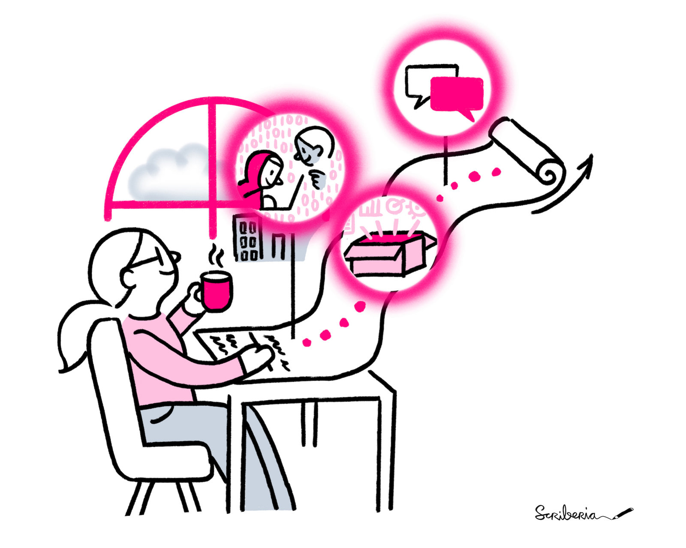
Fuente: The Turing Way Community & Scriberia. (2024). Illustrations from The Turing Way: Shared under CC-BY 4.0 for reuse. Zenodo.
Quienes hacemos ciencia frecuentemente usamos código de programación en lenguajes como R, Python o C++, para analizar datos, crear modelos, recopilar información y automatizar tareas, entre otras cosas.
Cuando el resultado final incluye muchos fragmentos de código empaquetados junto a otro tipo de información, como por ejemplo conjuntos de datos, documentación, ejemplos de uso o scripts auxiliares, lo llamamos software.
En este sentido, el software no es solo el código en sí, sino también la estructura que permite que ese código sea utilizado, comprendido y aplicado por otras personas.
¿Qué es el software de código abierto?
Software de código abierto (open source):
- Su código fuente está almacenado en un repositorio abierto y accesible.
- Se distribuye sin costo
- Permite que otras personas lo usen, modifiquen y distribuyan
Fuente: The Turing Way Community, & Scriberia. (2024). Illustrations from The Turing Way: Shared under CC-BY 4.0 for reuse. Zenodo.
Cuando ese software está almacenado en un repositorio abierto y accesible, exponiendo su base de código, decimos que es de código abierto (u Open Source, por su uso en inglés).
Frecuentemente se distribuye sin costo (gratis) junto con licencias que permiten a cualquier persona ver, usar, modificar o redistribuir el código fuente. En este encuentro vamos a usar código abierto y software abierto como sinónimos porque, si bien hay una diferencia técnica (ver diapositiva anterior), ambos comparten los mismos principios de acceso, uso, modificación y distribución
Un ejemplo común de software de código abierto en investigación son los paquetes de R o las librerías de Python, que suelen publicarse en repositorios abiertos y pueden ser descargados, utilizados y modificados por la comunidad. Este tipo de herramientas constituyen una parte fundamental del ecosistema de ciencia abierta, ya que facilitan compartir métodos y resultados de manera más clara y reproducible.
Principios
- Transparencia
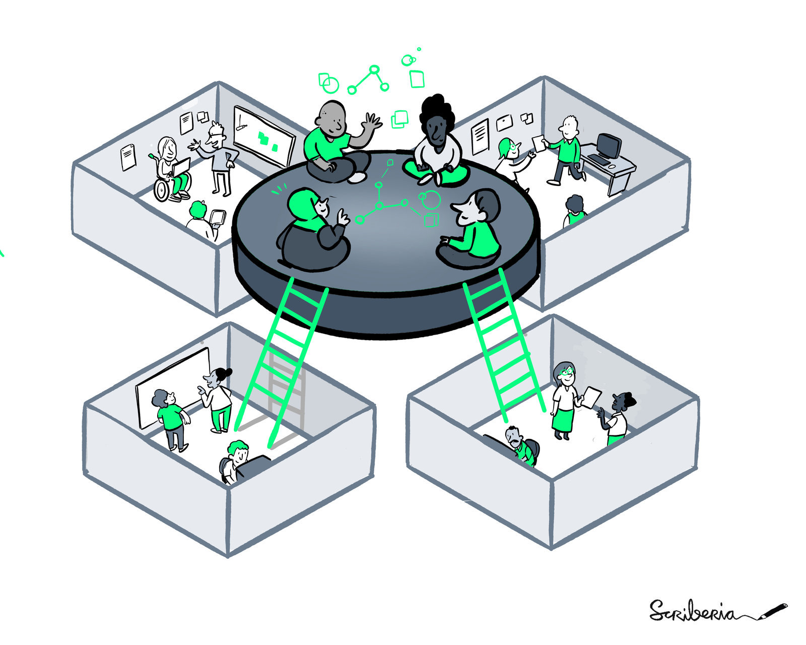
Fuente: The Turing Way Community, & Scriberia. (2022). Illustrations from The Turing Way: Shared under CC-BY 4.0 for reuse. Zenodo.
En el contexto del movimiento de Ciencia Abierta, el abrir nuestro código sigue ciertos principios:
En primer lugar, buscamos que el código sea transparente para:
- Permitir que otros revisen, repliquen y mejoren el trabajo existente.
- Facilitar la verificación independiente y se minimizan los errores.
- Evitar la duplicación de esfuerzos y acelera el proceso científico.
Principios
- Transparencia
- Compartir pronto y con frecuencia
Fuente: The Turing Way Community, & Scriberia. (2022). Illustrations from The Turing Way: Shared under CC-BY 4.0 for reuse. Zenodo.
En segundo lugar, se promueve el compartir temprano y compartir seguido. Esto implica compartir el código lo antes posible y de manera regular para recibir comentarios y sugerencias de otras personas. Esta retroalimentación ayuda a detectar problemas rápidamente, así como mejorar el código y probar nuevas ideas. Así, el desarrollo es más rápido y es más probable lograr buenas soluciones.
Principios
- Transparencia
- Compartir pronto y con frecuencia
- Colaboración, inclusividad y comunidad
Fuente: The Turing Way Community & Scriberia. (2022). Illustrations from The Turing Way: Shared under CC-BY 4.0 for reuse. Zenodo.
En tercer lugar, tenemos los principios de colaboración, inclusividad y comunidad:
La idea central es que los proyectos pueden mejorarse más rápidamente cuando muchas personas contribuyen y colaboran. También, al basarse en la colaboración, se pueden resolver problemas que requieren más recursos humanos y económicos de los que un grupo individual tiene.
Un buen ejemplo de este principio es LatamGPT, una iniciativa regional para desarrollar un modelo de lenguaje entrenado con datos y conocimiento de América Latina. A diferencia de proyectos cerrados desarrollados por una sola empresa, LatamGPT se construye a partir de la colaboración entre universidades, centros de investigación, gobiernos y comunidades tecnológicas de distintos países de la región. Esta colaboración permite reunir recursos, datos y conocimientos diversos, mejorar el modelo más rápidamente y asegurar que refleje mejor la diversidad lingüística, cultural y social de América Latina. En este momento, es algo que no hubiese podido lograr cualquiera de estos centros trabajando de forma aislada. Además, al involucrar a múltiples actores, se fortalece la sostenibilidad y continuidad del proyecto en el tiempo.
En este sentido, el principio de colaboración e inclusión también implica valorar y aprovechar la diversidad de experiencias, habilidades y puntos de vista que diferentes personas pueden aportar y, por lo tanto, eliminar barreras a la participación y asegurar que todas las voces sean escuchadas y respetadas.
Aunque, en general, no se opera por consenso (no se realizan votaciones en las que participen todas las personas que contribuyeron al proyecto), el trabajo exitoso y las mejores ideas naturalmente tienden a ganar el apoyo de la comunidad. A su vez, esto lleva a que los proyectos que mejor reflejen las necesidades de la comunidad, sean los que más atención y más recursos reciban.
Finalmente, las comunidades sólidas y comprometidas pueden mantener la continuidad de los proyectos de código abierto a lo largo del tiempo. El mantenimiento compartido entre varias personas hace que sea más sostenible.
¿Por qué es importante abrir nuestro código?
- Facilita la reproducción y validación de los resultados
- Reduce recursos necesarios para replicar experimentos
- Abre nuevas oportunidades de colaboración
- Aumenta la visibilidad de quien lo desarrolla
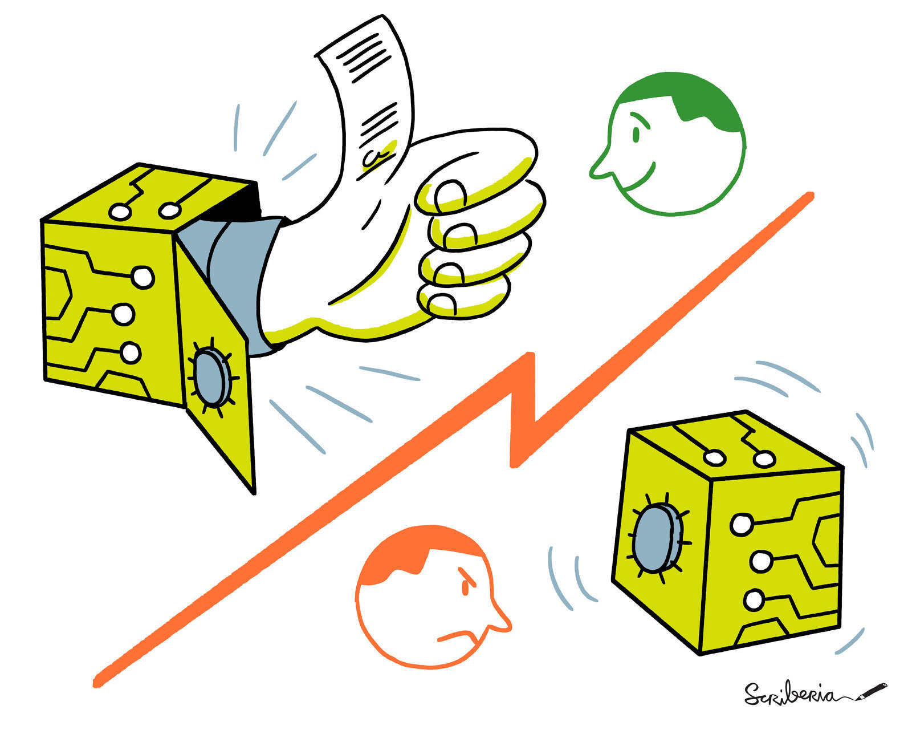
Fuente: The Turing Way Community, & Scriberia. (2022). Illustrations from The Turing Way: Shared under CC-BY 4.0 for reuse. Zenodo.
¿Por qué es importante compartir nuestro código? Venimos diciendo que la ciencia avanza más rápido cuando la comunidad científica puede:
- Trabajar junta para corregir errores
- Construir sobre los resultados de las demás personas
- Compartir recursos
Compartir el código es una parte clave de este proceso, en tanto:
Facilita que otras personas reproduzcan nuestros resultados, lo que contribuye a validar cualquier hallazgo que hayamos obtenido y a reducir los recursos necesarios para replicar los experimentos.
Además, esta práctica puede abrir nuevas oportunidades de colaboración con otras personas o equipos.
Finalmente, aumenta la visibilidad y mejora las oportunidades laborales y profesionales de los desarrolladores.
Ejercicio 1: Responde la encuesta de Zoom
Duración: 3 minutos
¿Cuál es la definición que aplica a software de Código Abierto?
- Se distribuye con su código fuente, permitiendo su uso, modificación y distribución, aunque con costo.
- Se distribuye con su código fuente de forma gratuita, permitiendo su uso, modificación y distribución con los mismos derechos originales.
- Se distribuye sin su código fuente, pero sin costo alguno, permitiendo que otros lo utilicen libremente.
Plan de gestión de software
En el encuentro anterior hablamos del Plan de Ciencia Abierta en general y, más en profundidad, del PGD o Plan de Gestión de Datos. Hoy vamos a ver un poco más en detalle el plan de gestión de software.
Plan de gestión de software (PGS)
Documento que detalla cómo se va a desarrollar, gestionar, preservar, licenciar, publicar y mantener el software creado en el contexto de un proyecto de investigación.

Fuente: The Turing Way Community, & Scriberia. (2022). Illustrations from The Turing Way: Shared under CC-BY 4.0 for reuse. Zenodo.
Un Plan de Gestión de Software en investigación es un documento que detalla cómo se va a desarrollar, gestionar, preservar, licenciar y compartir el software creado en el contexto de un proyecto de investigación. Este plan sirve como guía para el equipo que se encarga de desarrollar el software y además contribuye a asegurar la calidad, la eficiencia y la reproducibilidad de los resultados, al establecer pautas claras sobre el desarrollo, el versionado, la colaboración y el mantenimiento del código.
Plan de gestión de software (PGS)
- ¿Qué?
- ¿Cuándo?
- ¿Dónde?
- ¿Cómo?
- ¿Quiénes?
Fuente: The Turing Way Community, & Scriberia. (2022). Illustrations from The Turing Way: Shared under CC-BY 4.0 for reuse. Zenodo.
Como mínimo, un plan de gestión de software tiene que detallar:
- Qué hace nuestro software, cuales son sus objetivos, su alcance, a qué tipo de usuarios está destinado.
- Cuándo vamos a completar las distintas tareas vinculadas con el desarrollo y apertura del código: El cronograma para compartir y archivar el software.
- Dónde vamos a publicar y compartir el software mientras estemos trabajando en él y la plataforma donde se archivará a largo plazo.
- Cómo lo vamos a compartir para facilitar su reutilización (por ejemplo, mediante la asignación de un doi, una licencia, con buena documentación y pautas de contribución entre otros).
- Quiénes van a encargarse de las distintas tareas vinculadas al código: los roles y responsabilidades de las personas que integran el equipo.
A medida que nuestra investigación comience a generar y compartir código, el PGS proporcionará un manual o guía para los participantes del proyecto.
Plan de gestión de software (PGS)
¿Qué compartir?
- ¿Hay que considerar políticas del financiador o regulaciones locales?
- ¿Hay problemas de seguridad relacionados con el código?
- ¿Cuál es la finalidad de compartir?
Fuente: The Turing Way Community, & Scriberia. (2022). Illustrations from The Turing Way: Shared under CC-BY 4.0 for reuse. Zenodo.
¿Cómo decidimos qué compartir?
Es importante considerar si compartir nuestro código es consistente o no con las políticas de la agencia de financiamiento o con las regulaciones locales.
También hay que considerar que hay situaciones donde no es recomendable compartir el código de forma abierta, por ejemplo cuando hay potenciales problemas de seguridad relacionados con el código. En el caso de sistemas informáticos críticos que necesitan estar resguardados es posible que no sea buena idea compartir el código de forma abierta ya que podría dar información acerca de cómo adjuntar código malicioso al software en un intento de infiltración.
Otra consideración importante a tener en cuenta es cuál es el objetivo de compartir nuestro código de forma abierta. En general hay dos finalidades principales:
- Queremos compartir con la intención de desarrollar código entre varias personas de un mismo equipo o para abrir el código a sugerencias y contribuciones de personas externas.
- O queremos proporcionar un registro a largo plazo de una versión estática del mismo. Por ejemplo, para compartir en un artículo académico el código utilizado para analizar los datos.
Definir la finalidad de abrir nuestro código, va a ayudarnos a decidir cuándo abrirlo y dónde publicarlo.
Plan de gestión de software (PGS)
¿Qué compartir?
No compartir cuando el código:
- Incluya secretos militares de un país
- Esté restringido por políticas institucionales o regulaciones organizacionales
- Incorpore propiedad intelectual
Fuente: The Turing Way Community, & Scriberia. (2022). Illustrations from The Turing Way: Shared under CC-BY 4.0 for reuse. Zenodo.
Hay ocasiones en donde NO es recomendable compartir código, ya sea por consideraciones legales y de seguridad:
Algunas razones válidas que restringen a un científico/científica a compartir su código completo o parcial, pueden incluir:
- O que las políticas institucionales o regulaciones locales no permitan el intercambio de código.
- Que el código incorpore propiedad intelectual, datos e incluso información patentada. Recordemos que si no tiene una licencia abierta que permita que lo reusemos, está protegido por los derechos de autor.
- Que el código incorpore secretos militares de un país o su difusión viole los intereses nacionales o políticas de seguridad.
Siempre debemos pensar en lo que estamos compartiendo y las implicaciones de hacerlo.
Plan de gestión de software (PGS)
¿Cuándo compartir?
Planifica compartir tu código desde el inicio.
Fuente: The Turing Way Community, & Scriberia. (2022). Illustrations from The Turing Way: Shared under CC-BY 4.0 for reuse. Zenodo.
¿Cuál es el momento adecuado para compartir nuestro código?
Depende del objetivo:
Si compartiremos código para que otros puedan reproducir nuestros resultados, es una buena idea compartirlo al final del desarrollo. En cambio, si el desarrollo es innovador y realizaremos entregas parciales del software, es una buena opción publicar código al final de cada iteración.
Depende también de los requisitos del financiador o de la editorial académica (si es que adjuntamos el código a un artículo de una revista de acceso abierto).
Plan de gestión de software (PGS)
¿Dónde compartir?
Archivo
- Almacenamiento estático, a largo plazo, para versiones estables de software.
Dependiendo la finalidad, el lugar en que almacenaremos el código puede variar.
Si bien venimos hablando de repositorios para el almacenamiento de datos, cuando hablamos de código podemos distinguir dos tipos distintos de almacenamiento: el repositorio y el archivo.
Un repositorio de software es un espacio dinámico y colaborativo de trabajo donde almacenamos código sobre el que estamos trabajando o que es activamente mantenido, lo que alienta la colaboración y su mejora constante. Para eso usamos plataformas como GitHub o GitLab que tienen control de versiones (en unas diapositivas más vamos a ver qué es).
Alternativamente, un archivo de software es una forma de almacenamiento estático donde se almacenan lanzamientos de software estables ya testeados o proyectos ya cerrados. La idea es alojar ahí versiones terminadas de un software, para las que el proceso de colaboración hasta un producto final ya haya finalizado, al menos hasta esa versión. Un ejemplo de archivo es Zenodo.
Plan de gestión de software (PGS)
¿Dónde compartir?
Otras alternativas
- Revistas de acceso abierto dedicadas al software.
- Repositorios de software para paquetes o librerías.
- Comunidades con revisión por pares.
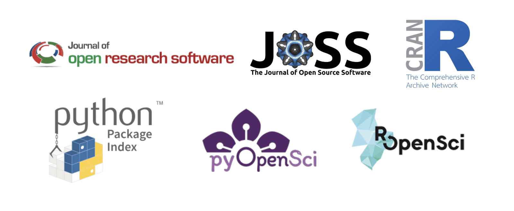
Otra opción para almacenar y compartir código son las revistas de acceso abierto dedicada al software abierto, que permiten archivar una versión estática del código junto a un artículo (por ejemplo, journal of open source software y el journal of open research software).
Si desarrollamos un paquete puede ser publicado en un repositorio de software utilizado comúnmente por administradores de paquetes tales, como CRAN (repositorio de paquetes desarrollados en R) y PyPI (repositorio de paquetes desarrollados en python). En general, esta práctica hace que sea más fácil para los usuarios instalar el software, e incluso reutilizarlo.
Además, existen comunidades que realizan revisión por pares de software, donde desarrolladores y revisores evalúan aspectos como la calidad del código, la documentación, las pruebas y la utilidad del paquete. Por ejemplo, pyOpenSci revisa paquetes desarrollados en Python, mientras que rOpenSci realiza revisiones para paquetes del ecosistema de R. Estos procesos no solo ayudan a mejorar el software antes de su publicación, sino que también promueven buenas prácticas de desarrollo, documentación clara y mayor confiabilidad para quienes reutilizan ese código. Una vez aceptados, los paquetes pasan a formar parte del ecosistema recomendado por estas organizaciones, lo que facilita su descubrimiento, reutilización y mantenimiento.
Intercambio en salas de grupo
¿Cómo vamos a trabajar?
- Cada grupo elige una persona para moderar la conversación, optimizar tiempos y socializar la palabra.
- Cada grupo elige una persona representante para sintetizar y compartir el intercambio en la sala principal.
Al igual que en los encuentros anteriores vamos a tener una actividad en salas de grupos. Recuerden que para esta dinámica cada grupo elige una persona para moderar la conversación, y otra persona que represente al grupo en la sala principal y nos cuente brevemente qué temas surgieron.
Ejercicio 2: Sala de grupos
Duración: 10 minutos
Piensen en su experiencia con código y conversen:
- ¿Has reusado código de otras personas?
- ¿Escribes código propio?
- ¿Lo compartes?
- ¿Qué plataformas usas?
- ¿Qué dificultades has encontrado?
Pausa
Volvemos en 10 minutos
No te desconectes pero sí aléjate de las pantallas.
- Caetano Veloso (Brasil) — Canciones del disco Fina Estampa
Control de versiones
Práctica estándar de controlar y gestionar cambios hechos al código.
Facilita:
- Seguimiento de cambios
- Seguimiento de las contribuciones
- Revertir cambios no deseados o errores
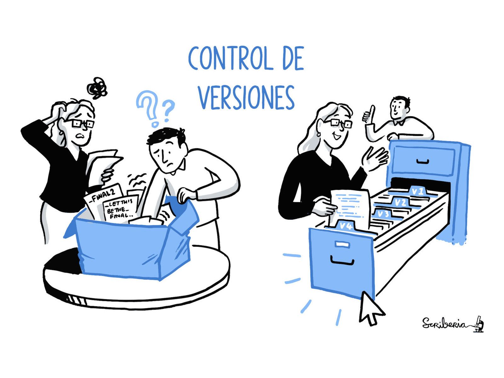
Fuente: The Turing Way Community, & Scriberia. (2022). Illustrations from The Turing Way: Shared under CC-BY 4.0 for reuse. Zenodo.
A menudo las personas que trabajan en investigación no tienen formación de base técnica en términos de desarrollo de software, no obstante necesitan adquirir habilidades en programación y gestión de código para desarrollarse en sus carreras. Lo que vamos a ver a continuación es esencial para sus proyectos de investigación actuales y potenciales.
Mencionamos que algunos repositorios usan control de versiones. ¿Qué es el control de versiones?
Un ejemplo seguramente más cercano es el control de cambios en herramientas como Microsoft Word o google docs. Esto nos permite rastrear y gestionar los cambios en un documento. Pero no sería lo más apropiado para trabajar con código.
Necesitamos herramientas específicas que permitan rastrear los cambios en el código y maneras ágiles de trabajar de manera colaborativa en los equipos de trabajo.
El control de versiones:
- Ayuda a seguir los cambios en todos los archivos vinculados a un proyecto de código, a lo largo de toda su evolución.
- Permite hacer un seguimiento de las contribuciones realizadas por distintas personas.
- Los cambios no deseados, como aquellos que lleven a errores o fallos, pueden revertirse en cualquier momento.
Control de versiones
Herramienta más utilizada para control de versiones en proyectos de software y ciencia de datos.
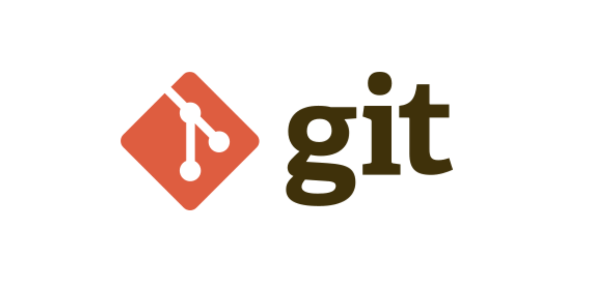
La herramienta más utilizada para control de versiones en proyectos de software y ciencia de datos es Git.
Git es un sistema de control de versiones diseñado para registrar los cambios que se realizan en archivos a lo largo del tiempo.
A diferencia de herramientas de edición de documentos como Word o Google Docs, Git está pensado específicamente para trabajar con archivos de código y proyectos completos. Esto significa que no solo registra cambios en un documento aislado, sino en todo el conjunto de archivos que forman un proyecto.
Fue creado originalmente para el desarrollo de software, pero hoy se usa en proyectos colaborativos de todo tipo, incluyendo cuando solo incluyen texto pero con muchos archivos en simultáneo.
Control de versiones
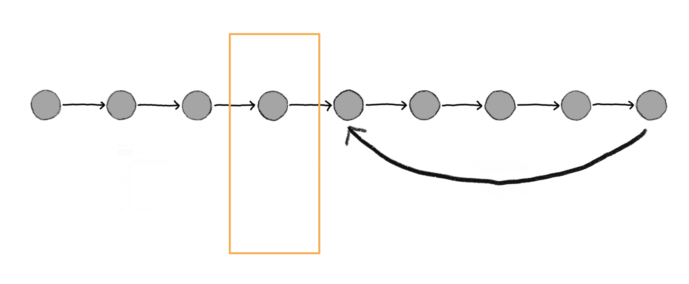
Fuente: The Turing Way Community. (2025). The Turing Way handbook for reproducible, ethical and collaborative research. Zenodo.
¿Cómo funciona en términos simplificados?
Durante el desarrollo de un proyecto, el control de versiones va guardando distintos puntos en el tiempo y cada uno de estos puntos representa una foto del estado del código en ese momento. Cada vez que hacemos un cambio y lo guardamos en el sistema de control de versiones, se crea y guarda una nueva foto junto con un mensaje que describe los cambios que se hicieron.
De esta forma podemos:
- Ver la historia completa del proyecto
- Saber quién hizo cada cambio
- Recuperar versiones anteriores si algo deja de funcionar
- Probar modificaciones sin romper la versión principal del proyecto
Control de versiones
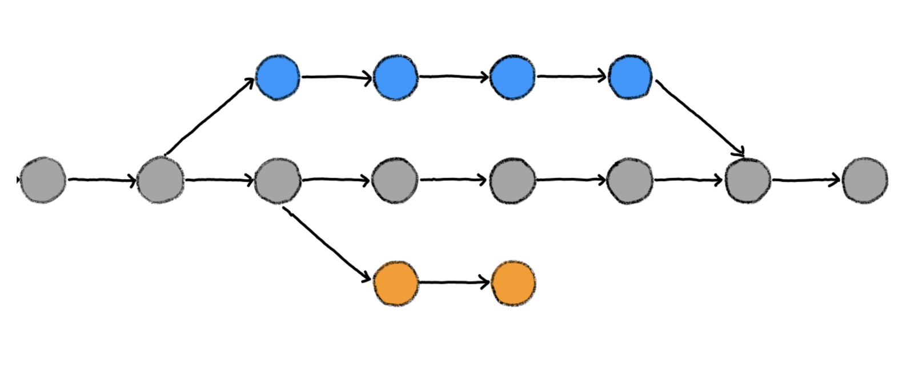
Fuente: The Turing Way Community. (2025). The Turing Way handbook for reproducible, ethical and collaborative research. Zenodo.
Además de guardar puntos en el tiempo, el control de versiones nos permite trabajar en paralelo.
Así podemos probar nuevas funciones, nuevas ideas, generando versiones alternativas como las líneas azul y naranja (las vamos a llamar ramas), sin afectar la versión principal del código (en este caso la línea gris) que ya sabemos que funciona correctamente.
Cuando el código nuevo está listo y estamos conformes con el resultado, podemos integrarlo nuevamente en la rama principal.
Otra ventaja importante es la colaboración.
Git permite que varias personas trabajen sobre el mismo proyecto al mismo tiempo. Cada persona puede trabajar en su propia copia del proyecto y luego combinar sus cambios con los del resto del equipo.
Y, al igual que antes, si algo sale mal, siempre podemos deshacer los cambios y volver a una versión estable del código.
Plataformas de control de versiones
Aunque podemos usar Git localmente, en nuestra computadora, normalmente se combina con plataformas en línea que alojan repositorios de código, como GitHub, GitLab o Bitbucket. Estas plataformas online de control de versiones nos permite:
- Almacenar en la ube nuestro código junto con todo el historial de cambios
- Colaborar con otras personas, que pueden ver el código, proponer cambios y contribuir al proyecto.
GitHub es una de las plataformas más populares y la mayoría de los proyectos de software de código abierto, es decir, proyectos públicos en los que cualquiera puede colaborar, están alojados en esta plataforma.
En el chat les vamos a compartir algunos videos que armamos para otra capacitación donde explicamos como clonar un repositorio en github, como dejar comentarios y sugerencias usando issues, y como colaborar en proyectos abiertos.
Para pegar en el chat:
Integraciones útiles
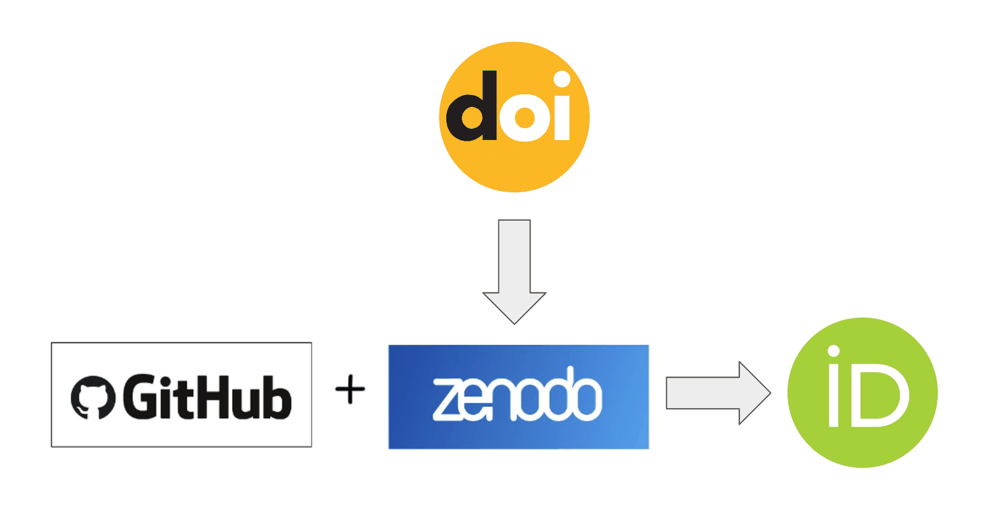
Ahora bien, ¿si subimos nuestro código a un repositorio de GitHub podemos decir que lo almacenamos de forma permanente? No. El contenido del repositorio puede ir cambiando.
Para que nuestro trabajo sea realmetne reproducible, tenemos que eventualmente archivarlo en una plataforma de almacenamiento a largo plazo como zenodo. Una gran ventaja de GitHub es que podemos integrarlo con Zenodo y, no solo ir archivando versiones estáticas de nuestro código, sino que podemos además usarlo para asignarle un DOI y citarlo con esa herramienta.
Y otra cuestión interesante es que podemos vincular zenodo con la plataforma de ORCID, y que nuestro código o software aparezca en nuestro perfil de ORCID vinculado a nuestra producción académica.
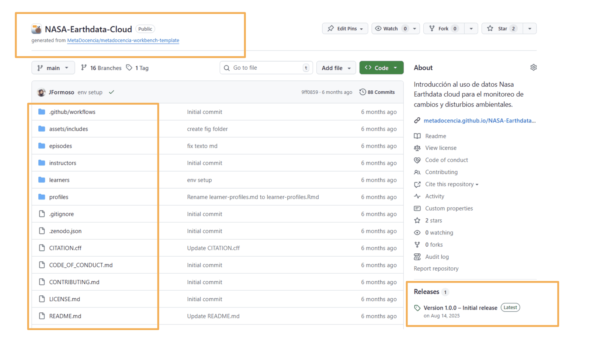
Acá tenemos un repositorio de Github, el código ya está almacenado en el repositorio con control de versiones. Ya es abierto, colaborativo, transparente. Vamos a hablar de como mejorar la manera de compartirlo aprovechando la integración de GitHub + Zenodo.
El nombre del repositorio es NASA-Earthdata-Cloud, y debajo podemos ver todos los archivos almacenados allí. Debajo a la derecha vemos que hicimos un “Release”. Un release en GitHub es una versión específica del repositorio que el autor decide publicar como una versión oficial o estable, que otras personas puedan usar o citar.
Cada release:
- Está asociado a un punto exacto en el historial de cambios del repositorio
- Tiene un nombre y un número de versión, por ejemplo: versión 1.0.0
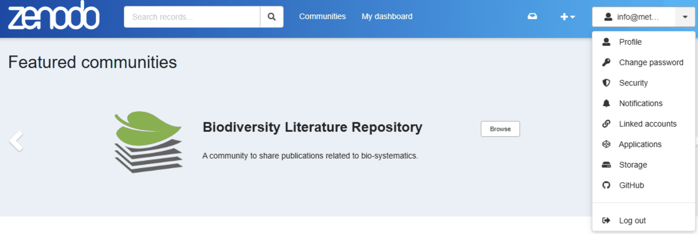
Esta es la plataforma Zenodo, y a la derecha, en el desplegable asociado a nuestro usuario, podemos ingresar a la sección que nos permite conectar nuestra cuenta de Zenodo con nuestra cuenta de GitHub.
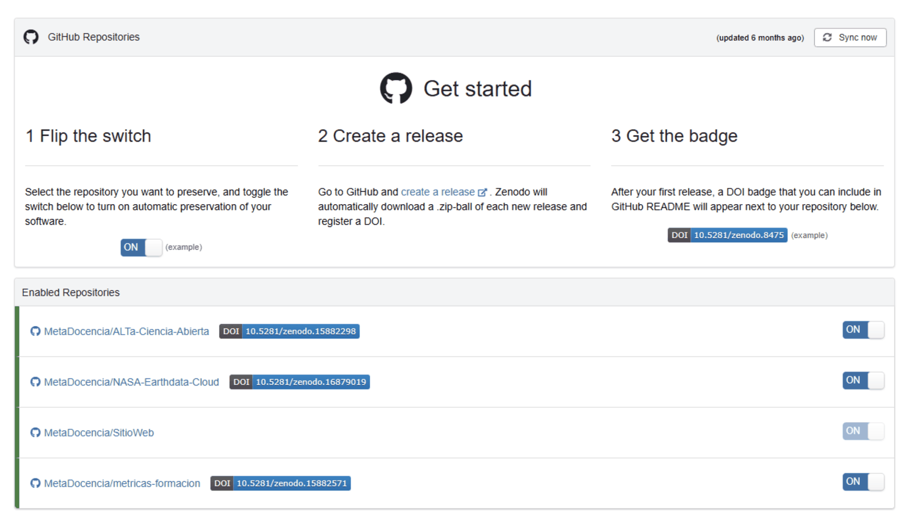
Una vez que las cuentas están vinculadas, en Zenodo nos van a aparecer listados nuestros repositorios de GitHub. Ubicamos el que nos interesa archivar en zenodo y dejamos el interruptor que está a la derecha en ON.
De esa forma le decimos a Zenodo que cada vez que hagamos un release de ese repositorio en github, zenodo lo archive.
El segundo paso es justamente crear el release en GitHub, que es lo que les mostré antes..
En ese momento, automáticamente Zenodo:
- Hace una copia completa del repositorio
- Lo almacena
- Y le asigna un DOI
Este DOI es lo que transforma el repositorio en un objeto citable académicamente. Es decir, ahora este software o estos materiales se pueden citar igual que un paper o un dataset.
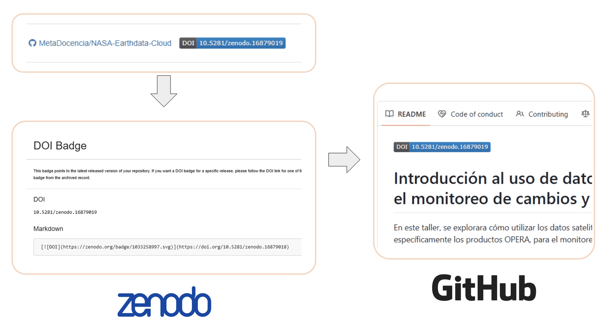
El tercer paso es que Zenodo nos da un badge (el recuadro azul), que podemos poner en el repositorio de GitHub, en general en un archivo específico que se llama README. Ese badge muestra el DOI y permite que otras personas accedan fácilmente a la versión archivada haciendo click sobre el rectángulo azul.
La idea importante para llevarse de esta diapositiva es:
- GitHub sirve para trabajar y desarrollar el proyecto,
- pero Zenodo sirve para preservarlo y hacerlo citable.
- GitHub es dinámico.
- Zenodo es el archivo permanente.
Ejercicio 3: Responde la encuesta de Zoom
Duración: 3 minutos
¿Cuál es una de las principales razones para usar control de versiones en proyectos de Código Abierto?
- Aumenta la velocidad de ejecución del código.
- Resuelve automáticamente todos los conflictos que surgen de ediciones simultáneas de código que contribuyen distintas personas.
- Permite hacer un seguimiento de los cambios en el código y la documentación de un proyecto a lo largo de su evolución.
Plan de gestión de software (PGS)
¿Cómo compartir?
Archivo README.md
- Nombre y breve descripción
- Instrucciones de instalación o ejecución
- Dependencias
- Ejemplos de uso

Fuente: The Turing Way Community, & Scriberia. (2022). Illustrations from The Turing Way: Shared under CC-BY 4.0 for reuse. Zenodo.
¿Cómo nos aseguramos de que nuestro código sea reutilizable cuando lo compartimos?
Primero, podemos asignarle un DOI, como vimos en las diapositivas anteriores.
Además, tenemos que agregar un archivo README.md al
repositorio de GitHub. Este archivo es la primera parada para cualquier
persona que se acerca a un proyecto nuevo. Contiene información
orientativa que permite comprender su propósito y reúne aquello que
consideramos importante para poder utilizarlo.
Como mínimo, un README.md debe incluir el nombre del
proyecto y una descripción breve, escrita en lenguaje sencillo, que
explique qué hace el código o el programa.
También es útil agregar:
- Instrucciones para instalar y ejecutar el software.
- Una lista de las dependencias necesarias.
- Ejemplos de uso.
- Información sobre cómo nos gustaría que citaran nuestro trabajo.
Plan de gestión de software (PGS)
¿Cómo compartir?
- Archivo
LICENSE.md - Información sobre cómo citar:
CITATION.cff
- Guía para colaboraciones:
CONTRIBUTING.mdCODE_OF_CONDUCT.md
Fuente: The Turing Way Community, & Scriberia. (2022). Illustrations from The Turing Way: Shared under CC-BY 4.0 for reuse. Zenodo.
También se recomienda que el repositorio incluya:
- Una licencia apropiada, para que otras personas sepan cómo pueden
usar el código. Al crear un repositorio en GitHub podemos seleccionar
una de las licencias disponibles. Esta se almacenará en un archivo
llamado
LICENSE.md. Si queremos usar una licencia que no aparece en la lista, podemos crear el archivo y agregar el texto completo o un enlace al texto de la licencia. - Un archivo
CITATION.cff, con información estandarizada sobre cómo citar el código. Vamos a verlo con más detalle en la próxima diapositiva. - Una guía para colaboraciones. Si esperamos que la comunidad
contribuya al desarrollo del software, es una buena práctica incluir un
archivo
CONTRIBUTING.mdque explique cómo aportar al proyecto. - Un código de conducta, almacenado en un archivo
CODE_OF_CONDUCT.md, que describa las expectativas para las interacciones entre las personas que participan en el proyecto.
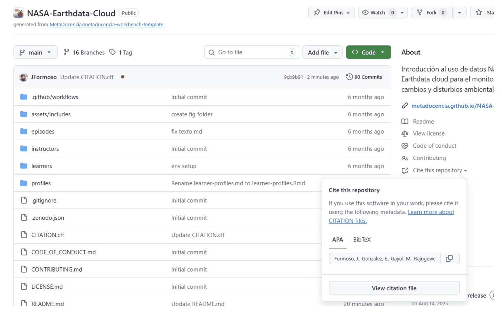
Cuando un repositorio incluye los archivos CITATION.cff,
CODE_OF_CONDUCT.md, CONTRIBUTING.md,
LICENSE.md y README.md, GitHub los reconoce y
los muestra también en la sección derecha de la página.
Si el archivo CITATION.cff está creado correctamente,
GitHub ofrece la opción de copiar directamente la cita del repositorio
en formato APA o BibTeX.
Podemos usar el siguiente recurso para generar este archivo paso a paso, descargarlo y subirlo al repositorio:
Plan de gestión de software (PGS)
¿Cómo compartir?
Los cuadernos computacionales o notebooks son entornos virtuales e interactivos que permiten combinar texto, código y los resultados de su ejecución, como tablas y visualizaciones.
Fuente: The Turing Way Community, & Scriberia. (2022). Illustrations from The Turing Way: Shared under CC-BY 4.0 for reuse. Zenodo.
Otra cuestión importante es cómo presentamos el código que queremos compartir.
En algunos casos, especialmente cuando queremos obtener un resultado reproducible para un proyecto de investigación, podemos presentar el código mediante cuadernos computacionales o notebooks, en lugar de compartirlo únicamente como archivos de texto plano, como podría ser un script de R.
Los cuadernos computacionales son entornos virtuales e interactivos que permiten combinar texto, código y los resultados de su ejecución —por ejemplo, tablas y visualizaciones— en un mismo documento.
Ejemplo: Jupyter Notebooks
Combinación de texto enriquecido, código y resultados de su ejecución.
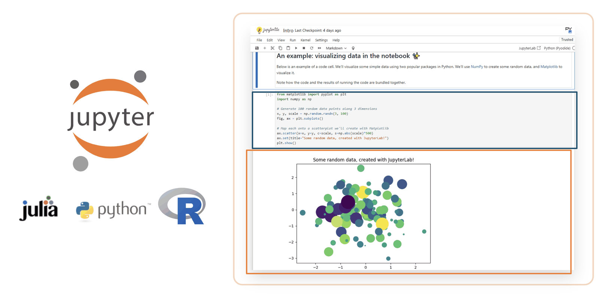
Fuente: Project Jupyter.
Un ejemplo son los Jupyter Notebooks, un formato que puede utilizarse con distintos lenguajes de programación y que permite combinar texto, código y resultados o salidas.
Otros formatos utilizados con frecuencia son Quarto y R Markdown.
Plan de gestión de software (PGS)
¿Quiénes?
Comprende los roles y las responsabilidades necesarios para compartir y, si corresponde, mantener el código.
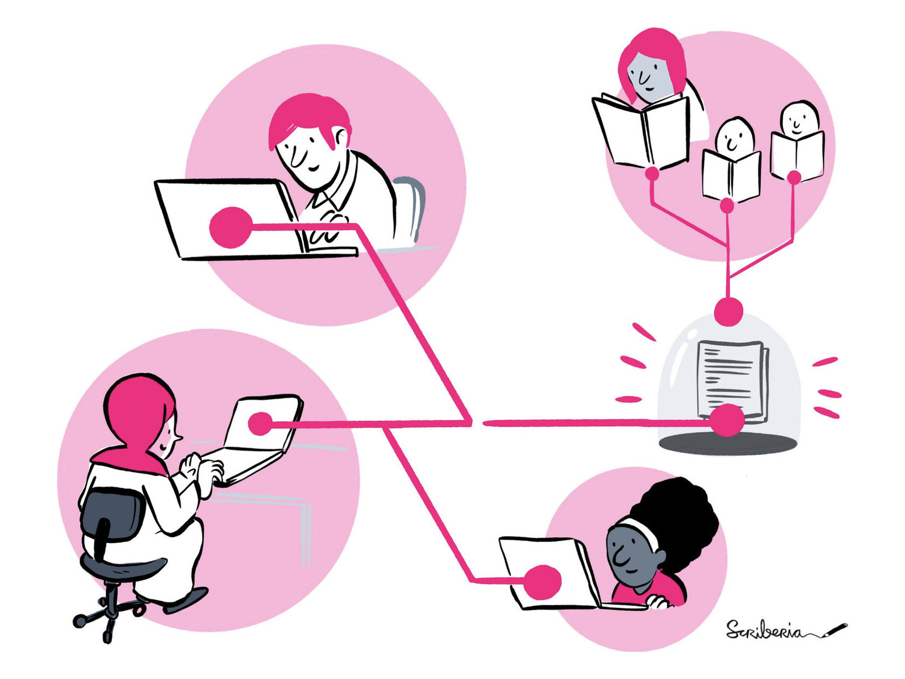
Fuente: The Turing Way Community, & Scriberia. (2022). Illustrations from The Turing Way: Shared under CC-BY 4.0 for reuse. Zenodo.
Al redactar un Plan de Gestión de Software es importante definir los roles y las responsabilidades necesarios para compartir y, si corresponde, mantener el código del proyecto.
Tenemos que definir:
- Quién agregará el código a un repositorio público y le asignará una licencia.
- Quién se encargará de documentarlo.
- Quiénes ayudarán a otras personas a reutilizarlo.
- Quién tendrá la responsabilidad de mantener el software.
- Quién responderá los comentarios y las contribuciones de la comunidad.
Es importante que las responsabilidades estén claramente asignadas entre las personas que integran el equipo.
Reusar Código Abierto
Todo lo que vimos hasta ahora se aplica al código que desarrollamos. Pero, si alguna vez escribieron código para cualquier tipo de actividad, probablemente sepan que muchas soluciones ya existen y que no siempre necesitamos reinventar la rueda.
Hay una gran cantidad de paquetes y bibliotecas que incluyen las funciones que necesitamos. También existen personas y equipos que ya desarrollaron maneras de resolver parte de los problemas que podemos encontrar.
Por eso, gran parte del trabajo con código consiste en reutilizar Código Abierto creado por otras personas.
¿Cómo buscar Código Abierto?
- Definir un propósito claro.
- Determinar qué tareas esperamos que lleve a cabo el código.
- Usar palabras clave relacionadas con el propósito de programación.
- Identificar dónde buscar: foros, literatura científica, repositorios abiertos y colegas con experiencia.
Para buscar Código Abierto, primero tenemos que definir nuestro propósito:
- ¿Qué tarea específica necesitamos realizar?
- ¿Qué lenguaje de programación es adecuado para esa tarea?
- ¿Existen proyectos de Código Abierto que resuelvan un problema similar?
También necesitamos familiarizarnos con la terminología que utilizan quienes desarrollan código con propósitos parecidos al nuestro. Esto nos ayudará a seleccionar mejores palabras clave.
Podemos buscar:
- En artículos científicos.
- En repositorios abiertos.
- En foros y comunidades.
- Consultando a colegas con experiencia.
¿Cómo evaluar Código Abierto?
- Funcionalidad: ¿será útil para el problema científico?
- Interoperabilidad: ¿se integra fácilmente con otros programas o archivos que usamos?
- Seguridad: ¿es seguro? ¿Su uso podría crear un riesgo de seguridad?
- Licencias y restricciones: ¿es legal usar este código en nuestro proyecto?
Más información: Open Worldwide Application Security Project (OWASP)
Una vez que encontramos código potencialmente útil, necesitamos evaluarlo desde distintas perspectivas.
Funcionalidad: ¿será útil para nuestro problema científico? Podemos revisar la documentación y consultar a colegas que tengan experiencia utilizando ese código o software.
Interoperabilidad: ¿es compatible con los sistemas que ya usamos? ¿Puede importar o exportar datos en formatos estándar? ¿Se integra con otras aplicaciones sin requerir adaptaciones complejas?
Seguridad: ¿es seguro? ¿Su uso podría crear un riesgo para nuestro proyecto o nuestra institución?
Para evaluar este punto podemos:
- Consultar las políticas institucionales sobre software abierto y al equipo de tecnologías de la información.
- Utilizar fuentes autorizadas y de buena reputación.
- Emplear herramientas para identificar vulnerabilidades.
Un recurso útil es OWASP, una fundación sin fines de lucro dedicada a mejorar la seguridad del software. Sus recursos son desarrollados por una comunidad de personas voluntarias y están disponibles de manera abierta.
Licencias y restricciones: ¿podemos usar legalmente ese código en nuestro proyecto? Para responder esta pregunta necesitamos conocer y revisar su licencia.
Para compartir en el chat: https://owasp.org/
¿Cuándo citar Código Abierto?
- Cuando cumple un rol crítico en la investigación.
- Cuando constituye una contribución novedosa.
- Cuando su licencia requiere atribución.
¿Cuándo tenemos que citar el código?
Cuando cumple un rol crítico en la investigación: si el código fue fundamental para desarrollar el trabajo o producir los resultados, debemos citarlo.
Cuando constituye una contribución novedosa: si el código aportó una solución que no podríamos haber desarrollado por nuestra cuenta, también corresponde citarlo.
Algunos ejemplos son:
- Un programa, paquete o biblioteca utilizado para modelar fenómenos, analizar datos o realizar simulaciones numéricas.
- Un programa, paquete o biblioteca utilizado para tareas como el procesamiento de imágenes o el reconocimiento óptico de caracteres.
- Cualquier software cuya licencia requiera atribución.
¿Cómo citar Código Abierto?
- Es recomendable usar y citar código archivado en un repositorio a largo plazo con un DOI permanente.
- Sigue el formato de citación indicado en el archivo
READMEoCITATION. - Haz referencia explícita a la versión utilizada.
¿Cómo citamos el código?
En primer lugar, podemos consultar las indicaciones de la revista o publicación, ya que algunas tienen requisitos específicos para citar software.
Es recomendable usar y citar código archivado en un repositorio a largo plazo que cuente con un DOI permanente. Esto contribuye a garantizar la reproducibilidad del trabajo.
Las páginas web y los repositorios activos, como GitHub, pueden cambiar con el tiempo. Podemos citarlos si no existe otra alternativa, pero siempre es preferible utilizar una versión archivada y estable.
También debemos seguir el formato de citación recomendado en el
archivo README, CITATION o en la documentación
del software, e indicar de manera explícita qué versión utilizamos.
Ejercicio 4: Responde la encuesta de Zoom
Duración: 3 minutos
¿Cuándo es necesario citar el uso de software abierto en tu investigación?
Elige 2 opciones:
- Cuando el software desempeñó un papel fundamental en tu investigación.
- Cuando el software se utilizó para enviar y recibir correos electrónicos sobre la investigación.
- Cuando la licencia del software requiere atribución.
Recapitulando
- Escribe el Plan de Gestión de Software antes de iniciar el proyecto.
- ¡Usa control de versiones! Permite hacer un seguimiento de los cambios en el código y la documentación de un proyecto.
- Siempre agrega un archivo
README.mddescriptivo. - No olvides citar todo el código que reutilizas.
Lecturas útiles
🚨 ¡Aviso! Te invitamos a que, si encuentras errores o tienes sugerencias, los publiques como un issue en GitHub. Dar una devolución abierta es una excelente manera de contribuir a un proyecto.
Crítica constructiva
Una crítica constructiva:
- Es positiva.
- Es específica.
- Sugiere próximos pasos.
Antes de presentar la encuesta, recuerda que es esencial ofrecer críticas constructivas. Una crítica constructiva tiene tres características principales: es positiva, es específica y sugiere un próximo paso.
La nota original utiliza una escena de Mafalda para contrastar una opinión general y negativa sobre la sopa con una devolución más constructiva: reconocer primero algo valioso y luego sugerir un cambio concreto, como reemplazar las verduras por fideos de letras.
Valoramos tu opinión: completa nuestra encuesta anónima
Invita al grupo a practicar lo conversado mediante una breve devolución que ayude a mejorar la formación.
Aclara que no es necesario dedicar mucho tiempo a la encuesta, pero que sus respuestas son fundamentales para aprender del proceso. Todas las sugerencias se leen y se tienen en cuenta: algunas permiten introducir cambios inmediatos y otras orientan mejoras a más largo plazo.
Certificación NASA: evaluación del módulo
Duración: 15 minutos
Accede a la evaluación del módulo.
¿Tienes dudas? Puedes consultar levantando la mano o escribiendo en el chat.
¿Terminaste? Puedes salir de la reunión. ¡Hasta la próxima!
Herramientas de Ciencia Abierta
| Encuentro | Tema |
|---|---|
| Encuentro 1 | Qué, por qué y cómo de la Ciencia Abierta |
| Encuentro 2 | Cómo usar, crear y compartir Datos Abiertos |
| Encuentro 3 | Cómo usar, crear y compartir Código Abierto |
| Encuentro 4 | Cómo usar, crear y compartir Resultados Abiertos |
¡Muchas gracias!
Este encuentro fue posible gracias a:
- NASA Open Science
- Code for Science & Society (CS&S)
Referencia sugerida:
https://doi.org/10.5281/zenodo.18894415
Puedes encontrar a MetaDocencia como @metadocencia en:
¡Muchas gracias! Este encuentro fue posible gracias a NASA Open Science y Code for Science & Society (CS&S).
Content from Resultados Abiertos
Última actualización: 2026-09-03 | Mejora esta página
Tiempo estimado: 140 minutos
Resultados Abiertos
Herramientas de Ciencia Abierta — Encuentro 4
Jesica Formoso, Nicolás Palopoli, Irene Vazano, Laura Ación, Julián Buede y Paz Míguez
Este material se comparte bajo una licencia Creative Commons Atribución 4.0 Internacional (CC BY 4.0).
Da la bienvenida al grupo.
Antes de comenzar, recuerda que el encuentro será grabado. Si bien nos gusta que las personas mantengan sus cámaras encendidas para poder interactuar de forma más fluida, quienes prefieran no aparecer en el video pueden apagarlas.
Indica que el equipo de apoyo iniciará la grabación.
Antes de empezar
Pautas para un espacio amable para todas las personas
- Para participar: pedí la palabra o usá el chat.
- Micrófonos: silenciá el micrófono cuando termines de hablar.
- Pedí permiso antes de tomar registros de otras personas durante el encuentro.
Consulta las Pautas de Convivencia de MetaDocencia.
Recuerda que todos los espacios de MetaDocencia se rigen por nuestras Pautas de Convivencia. Comparte el enlace en el chat.
En resumen, buscamos que este sea un espacio seguro, respetuoso e inclusivo, donde podamos intercambiar ideas con empatía, escuchar distintas perspectivas y tratarnos con amabilidad. Debemos evitar cualquier tipo de acoso, destrato o comentario que pueda incomodar a otras personas.
Para ordenar la interacción, pide que quienes quieran participar levanten la mano virtual o escriban en el chat. Al terminar de hablar, deben volver a silenciar el micrófono para evitar sonidos de fondo.
Nos presentamos
Jesica Formoso
Coordinadora del área de Medición de ImpactoNicolás Palopoli
Codirector ejecutivo e integrante del Consejo AsesorIrene Vazano
Coordinadora del área de InfraestructuraJulián Buede
Equipo de Comunicación
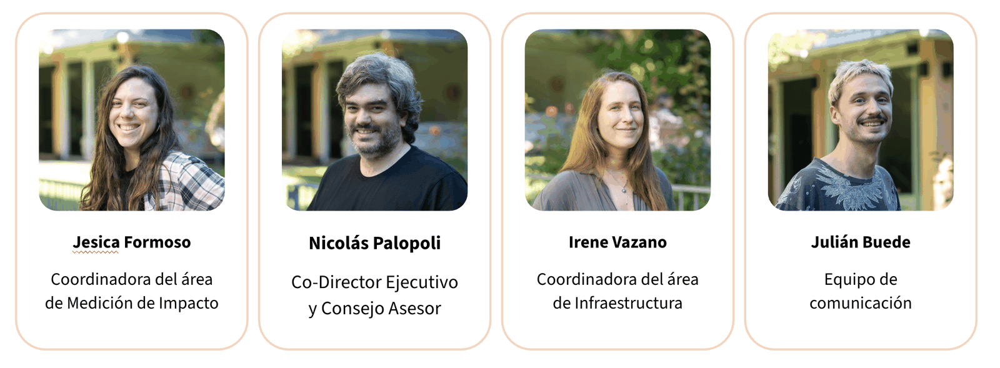
Quienes guían el encuentro se presentan y mencionan a las personas que conforman el equipo de apoyo ese día.
Herramientas de Ciencia Abierta
| Encuentro | Tema |
|---|---|
| Encuentro 1 | Qué, por qué y cómo de la Ciencia Abierta |
| Encuentro 2 | Cómo usar, crear y compartir Datos Abiertos |
| Encuentro 3 | Cómo usar, crear y compartir Código Abierto |
| Encuentro 4 | Cómo usar, crear y compartir Resultados Abiertos |
En los encuentros anteriores vimos el qué, por qué y cómo de la Ciencia Abierta, además de algunas de las herramientas más utilizadas para ponerla en práctica. Profundizamos en cómo usar, crear y compartir Datos Abiertos y Código Abierto.
En este encuentro, el foco estará puesto en cómo usar, crear y compartir Resultados Abiertos que sigan los principios FAIR: que sean fáciles de encontrar, accesibles, interoperables y reutilizables.
Estos resultados no se limitan a las publicaciones científicas, sobre las que conversaremos en profundidad, sino que también incluyen muchos otros productos menos tradicionales.
Resultados del proceso de investigación
La descripción tradicional de un “resultado científico” cambió con el tiempo.
Cuando pensamos en resultados de investigación, muchas veces pensamos únicamente en la publicación final: un libro, un artículo académico o las actas de un congreso. Sin embargo, los resultados siempre fueron mucho más que la publicación final.
Resultados de investigación
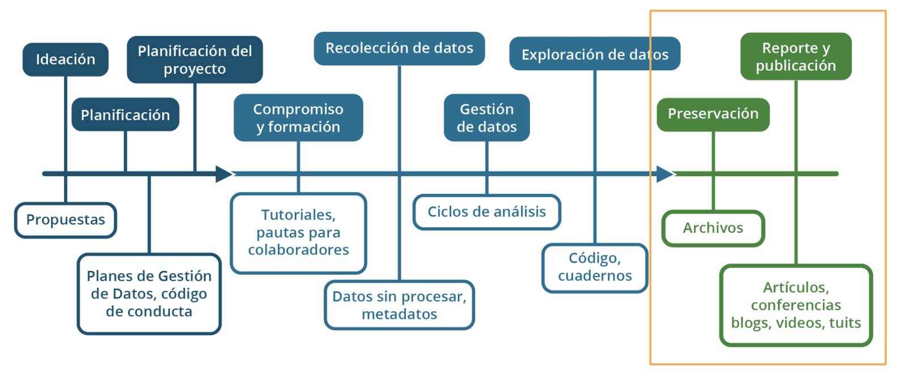
Fuente: NASA Open Science.
En los encuentros anteriores ya vimos varios de los resultados que pueden generarse durante el ciclo de investigación y publicarse de forma abierta. Entre ellos se encuentran los datos generados o recolectados y el código utilizado para analizarlos o automatizar procesos.
En este encuentro nos centraremos principalmente en los reportes o productos finales. Los más conocidos son los artículos académicos y las presentaciones en congresos o conferencias, pero no son los únicos.
Resultados Abiertos
- Artículos científicos revisados por pares
- Comunicaciones en congresos y reuniones científicas
- Repositorios de proyectos
- Publicaciones en redes sociales, blogs y sitios web
- Preimpresiones o preprints
Todo lo que nos ayude a comunicar de forma abierta los hallazgos de nuestro trabajo, tanto a la comunidad científica como al público general, puede considerarse un resultado.
Esto incluye los formatos tradicionales, como los artículos académicos, pero también publicaciones en blogs, videos, pódcast, contenidos para redes sociales y discusiones en foros.
Aunque este proceso no se da de manera equitativa en todas las disciplinas ni en todas las regiones, la comunidad científica está incorporando nuevas vías para comunicar sus resultados. Estas formas de difusión pueden favorecer nuevas colaboraciones, permitir que recibamos devoluciones útiles con mayor rapidez y dar más visibilidad al trabajo.
Además, las formas alternativas de comunicación suelen tener más posibilidades de alcanzar al público general y, de esta manera, aumentar el impacto de la investigación.
Ejemplo de Resultados Abiertos en un artículo
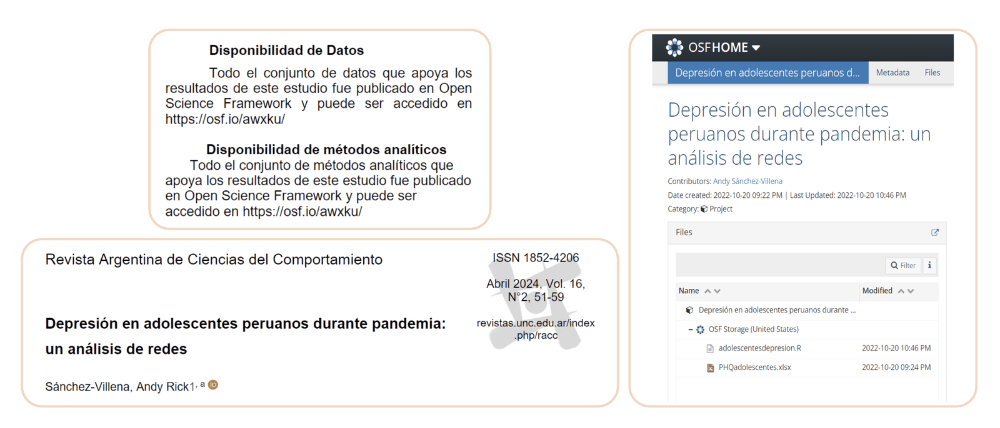
Fuente: Sánchez-Villena, Andy Rick. “Depresión en adolescentes peruanos durante pandemia: un análisis de redes”. Revista Argentina de Ciencias del Comportamiento, volumen 16, número 2, 2024.
Aquí vemos un ejemplo de una publicación de la Revista Argentina de Ciencias del Comportamiento que, además del manuscrito, incluye otros productos para aumentar la reproducibilidad del estudio.
La revista solicita que las personas autoras hagan declaraciones sobre la disponibilidad abierta de los materiales, los datos y el código de análisis. Cuando estos elementos están almacenados en repositorios, pueden enlazarse desde el artículo.
En este caso, la persona autora incluyó un enlace a la matriz de datos —en formato Excel, aunque podría haberse utilizado otro formato— y al código empleado para analizarlos con el lenguaje R.
Ambos recursos están alojados en Open Science Framework (OSF), una plataforma sobre la que hablaremos más adelante.
Ejercicio 1: Respondé la encuesta de Zoom
Duración: 3 minutos
¿Participaste alguna vez en la elaboración de alguno de estos resultados?
Seleccioná todas las opciones que correspondan:
- Artículo de acceso abierto
- Presentación o póster en un congreso o conferencia
- Entrada en un blog
- Cuaderno computacional en GitHub
- Publicación en redes sociales
- Preimpresión o preprint
Duración: 3 minutos.
El objetivo de esta pregunta es reconocer si las personas que integran la cohorte tuvieron experiencias vinculadas con la publicación abierta de resultados y, especialmente, con qué tipos de resultados trabajaron.
Cuando finalice la encuesta, puedes abrir un breve intercambio con preguntas como:
- ¿Habían pensado que una entrada de blog podía considerarse un Resultado Abierto?
- ¿Incluyeron enlaces a los datos o al código utilizado?
- ¿Alguna vez incorporaron un código QR en un póster para facilitar el acceso a materiales adicionales?
Puedes pedir que respondan mediante reacciones de Zoom.
Formas de colaborar, roles y reconocimiento
- Persona colaboradora: cualquier persona que haya realizado alguna actividad que haga posible la investigación y la publicación o difusión de sus resultados.
- Persona autora: quien realiza una contribución sustancial a la concepción o el diseño del trabajo, o a la adquisición, el análisis o la interpretación de los datos para el trabajo publicado.
Vamos a hablar de las formas de colaboración, los roles y el reconocimiento de las distintas contribuciones.
La colaboración es fundamental para la investigación científica. En la mayoría de los proyectos participan muchas personas, con diferentes roles y tipos de aportes. Reconocer esas contribuciones es una parte central de la Ciencia Abierta.
Podemos diferenciar entre el concepto de persona colaboradora, en un sentido amplio, y el de persona autora de los distintos productos del proyecto.
Cuando hablamos de colaboradoras y colaboradores, nos referimos a cualquier persona que haya realizado una actividad que hizo posible la investigación o la publicación y difusión de sus resultados. Esto puede incluir tareas que solemos relacionar directamente con la investigación, como recolectar o analizar datos, pero también otras funciones centrales:
- Establecer vínculos que faciliten el acceso a comunidades, instituciones o sitios de estudio.
- Brindar una capacitación.
- Asesorar sobre una herramienta o un método específico.
- Proporcionar apoyo logístico o administrativo.
En cambio, cuando hablamos de autoría, solemos referirnos a quienes realizaron una contribución sustancial al trabajo —por ejemplo, a la concepción o el diseño del estudio, o a la adquisición, el análisis o la interpretación de los datos—, participaron en la elaboración del producto que se comparte y se responsabilizan por su contenido.
En el marco de la Ciencia Abierta también aparece la idea de transparentar las contribuciones: reconocer de manera clara qué aportó cada persona al proyecto.
Para que esto funcione, es recomendable definir pautas y acuerdos sobre las formas de contribución desde el inicio. Los productos de investigación —como datos, protocolos, software o publicaciones— se generan durante todo el proceso. Establecer estos acuerdos ayuda a evitar confusiones o conflictos posteriores.
También es importante asegurarse de que todas las personas involucradas conozcan y acepten estas pautas antes de comenzar, para que las expectativas sean claras y el reconocimiento resulte justo y transparente.
Taxonomía CRediT
La taxonomía CRediT permite describir las contribuciones realizadas mediante 14 roles:
| Conceptualización | Metodología | Validación |
| Curación de datos | Administración del proyecto | Visualización |
| Análisis formal | Recursos | Redacción del borrador original |
| Obtención de financiamiento | Software | Redacción, revisión y edición |
| Investigación | Supervisión |
Más información: Contributor Roles Taxonomy (CRediT)
Uno de los problemas históricos de la ciencia es que el sistema tradicional de autoría se basa principalmente en el orden de los nombres, cuyo significado puede variar entre disciplinas.
Por ejemplo, en muchas disciplinas biomédicas y sociales, la primera persona de la lista suele ser quien realizó gran parte del trabajo experimental y redactó el manuscrito. La última suele ser quien dirigió el grupo, aportó la idea, obtuvo el financiamiento o supervisó el proyecto.
Las personas ubicadas en el medio quedan en una zona más difícil de interpretar. Este sistema no permite distinguir con claridad entre quien diseñó el estudio, consiguió el financiamiento, limpió los datos o desarrolló el código. Tampoco permite identificar fácilmente contribuciones equivalentes.
Actualmente, cada vez más revistas solicitan una descripción estandarizada de los roles de autoría. Una herramienta para hacerlo es la taxonomía CRediT —Contributor Roles Taxonomy—, que define 14 roles, desde la conceptualización del estudio hasta la revisión y edición del manuscrito.
Esta taxonomía permite visibilizar trabajos que muchas veces permanecen ocultos: la curación de datos, el desarrollo de software, la gestión del proyecto o la obtención de recursos. Esto es especialmente relevante para quienes realizan tareas técnicas o de apoyo y rara vez aparecen como autores o autoras principales.
Para compartir en el chat: https://credit.niso.org/
¿Cómo saber si un Resultado Abierto es confiable?
Podemos evaluar la calidad y confiabilidad:
- Del sitio o la plataforma donde está alojado.
- Del contenido del recurso.
Hasta ahora hablamos principalmente de cómo producir y gestionar Resultados Abiertos. También debemos pensar qué sucede cuando utilizamos productos abiertos creados por otras personas.
Que un recurso sea abierto no significa necesariamente que sea confiable o de buena calidad. Si usamos datos, materiales o resultados provenientes de fuentes poco confiables como parte central de una investigación, nuestro propio trabajo también puede perder calidad.
Para evaluar un recurso abierto podemos observar dos dimensiones.
El sitio o la plataforma donde está alojado:
- ¿Pertenece a una universidad, un organismo gubernamental, una organización científica u otra institución reconocida?
- ¿Hay información clara sobre las personas autoras o responsables?
- ¿Es posible contactarlas?
- ¿Existen posibles sesgos o intereses que puedan influir en el contenido?
El contenido del recurso:
- ¿Está asociado con una publicación revisada por pares o con algún otro proceso de revisión?
- ¿Los datos primarios están disponibles?
- ¿El código y los métodos utilizados también están disponibles?
- ¿Las variables, los campos y los parámetros están definidos claramente?
- ¿Se explicitan los criterios utilizados para incluir o excluir información?
- ¿Las personas autoras tienen experiencia en esa disciplina?
También podemos preguntarnos si el trabajo es reproducible:
- ¿Es posible interactuar con los datos o replicar los resultados?
- ¿Otras personas pudieron reproducirlos?
Finalmente, debemos considerar el contexto:
- ¿Las personas autoras compartieron anteriormente otros resultados confiables?
- ¿Es un trabajo aislado o forma parte de una conversación científica más amplia?
- ¿La información continúa siendo relevante y actual?
Estas preguntas nos ayudan a utilizar recursos abiertos de manera crítica y responsable y a fortalecer la calidad de nuestra propia investigación.
Publicaciones de acceso abierto
Una publicación de acceso abierto puede ser leída por cualquier persona, de manera gratuita y sin restricciones de acceso.
Ahora vamos a concentrarnos en las publicaciones científicas de acceso abierto.
Una publicación de acceso abierto es aquella que cualquier persona puede leer de forma gratuita y sin restricciones, sin necesidad de estar suscripta a una revista o de pertenecer a una institución que pague por el acceso.
Sin embargo, no todas las publicaciones llegan al acceso abierto por el mismo camino. Vamos a presentar tres vías principales.
Publicaciones de acceso abierto
Vía dorada
Las personas autoras pagan el costo de publicación.
La primera es la vía dorada.
En este modelo, la persona autora paga directamente a la revista un cargo por procesamiento del artículo, conocido como APC por sus siglas en inglés. A cambio, la revista publica la versión final de forma permanente y permite que cualquier persona pueda acceder a ella gratuitamente.
Generalmente, las personas autoras conservan sus derechos mediante una licencia Creative Commons, como CC BY.
La crítica más frecuente a esta modalidad es su costo. Los cargos pueden alcanzar miles de dólares, lo que representa una barrera para quienes investigan en muchas regiones del mundo.
Algunas editoriales ofrecen descuentos o exenciones para determinados países y, en algunos casos, el organismo financiador permite cubrir el costo con los fondos del proyecto. De todos modos, sigue siendo una barrera adicional para publicar.
Publicaciones de acceso abierto
Vía verde
- La versión oficial permanece bajo suscripción.
- Una copia del manuscrito se deposita gratuitamente en un repositorio abierto.
Para buscar repositorios: Registry of Open Access Repositories (ROAR)
La segunda es la vía verde.
En este caso, la persona autora publica su trabajo en una revista tradicional por suscripción, pero también deposita una versión del manuscrito en un repositorio institucional o temático abierto.
Generalmente, se comparte la versión aceptada del manuscrito, anterior a la maquetación final realizada por la editorial. De esta manera, existe una versión pública del trabajo, aunque la versión oficial de la revista no sea gratuita.
A veces se utiliza ResearchGate para compartir artículos. Sin embargo, esta plataforma funciona principalmente como una red social académica y no está diseñada como un repositorio institucional ni como una infraestructura de preservación permanente.
Para buscar artículos disponibles mediante la vía verde o encontrar repositorios donde depositar trabajos propios, podemos consultar el Registry of Open Access Repositories (ROAR).
También es importante revisar el acuerdo de publicación firmado con la revista. En muchas revistas por suscripción, las personas autoras ceden a la editorial algunos derechos, como el derecho de distribución de la versión publicada.
Por eso, normalmente no podemos compartir la versión final con la maquetación, los logotipos y el formato editorial. En cambio, puede permitirse el depósito de una versión previa a esa maquetación.
En algunos casos, la revista también establece un período de embargo durante el cual el manuscrito no puede hacerse público.
Para compartir en el chat: https://roar.eprints.org/
Publicaciones de acceso abierto
Vía diamante
Es gratuita tanto para quien publica como para quien lee.
La tercera es la vía diamante, una modalidad especialmente alineada con los principios de la Ciencia Abierta.
En este caso, ni las personas lectoras pagan para acceder al artículo ni las personas autoras pagan para publicarlo. Estas revistas suelen sostenerse mediante infraestructura institucional, trabajo comunitario o financiamiento directo de instituciones y fundaciones. En la mayoría de los casos, las personas autoras también conservan sus derechos.
Muchas revistas de acceso abierto diamante pueden encontrarse en el Directory of Open Access Journals (DOAJ). En el caso de las revistas latinoamericanas, españolas y portuguesas, también podemos encontrarlas en SciELO.
SciELO es una red colaborativa de colecciones nacionales de revistas científicas de acceso abierto. Países como Argentina, México, Chile, Colombia, Ecuador y Uruguay gestionan sus propias colecciones. Este modelo aumenta la visibilidad de la producción científica regional sin depender exclusivamente de los circuitos editoriales internacionales.
Además de organizar contenidos, SciELO contribuye a construir comunidad alrededor de las revistas y promueve estándares de calidad editorial. De esta manera, fortalece la profesionalización y la sostenibilidad del acceso abierto diamante y constituye una infraestructura central para la Ciencia Abierta en nuestra región.
Para compartir en el chat:
Ejercicio 2: Respondé la encuesta de Zoom
Duración: 3 minutos
Las publicaciones que no requieren pagar para leer ni para publicar un artículo siguen un modelo de:
Elegí la mejor respuesta:
- Vía dorada
- Vía verde
- Vía diamante
Respuesta correcta: vía diamante.
Revistas predatorias
- Realizan publicaciones con fines de lucro y con poco o ningún control de calidad.
- Se aprovechan de los modelos de acceso abierto para atraer a las personas autoras y cobrarles por publicar.
Otro aspecto importante que debemos considerar al publicar es el problema de las revistas o editoriales predatorias.
Estas editoriales simulan publicar revistas científicas legítimas, pero su objetivo principal es cobrarles a las personas autoras sin ofrecer los estándares habituales de calidad académica.
En muchos casos no realizan una revisión por pares real o el proceso es meramente superficial. Cobran por brindar la apariencia de una publicación científica —un sitio web, un comité editorial y un supuesto proceso de evaluación—, pero sin garantizar la calidad, la revisión crítica ni la integridad científica que se espera de una revista académica.
Muchas de estas editoriales se aprovechan del modelo de acceso abierto, en el que puede ser habitual que las personas autoras paguen cargos de publicación. La diferencia es que, en las revistas legítimas, esos cargos financian procesos editoriales reales, como la revisión por pares, la edición y la preservación del artículo.
Entonces, ¿cómo podemos identificarlas?
Revistas predatorias: señales de alerta
- Tienen un nombre parecido al de una revista prestigiosa.
- Envían correos electrónicos no solicitados pidiendo manuscritos.
- Utilizan invitaciones inexactas o genéricas.
- Abarcan temas excesivamente amplios o poco específicos.
- Prometen tiempos de publicación muy rápidos.
- Destacan supuestas indexaciones o factores de impacto.
- Publican una gran cantidad de números especiales.
- Presentan tasas de aceptación muy altas.
Algunas señales de alerta frecuentes son:
- Nombres muy similares a los de revistas prestigiosas, que pueden generar confusión.
- Correos electrónicos no solicitados que invitan a enviar artículos y, en ocasiones, mencionan vagamente trabajos anteriores para parecer más creíbles.
- Mensajes genéricos o poco específicos, que no se relacionan claramente con nuestro campo de investigación.
- Ámbitos temáticos demasiado amplios; por ejemplo, revistas que dicen abarcar desde medicina e ingeniería hasta ciencias sociales.
- Promesas de publicación extremadamente rápida, que pueden indicar que el artículo no atravesará una revisión por pares real.
- Énfasis excesivo en supuestos índices de impacto o bases de datos que pueden ser falsos, poco reconocidos o no corresponder con la indexación real de la revista.
- Una cantidad inusual de números especiales publicados en poco tiempo.
- Tasas de aceptación extremadamente altas.
Ninguna de estas señales, por sí sola, confirma que una revista sea predatoria. Sin embargo, cuando aparecen varias juntas, conviene investigar con mayor profundidad antes de enviar un manuscrito.
Preprints
Los preprints o preimpresiones son versiones tempranas de artículos que se comparten públicamente antes de su publicación en una revista científica.
- Promueven la transparencia, la difusión rápida del conocimiento y la colaboración.
- Permiten acelerar el ritmo de los descubrimientos científicos.
- Facilitan que las investigaciones sean accesibles para audiencias amplias.
Algunos servidores de preprints son:
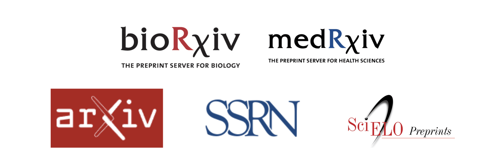
¿Conocían los preprints?
Un preprint es una versión del manuscrito que las personas autoras hacen pública antes de que atraviese la revisión por pares. De esta manera, queda disponible de forma gratuita y prácticamente inmediata.
Los preprints se depositan en servidores o repositorios específicos. Uno de los más antiguos y conocidos es arXiv, utilizado principalmente en física, matemática y ciencias de la computación. En biomedicina se destacan bioRxiv y medRxiv, mientras que SSRN —Social Science Research Network— se utiliza especialmente en ciencias sociales.
También existen muchos otros servidores especializados según la disciplina.
Con una perspectiva fuertemente latinoamericana, contamos con SciELO Preprints. Fue lanzado en 2020 como parte del ecosistema SciELO para fortalecer la Ciencia Abierta en la región. A diferencia de algunos repositorios disciplinares, acepta trabajos de todas las áreas del conocimiento.
Para quienes ya publicaron en revistas, una forma sencilla de entenderlo es pensar en el manuscrito enviado a evaluación: el preprint es, básicamente, esa versión compartida abiertamente sin esperar a que termine el proceso editorial.
Para compartir en el chat:
https://preprints.scielo.org/index.php/scielo
Preprints: ventajas y desventajas
| Ventajas | Desventajas |
|---|---|
| Difusión más rápida de los resultados | El trabajo puede contener errores que todavía no fueron detectados |
| Disponibilidad de servidores gratuitos | En algunas disciplinas se perciben como trabajos de menor calidad |
| Posibilidad de recibir devoluciones de la comunidad | Algunas revistas no aceptan artículos compartidos previamente como preprints |
La principal ventaja de compartir un preprint es la velocidad y el acceso: los resultados pueden llegar a la comunidad científica y al público general en cuestión de días, en lugar de demorar meses.
En el marco de la Ciencia Abierta, los preprints se consideran una herramienta importante porque democratizan el acceso al conocimiento y aceleran la conversación científica. Esto se hizo especialmente visible durante la pandemia de COVID-19, cuando una gran cantidad de hallazgos circuló primero por esta vía.
La contracara es que el trabajo todavía no cuenta con el aval formal de una revisión por pares. Por eso, requiere que quienes lo leen realicen su propia evaluación crítica.
Además, aunque la comunidad científica incorpora cada vez más esta práctica, todavía existen diferencias entre disciplinas. Algunas revistas no aceptan trabajos compartidos previamente como preprints y, en ciertos campos, todavía pueden percibirse como productos de menor calidad.
También están surgiendo modelos alternativos de evaluación. Por ejemplo, F1000Research publica los artículos después de un control inicial y realiza la revisión por pares de manera abierta luego de la publicación. Por su parte, PREreview facilita la revisión comunitaria y abierta de preprints.
Para compartir en el chat:
Antes de compartir un preprint
🚨 ¡Importante!
Si tenemos previsto publicar el artículo posteriormente en una revista, debemos comprobar:
- La política de derechos de autor de la revista.
- Qué versión del documento se permite depositar.
- A partir de qué momento puede estar disponible públicamente.
Los preprints son una herramienta valiosa para favorecer la circulación del conocimiento. Sin embargo, si tenemos la intención de publicar posteriormente el trabajo en una revista determinada, es muy importante revisar previamente:
- La política de derechos de autor de la revista.
- La versión del documento que se permite depositar.
- El momento a partir del cual el documento puede estar disponible públicamente.
Estas condiciones pueden variar entre revistas y editoriales. Por eso, debemos revisarlas antes de depositar el manuscrito.
Para ir pensando
Después de la pausa realizaremos un ejercicio en salas de grupos.
Piensen en un estudio real o hipotético de su área y conversen sobre las siguientes preguntas:
- ¿Qué tipo de Resultado Abierto sería más viable para ese proyecto: un preprint, una publicación de acceso abierto, datos o código en un repositorio u otro producto?
- ¿Qué obstáculo concreto encuentran para aplicar alguna de estas prácticas?
Anticipa que, después de la pausa, las personas participantes trabajarán en grupos sobre un estudio real o hipotético de su área.
Presenta las dos preguntas para que puedan comenzar a pensar en un posible ejemplo:
- ¿Qué tipo de Resultado Abierto sería más viable para ese proyecto?
- ¿Qué obstáculo concreto encuentran para aplicar alguna de estas prácticas?
Pausa
Volvemos en 10 minutos.
No te desconectes, pero sí alejate de las pantallas.
- Pedro Guerra — Daniela
Aporte de Silveria Alcantara. - Gustavo Cerati — Sulky
- Los Besos — Helados verdes
Registro de proyectos
Permite organizar y referenciar los distintos resultados de un proyecto.
- Crear y mantener actualizado el registro del proyecto.
- Preservar sus resultados.
- Incluir, para cada elemento, una descripción, la forma de citarlo y su identificador persistente.
- Organizar cada elemento como un componente del proyecto.
Una herramienta muy útil para poner en práctica la Ciencia Abierta son las plataformas que permiten registrar y gestionar proyectos de investigación.
Estas plataformas sirven para reunir y organizar los distintos resultados de un proyecto —como datos, código, materiales y preprints— y reconocer a las personas que colaboran en él.
Registrar un proyecto también permite preservar sus resultados y asignarles identificadores persistentes. De esta manera, cada elemento puede citarse y reutilizarse en diferentes contextos.
El registro puede ayudarnos, por ejemplo, a presentar un informe de rendición de fondos, solicitar financiamiento o mostrar en qué estamos trabajando. También puede abrir posibilidades para que otras personas o equipos conozcan el proyecto y se sumen a colaborar.
Un ejemplo de estas plataformas es Open Science Framework, también conocida como OSF. Esta plataforma permite crear y organizar un proyecto, vincular sus diferentes productos, asignar identificadores persistentes y controlar qué elementos serán públicos y cuáles permanecerán privados.
OSF es una plataforma gratuita mantenida por el Center for Open Science.
Prerregistro
Consiste en documentar y hacer público el diseño de un estudio antes de comenzar la recolección de datos:
- Hipótesis o preguntas de investigación
- Variables
- Diseño
- Muestra
- Procedimiento
- Análisis de datos
OSF también permite crear un prerregistro.
El prerregistro consiste en documentar qué vamos a estudiar, cómo realizaremos el estudio y qué resultados esperamos encontrar antes de comenzar a recolectar los datos.
Existen diferentes formatos de prerregistro, pero generalmente incluyen:
- Las hipótesis o preguntas de investigación.
- Las variables que se medirán y la manera en que se realizará esa medición.
- El diseño del estudio; por ejemplo, si será experimental u observacional, si tendrá diferentes grupos o condiciones y cómo se asignarán las personas participantes.
- La composición de la muestra: su tamaño previsto, los criterios de inclusión y exclusión y el procedimiento de reclutamiento.
- La descripción paso a paso del procedimiento y de la recolección de datos.
- Los análisis que se realizarán, incluyendo cómo se tratarán los datos faltantes o los valores extremos.
El objetivo del prerregistro es diferenciar con claridad aquello que se planificó antes de observar los datos de lo que se descubrió posteriormente.
Puedes abrir un breve intercambio con la siguiente pregunta:
¿Para qué imaginan que puede servir el prerregistro en el contexto de las buenas prácticas científicas?
Entre otras cosas, el prerregistro busca reducir la posibilidad de que quienes investigan modifiquen, consciente o inconscientemente, sus análisis después de observar los datos para obtener resultados que parezcan más significativos o interesantes.
También obliga a planificar con anticipación por qué y cómo se abordará la pregunta de investigación. Este proceso puede ayudar a identificar decisiones o problemas que podrían influir en el diseño del estudio.
Gestores de referencias
Los gestores de referencias bibliográficas permiten:
- Registrar y organizar referencias.
- Generar automáticamente citas y bibliografías en diferentes estilos y formatos.
- Importar y almacenar metadatos de artículos.
- Registrar versiones e identificadores persistentes de datos y software.
Algunos ejemplos son:
- EndNote
- Zotero
- Mendeley
Otras herramientas que pueden resultar útiles dentro de un flujo de trabajo abierto son los gestores de referencias bibliográficas.
Quizás conozcan gestores como EndNote, Zotero o Mendeley. Si utilizan alguna otra herramienta, invita a que la compartan con el grupo.
Estos programas facilitan el registro y la organización de las referencias utilizadas durante una investigación. Además:
- Generan automáticamente citas y bibliografías en distintos estilos.
- Exportan referencias en formatos como BibTeX o RIS.
- Se integran con procesadores de texto como Word y Google Docs.
- Importan y almacenan los metadatos de los artículos.
- Permiten registrar versiones e identificadores persistentes de conjuntos de datos y software.
Actualmente, varios gestores también permiten realizar anotaciones sobre los documentos y descubrir bibliografía relacionada con el tema de investigación.
Nos centraremos en Zotero porque es una herramienta gratuita, libre y de código abierto, publicada bajo la licencia GPLv3.
Zotero
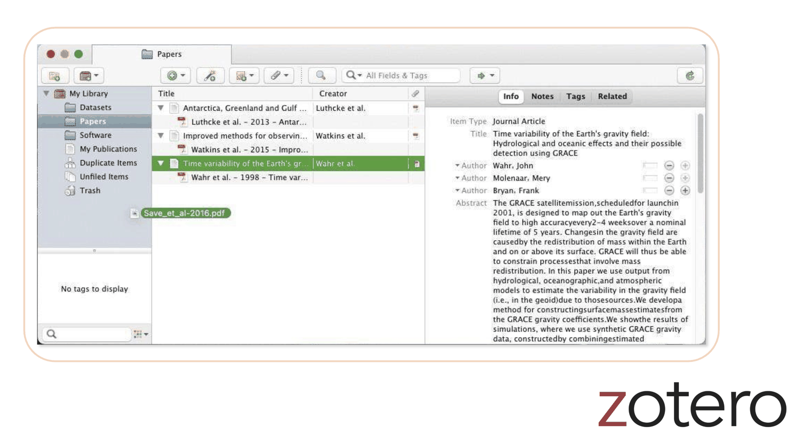
Zotero es una aplicación de código abierto que podemos descargar y utilizar gratuitamente.
Su interfaz permite organizar las referencias en bibliotecas y colecciones. También podemos importar los metadatos de un artículo en formato PDF arrastrando el archivo hacia la aplicación.
Una vez incorporado el documento, Zotero puede recuperar y almacenar información como:
- El título.
- Las personas autoras.
- El año de publicación.
- La revista.
- El DOI.
- Otros datos necesarios para construir la referencia bibliográfica.
Zotero también permite
- Utilizar extensiones para Word y aplicaciones web.
- Crear bibliotecas compartidas y colaborativas.
- Integrarse con OSF.
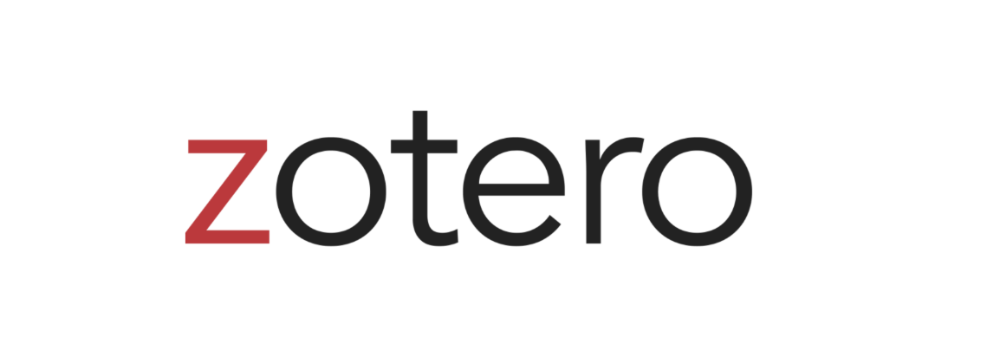
Zotero también ofrece extensiones para Word, Google Docs y navegadores web.
Estas extensiones facilitan el registro de referencias, permiten importar metadatos directamente desde revistas, repositorios y otros sitios y ayudan a localizar versiones de acceso abierto cuando están disponibles.
Además, Zotero permite crear bibliotecas compartidas y colaborativas, lo que facilita la gestión de referencias en equipos de investigación.
Otra característica interesante es su integración con OSF. Podemos vincular una biblioteca de Zotero con un proyecto en OSF y compartirla públicamente como parte de los materiales abiertos de la investigación.
Intercambio en salas de grupos
¿Cómo vamos a trabajar?
Cada grupo elige una persona para moderar la conversación, administrar el tiempo y distribuir la participación.
Cada grupo elige una persona representante para sintetizar el intercambio y compartirlo brevemente en la sala principal.
Al igual que en los encuentros anteriores, realizaremos una actividad en salas de grupos.
Recuerda que cada grupo debe elegir:
- Una persona que modere la conversación, ayude a organizar el tiempo y procure que todas las personas tengan la oportunidad de participar.
- Una persona que represente al grupo y comparta brevemente en la sala principal los principales temas que surgieron durante el intercambio.
Ejercicio 3: Sala de grupos
Duración: 10 minutos
Piensen en un estudio real o hipotético de su área y conversen sobre las siguientes preguntas:
- ¿Qué tipo de Resultado Abierto sería más viable para ese proyecto: un preprint, una publicación de acceso abierto, datos o código en un repositorio u otro producto?
- ¿Qué obstáculo concreto encuentran para aplicar alguna de estas prácticas?
Duración: 10 minutos.
Distribuye a las personas participantes en salas de grupos.
Antes de abrir las salas, recuerda que cada grupo debe designar a una persona moderadora y a una persona representante.
Cuando regresen a la sala principal, invita a cada representante a compartir brevemente:
- El tipo de Resultado Abierto que consideraron más viable.
- El principal obstáculo que identificaron.
¡Planificar para abrir!
Un Plan de Gestión de Datos y Ciencia Abierta puede incluir:
- Plan de gestión de datos.
- Plan de gestión de software.
- Plan de gestión de publicaciones.
Estos planes:
- Nos ayudan a pensar la apertura desde el inicio de la investigación.
- Son documentos vivos que pueden adaptarse ante situaciones emergentes.
Volvamos a un tema que atraviesa todos los encuentros: la planificación.
Para abrir una investigación es necesario pensar la gestión de la apertura desde el comienzo. Podemos guiarnos por un principio importante:
Tan abierto como sea posible, tan cerrado como sea necesario.
Un Plan de Gestión de Datos y Ciencia Abierta describe cómo se administrará y compartirá la información científica producida durante una investigación.
Puede incluir secciones específicas sobre:
- La gestión de los datos.
- La gestión del software.
- La publicación y comunicación de los resultados.
Si el proyecto genera otros productos —como muestras físicas, hardware, materiales educativos u otro tipo de resultados—, también podemos incorporarlos al plan.
Estos documentos ayudan a anticipar decisiones concretas:
- Qué resultados se compartirán.
- Cómo y dónde se almacenarán.
- Qué documentación necesitarán.
- Qué licencias se utilizarán.
- Quiénes podrán acceder a ellos.
- En qué momento se harán públicos.
Además, son documentos vivos: pueden revisarse y actualizarse cuando aparecen nuevas necesidades, limitaciones o situaciones imprevistas.
El plan también puede compartirse públicamente desde el inicio mediante una práctica que ya mencionamos: el prerregistro.
Empezá por acá
- Definí cómo se organizará la colaboración y cómo se asignará la autoría.
- Publicá los datos y el software vinculados con la investigación en un repositorio, con licencia, metadatos e identificadores persistentes.
- Creá un repositorio centralizado para reunir los resultados del proyecto.
- Registrá con precisión la recolección y el análisis de los datos para facilitar la reproducibilidad.
¿Con qué acciones concretas podemos comenzar a generar Resultados Abiertos?
Podemos empezar con cuatro elementos:
Definir cómo se organizará la colaboración y la autoría.
Es recomendable acordar desde el inicio cómo se reconocerán las distintas contribuciones y cómo se tomarán las decisiones sobre autoría.Publicar los datos o el software asociados con la investigación.
Podemos almacenarlos en un repositorio como Zenodo, acompañados por una licencia, documentación y metadatos. El DOI correspondiente debe incluirse en los informes y publicaciones relacionados.Crear un repositorio centralizado.
Podemos utilizar, por ejemplo, OSF o un repositorio de GitHub para reunir los diferentes productos del proyecto e incluir una lista de las personas colaboradoras.Documentar el proceso de recolección y análisis.
Es importante registrar los métodos, las herramientas y las dependencias utilizadas para que otras personas puedan comprender el proceso y, cuando sea posible, reproducir los resultados.
No es necesario implementar todas estas prácticas al mismo tiempo. Podemos comenzar por aquellas que resulten más viables para nuestro proyecto.
Documentar los resultados
Datos
- ¿Cómo pueden utilizarse?
- ¿Cómo se recolectaron?
- ¿Tienen errores o limitaciones conocidas?
- ¿Están asociados con una publicación?
Código
- ¿Cómo se instala y se utiliza?
- ¿Qué aporta cada nueva versión?
- ¿Qué hace cada parte del código?
- ¿Está asociado con una publicación?
Detengámonos en la documentación, una herramienta central para que los resultados sean comprensibles, reutilizables y reproducibles.
Documentar significa describir cómo se produjo y cómo debe gestionarse o utilizarse un resultado. Esto beneficia tanto a quienes trabajan actualmente en el proyecto como a quienes quieran utilizar esos materiales en el futuro.
En términos generales, una buena documentación debería indicar:
- Cómo se obtuvo o generó el resultado.
- Cómo puede utilizarse.
- Si está asociado con una publicación.
- Si tiene problemas o limitaciones conocidas.
- Cómo fue utilizado previamente por otras personas.
La información necesaria puede variar según el tipo de producto.
Para un conjunto de datos, también debemos explicar cómo se recolectaron y procesaron los datos, qué representan las variables y si existen errores, sesgos o limitaciones conocidas.
Para el código, es importante describir:
- Cómo instalarlo y ejecutarlo.
- Qué hacen sus diferentes componentes.
- Qué dependencias necesita.
- Qué cambios incorpora cada versión.
- Cómo se relaciona con los datos y las publicaciones del proyecto.
También podemos incluir ejemplos breves de uso para facilitar que otras personas comiencen a trabajar con el recurso.
Para una mayor reproducibilidad y colaboración
- Agregar un código de conducta (
CODE_OF_CONDUCT). - Definir pautas de autoría y contribución
(
CONTRIBUTING). - Compartir la propuesta sin información confidencial.
- Construir una hoja de ruta preliminar con los objetivos.
- Crear una lista de los recursos requeridos por el proyecto.
- Compartir materiales de capacitación para quienes colaboran y contribuyen.
Si buscamos que nuestros resultados sean más fáciles de reproducir y que el proyecto invite a la colaboración, podemos incorporar algunos recursos adicionales.
Un archivo de código de conducta —generalmente llamado
CODE_OF_CONDUCT— establece pautas para la interacción
dentro de la comunidad. Esto es especialmente importante en proyectos
abiertos a los que pueden incorporarse personas que no formaban parte
del equipo original.
También podemos definir pautas para colaborar mediante un archivo
CONTRIBUTING. Allí podemos explicar:
- Qué tipo de contribuciones necesita el proyecto.
- Cómo pueden realizarse.
- Cómo serán revisadas.
- De qué manera se reconocerán las contribuciones y la autoría.
Es importante publicar los nombres de las personas colaboradoras solamente con su consentimiento.
También podemos compartir la propuesta del proyecto, siempre que eliminemos previamente cualquier información confidencial o sensible.
Una hoja de ruta ayuda a comunicar los objetivos y las próximas etapas. Por su parte, una lista de los recursos necesarios permite identificar con mayor claridad en qué tareas pueden participar otras personas.
Finalmente, los materiales de capacitación facilitan la incorporación de nuevas personas al proyecto y permiten que todo el equipo comparta criterios y formas de trabajo.
Para una mayor reproducibilidad y colaboración
- Tableros o informes para comunicar los avances del proyecto.
- Manuales de uso y ejecutables que permitan probar el código.
- Documentación sobre el procesamiento de los datos.
- Tutoriales o videos breves que muestren el flujo de trabajo.
- Entradas de blog sobre la experiencia, sus desafíos y cómo fueron resueltos.
También podemos utilizar tableros interactivos o informes de avance para mantener informado al equipo ampliado.
Si trabajamos con plataformas de control de versiones como GitHub, podemos solicitar devoluciones sobre los nuevos desarrollos antes de incorporarlos, favoreciendo la revisión colectiva.
Cuando el proyecto incluye software, es conveniente proporcionar manuales de uso y mecanismos que permitan probar el código de manera sencilla, sin necesidad de configurar todo el entorno desde cero.
Los tutoriales y videos breves son formas accesibles de mostrar el flujo de trabajo. Pueden resultar especialmente útiles cuando las personas colaboradoras se incorporan en diferentes etapas del proyecto.
Una entrada de blog sobre la experiencia, los desafíos encontrados y la manera en que fueron resueltos también constituye un Resultado Abierto valioso. Permite compartir conocimiento sobre el proceso de investigación, no solamente sobre sus hallazgos.
Estos productos también pueden preservarse en un repositorio y recibir un identificador persistente, como un DOI.
Por último, conviene vincular los artículos, datos, videos, entradas de blog y demás productos desde el repositorio central del proyecto. De esta manera, pueden comprenderse como partes de un mismo proceso y no quedan como recursos aislados.
Límites de la apertura
Antes de abrir, debemos preguntarnos:
¿A quién podría perjudicar la publicación de esta información?
La apertura responsable requiere prestar especial atención a:
- Datos personales y sensibles.
- Datos ecológicamente sensibles.
- Cuestiones de seguridad.
Volvamos al principio que mencionamos al comenzar este bloque:
Tan abierto como sea posible, tan cerrado como sea necesario.
Abrir responsablemente implica no cruzar límites éticos o legales. Una pregunta que puede orientarnos es:
¿A quién podría perjudicar la publicación de esta información y qué alternativas podemos adoptar?
Debemos prestar especial atención a tres tipos de situaciones.
Datos personales y sensibles
Cuando trabajamos con información sobre personas, debemos respetar las leyes y los lineamientos aplicables en cada país.
Antes de compartir los datos, debemos evaluar si es posible ocultar la información personal y reducir el riesgo de reidentificación. Eliminar nombres o documentos de identidad no siempre es suficiente: una combinación de variables también puede permitir identificar a una persona.
Los datos sensibles requieren todavía más cuidado. Incluyen, por ejemplo, información sobre salud, origen étnico, creencias religiosas, opiniones políticas u otros datos cuyo conocimiento podría generar discriminación o poner en riesgo a una persona.
Datos ecológicamente sensibles
La ubicación de sitios de reproducción o de poblaciones de especies amenazadas puede facilitar actividades que las pongan en peligro. En estos casos puede ser necesario generalizar, ocultar o restringir la información geográfica.
Cuestiones de seguridad
También puede ser necesario limitar el acceso a información que ponga en riesgo la seguridad de personas, comunidades o instituciones. Algunas de estas decisiones dependen de marcos políticos y normativos y no son exclusivamente técnicas.
Desde una perspectiva regional, también debemos evaluar si la apertura indiscriminada puede favorecer prácticas extractivistas: por ejemplo, cuando datos producidos en una región son procesados y valorizados fuera de ella, sin participación ni reconocimiento de las comunidades o los equipos que los generaron.
En estos casos podemos considerar alternativas como:
- Establecer períodos de embargo.
- Compartir versiones agregadas de los datos.
- Definir condiciones de acceso y reutilización.
- Solicitar acuerdos de colaboración.
- Restringir temporalmente determinados componentes.
La apertura no consiste en publicar todo sin condiciones, sino en tomar decisiones responsables y justificadas.
¿Hasta aquí todo bien?
¿Cómo se sienten ahora?
¿Cómo venimos?
Escriban en el chat el número del gatito que mejor representa cómo se sienten en este momento.
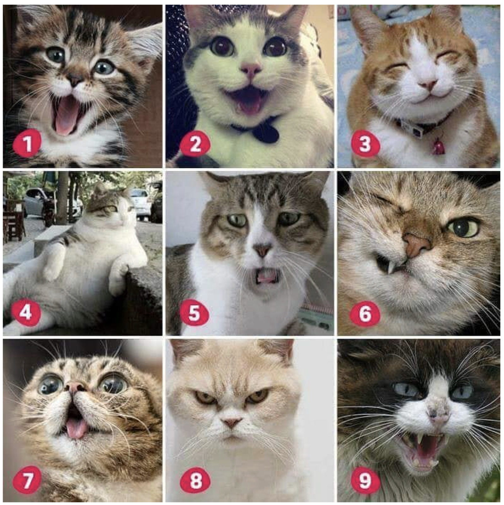
Realiza una breve verificación del estado del grupo.
Invita a las personas participantes a escribir en el chat el número del gatito que mejor represente cómo se sienten en este momento.
Puedes leer algunas respuestas y preguntar si necesitan una aclaración antes de continuar.
¿Y si no puedo hacer todo?
¡Igual vale la pena!
No poder implementar todas las prácticas no significa hacer mal la Ciencia Abierta.
Existen limitaciones de distinto tipo:
- Recursos: tiempo, dinero o personal.
- Institucionales: falta de apoyo o reconocimiento.
No todos los proyectos recorren el mismo camino hacia la Ciencia Abierta ni alcanzan las mismas instancias.
Una pregunta frecuente y muy válida es:
¿Qué sucede si no puedo hacer todo?
No poder implementar todas las prácticas no significa hacer mal la Ciencia Abierta. No existe una única manera de abrir una investigación.
La apertura requiere tiempo, recursos económicos y trabajo de personas que no siempre están disponibles. Además, algunas instituciones todavía no ofrecen apoyo, infraestructura o reconocimiento para estas prácticas.
A lo largo de los encuentros presentamos estrategias, herramientas y diferentes niveles de apertura. No todos los ejemplos son perfectos ni pueden aplicarse de la misma manera en cualquier contexto.
Cada proyecto necesita construir su propio plan para definir:
- Qué puede abrirse.
- Cómo y cuándo hacerlo.
- Qué debe permanecer cerrado o tener acceso restringido.
- Qué limitaciones deben considerarse.
- Qué prácticas pueden implementarse de manera gradual.
Aunque no podamos hacerlo todo, sigue valiendo la pena comenzar con acciones posibles y ampliar las prácticas a medida que adquirimos experiencia y recursos.
Muchos de los cambios culturales e institucionales vinculados con la Ciencia Abierta son impulsados por personas interesadas en transformar sus propias prácticas y las de sus comunidades, como quienes participan en este curso.
EPH con R
- Encuesta Permanente de Hogares (EPH) del Instituto Nacional de Estadística y Censos (INDEC).
-
Paquete
ephde R:- Permite procesar los datos de la EPH.
- Facilita la replicación y el análisis independiente.
- Permite estudiar categorías e indicadores no proporcionados en los informes oficiales.
Referencia: https://doi.org/10.5281/zenodo.3462677
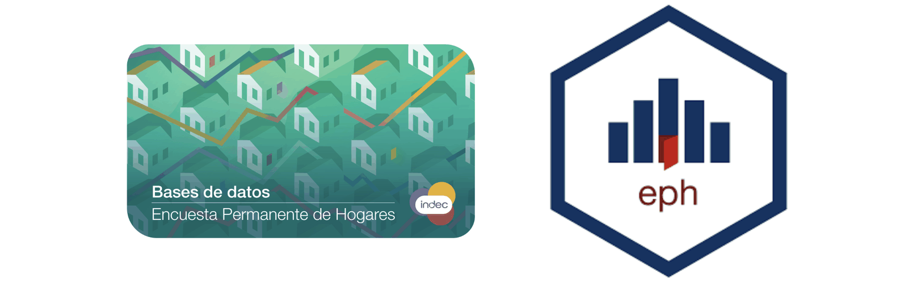
Veamos un ejemplo que reúne datos, código y resultados publicados. Este caso también permite observar la reproducibilidad, el trabajo comunitario, el uso ciudadano de la evidencia pública y su aplicación en políticas públicas.
En Argentina, el Instituto Nacional de Estadística y Censos —INDEC— es el organismo público de carácter técnico encargado de coordinar y producir estadísticas demográficas, económicas y sociales.
Entre otros productos, el INDEC realiza la Encuesta Permanente de Hogares —EPH—, un programa nacional de muestreo continuo que genera indicadores sociodemográficos y socioeconómicos sobre:
- Empleo, desocupación y precariedad laboral.
- Pobreza e indigencia.
- Ingresos.
- Educación y migraciones.
- Vivienda y condiciones de vida de los hogares.
A partir de esta encuesta se elaboran, entre otros resultados, las tasas oficiales de empleo, desocupación, subocupación y pobreza. Su difusión se complementa con tablas e información agregada.
Las bases de datos de la EPH son públicas y se encuentran disponibles bajo una licencia CC BY 4.0.
En 2020, un equipo de investigación externo al INDEC creó el paquete
eph para el lenguaje de programación R.
Este paquete es de código abierto y permite procesar los datos de la EPH. De esta manera, otras personas pueden:
- Replicar los análisis publicados por el organismo.
- Obtener conclusiones independientes.
- Analizar categorías e indicadores que no aparecen en los informes oficiales.
Para compartir en el chat:
https://doi.org/10.5281/zenodo.3462677
EPH con R
Otros resultados abiertos
- Artículos científicos y tesis académicas que utilizaron el paquete y los datos para analizar problemáticas sociales.
- Difusión para la comunidad mediante Ecofemidata: indicadores, estadísticas e informes reproducibles sobre desigualdad de género.
- Insumos para el asesoramiento en políticas públicas.
El paquete y los datos de la EPH dieron lugar a distintos tipos de Resultados Abiertos.
Por ejemplo, fueron utilizados en artículos científicos y tesis académicas dedicados a problemáticas sociales como:
- La evolución del vínculo entre la inserción laboral y el acceso al sistema de salud entre 2004 y 2020 (Pradier, 2021).
- La capacidad de reproducción de la fuerza de trabajo argentina entre 2016 y 2019 (Kennedy et al., 2023).
- Cuestiones metodológicas sobre la relación entre educación y salarios (Martínez Iriarte, 2022).
- La medición de la dimensionalidad del bienestar (Brau, 2021).
Para compartir en el chat:
Otro ejemplo es el trabajo de Ecofemidata, un equipo de la asociación civil Ecofeminita que produce indicadores, estadísticas e informes temáticos reproducibles sobre las desigualdades de género.
Entre otros recursos, Ecofemidata mantiene una aplicación que analiza el mercado de trabajo, los ingresos, el uso del tiempo y el trabajo doméstico.
Estos datos y análisis contribuyen a visibilizar las desigualdades de género. También se utilizan para elaborar materiales de difusión destinados a escuelas, medios y redes sociales, y como insumo para asesorar sobre políticas públicas en diferentes niveles de gobierno.
Para compartir en el chat:
Shokida, N. S., Domenech Burin, L., Pradier, C., Santellán, C.,
Espiñeira, L., Serpa, D., Fernández Erlauer, M., Lee, J., &
Kozlowski, D. (2024). Ecofeminita: Informes Ecofemidata.
Ecofeminita.
https://doi.org/10.5281/zenodo.13314398
Ejercicio 4: Respondé la encuesta de Zoom
Duración: 3 minutos
¿Cuáles de los siguientes son ejemplos de resultados de investigación abiertos?
Señalá todas las opciones que correspondan:
- Presentación de una conferencia.
- Publicación en un blog.
- Notas de reuniones internas del equipo.
- Cuaderno computacional en GitHub.
- Tutoriales y materiales para la capacitación de personas colaboradoras.
Las respuestas correctas son:
- Presentación de una conferencia.
- Publicación en un blog.
- Cuaderno computacional en GitHub.
- Tutoriales y materiales para la capacitación de personas colaboradoras.
Las notas de reuniones internas del equipo no constituyen un Resultado Abierto mientras permanezcan restringidas al equipo.
Ciencia Abierta e Inteligencia Artificial
Las herramientas de Inteligencia Artificial pueden agilizar diferentes tareas de los flujos de trabajo científico:
- Búsqueda bibliográfica: Semantic Scholar y Elicit.
- Depuración y documentación de código: GitHub Copilot y Claude.
- Traducción de materiales y generación de resúmenes con lenguaje no técnico: Google Translate, DeepL y ChatGPT.
No queremos cerrar el curso sin abordar un tema que ya atraviesa nuestra vida cotidiana. La Inteligencia Artificial está transformando la forma en que se hace ciencia.
Más allá de sus aplicaciones en áreas específicas de investigación, existen herramientas de Inteligencia Artificial que pueden ayudarnos a agilizar diferentes partes de los flujos de trabajo científico. Por ejemplo, pueden facilitar la búsqueda y el descubrimiento de bibliografía, el análisis y la visualización de datos, la documentación del código y la comunicación de resultados.
Algunos ejemplos son:
- Semantic Scholar y Elicit, que pueden asistir en la búsqueda bibliográfica. Como vimos anteriormente, algunos gestores de referencias también incorporan funciones de Inteligencia Artificial para descubrir bibliografía relacionada.
- GitHub Copilot y Claude, que pueden utilizarse como apoyo para depurar, explicar y documentar código.
- Google Translate y DeepL, que permiten traducir textos con rapidez y pueden contribuir a aumentar la accesibilidad lingüística de algunos materiales.
- ChatGPT y otras herramientas similares, que pueden ayudar a generar resúmenes con lenguaje no técnico para comunicar los resultados científicos a públicos más amplios.
Estas herramientas pueden funcionar como apoyo, pero sus resultados siempre deben revisarse críticamente. No reemplazan el conocimiento especializado, la evaluación de las fuentes ni la responsabilidad de quienes realizan la investigación.
Puedes abrir un breve intercambio con la siguiente pregunta:
¿Conocen otras herramientas de Inteligencia Artificial que utilicen o que podrían resultar útiles en un flujo de trabajo científico?
Invita a compartir las respuestas en el chat.
Ciencia Abierta e Inteligencia Artificial
- Las revistas científicas implementan cada vez más políticas y requisitos sobre el uso de Inteligencia Artificial.
- Su uso puede derivar en hallazgos de mala conducta académica o científica, como falsificación o plagio.
- No está permitida en muchas solicitudes de financiamiento o procesos de evaluación de propuestas.
- Su utilización durante la revisión por pares puede constituir una violación de la confidencialidad.
Dicho todo esto, es importante reconocer que la Inteligencia Artificial todavía se encuentra en una etapa temprana de desarrollo y que su uso en la investigación científica plantea desafíos que no podemos ignorar.
Uno de ellos es el uso de herramientas de Inteligencia Artificial durante el proceso de escritura. Muchas revistas exigen que su utilización para la redacción, la creación de imágenes u otros elementos sea declarada. También pueden solicitar que se identifique la herramienta empleada y se explique de qué manera fue utilizada.
Al igual que sucede con cualquier otro material incluido en un artículo, los autores son plenamente responsables de verificar que el contenido sea correcto, original y adecuado. Una herramienta de Inteligencia Artificial no puede asumir responsabilidad por el trabajo ni figurar como autora.
Las herramientas de Inteligencia Artificial generativa también pueden:
- Producir información incorrecta o completamente inventada.
- Generar referencias bibliográficas inexistentes.
- Reproducir contenidos sin atribución.
- Utilizar materiales protegidos por derechos de autor o incompatibles con las licencias del proyecto.
- Incorporar sesgos presentes en sus datos de entrenamiento.
- Exponer información personal, sensible o confidencial.
Por estos motivos, el uso de materiales generados mediante Inteligencia Artificial puede derivar en hallazgos de mala conducta académica o científica si contienen fabricación, falsificación o plagio.
Las políticas varían entre revistas, instituciones y organismos financiadores. Antes de utilizar estas herramientas, debemos revisar las normas específicas aplicables y declarar su uso cuando corresponda.
Un ejemplo son los Institutos Nacionales de Salud de Estados Unidos (NIH), que prohíben a sus revisores científicos utilizar herramientas de Inteligencia Artificial generativa para analizar solicitudes de financiamiento o redactar evaluaciones. Introducir una propuesta en una herramienta externa puede constituir una violación de la confidencialidad, ya que no siempre es posible saber dónde se envían, almacenan, visualizan o reutilizan esos datos.
Como criterio general:
No debemos ingresar información personal, sensible, inédita o confidencial en una herramienta de Inteligencia Artificial sin conocer sus condiciones de uso y las políticas aplicables.
Referencias para quien facilita:
Recapitulando
- Los planes de gestión de datos, software y publicaciones ordenan la apertura desde el inicio y son documentos activos durante todo el proyecto.
- No existe una única manera de hacer Ciencia Abierta. Hay múltiples limitaciones y barreras para su implementación, pero podemos contribuir mediante diferentes prácticas para alcanzar la mayor apertura posible.
- Las herramientas de Inteligencia Artificial pueden ayudar en el proceso de apertura y agilizar los flujos de trabajo científicos, pero la comunidad científica apenas comienza a comprender cómo utilizarlas de forma ética y segura.
Podés descargar esta presentación aquí:
https://doi.org/10.5281/zenodo.18894630
Recapitulemos las ideas principales de este último bloque.
Los planes de gestión permiten ordenar el desarrollo de un proyecto abierto desde el inicio. Pueden incluir la gestión de los datos, el software, las publicaciones y otros resultados de investigación. Además, son documentos vivos que pueden modificarse a medida que cambian las necesidades y las condiciones del proyecto.
No existe una única manera de hacer Ciencia Abierta. Hay limitaciones de recursos, infraestructura, tiempo, reconocimiento institucional y capacidades, además de restricciones éticas y legales. Aun así, vale la pena trabajar para alcanzar la mayor apertura posible mediante aquellas prácticas que resulten viables en cada contexto.
Por último, las herramientas de Inteligencia Artificial pueden contribuir al proceso de apertura y agilizar diferentes tareas. Sin embargo, todavía estamos construyendo una comprensión colectiva sobre cómo utilizarlas de manera ética, crítica, transparente y segura.
Lecturas útiles
🚨 ¡Aviso!
Si encontrás errores o tenés sugerencias, te invitamos a publicarlos como un issue en GitHub. Dar devoluciones abiertas es una excelente manera de contribuir a un proyecto.
Comparte el enlace al Módulo 5 de NASA OS101, donde se presentan contenidos y recursos adicionales sobre Resultados Abiertos.
Recuerda que estos materiales se desarrollan de manera abierta y colaborativa. Si alguien encuentra un error, identifica información que debería actualizarse o tiene una propuesta para mejorar el contenido, puede registrarla mediante un issue en GitHub.
Esta devolución abierta permite documentar las sugerencias, conversar sobre posibles cambios y contribuir al mantenimiento colectivo del recurso.
Para compartir en el chat:
https://github.com/MetaDocencia/IntroALaCienciaAbierta_NASAOpenScience101/blob/main/Module_5/M5_readme_es.md
Próximos pasos
- Encuesta de valoración.
- Evaluación para la certificación.
- Cierre.
Estamos llegando al final del encuentro. Antes de despedirnos, todavía nos quedan tres actividades:
- Completar la encuesta de valoración.
- Explicar la evaluación necesaria para obtener la certificación.
- Compartir algunas indicaciones finales.
¡Foto grupal!
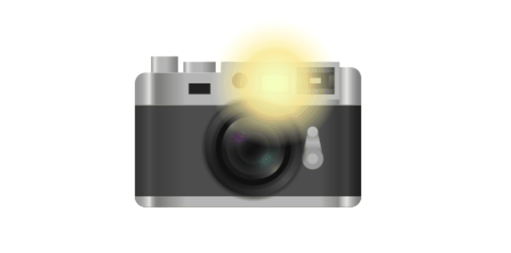
¡Oficialmente hemos llegado al final de la formación! Gracias por acompañarnos durante estos encuentros.
Antes de continuar con las últimas actividades, invita a quienes deseen aparecer en la foto grupal a encender sus cámaras.
Aclara que participar es completamente opcional. Si la fotografía será conservada o compartida, informa previamente con qué finalidad se utilizará.
También pueden mostrar una fotografía, una imagen, un cartel o un elemento representativo de su comunidad.
Da unos segundos para que todas las personas se preparen antes de tomar la fotografía.
Crítica constructiva
Una crítica constructiva es:
- Positiva
- Específica
- Sugiere próximos pasos
Antes de presentar la encuesta, recuerda que las devoluciones resultan especialmente útiles cuando son constructivas.
Una crítica constructiva tiene tres características:
- Es positiva: reconoce aquello que funcionó o que resultó valioso.
- Es específica: identifica con claridad qué podría mejorarse.
- Sugiere próximos pasos: propone una alternativa concreta.
Puedes utilizar el ejemplo de Mafalda y la sopa para mostrar la diferencia.
Decir simplemente que una sopa es desagradable expresa una opinión, pero no ofrece demasiada información para mejorarla. Una devolución constructiva podría reconocer primero el valor de los platos calientes en invierno y luego proponer un cambio específico, como incorporar fideos en lugar de verduras.
Invita a aplicar estas características al completar la encuesta de valoración.
Completa nuestra encuesta anónima
Duración: 5 minutos
https://tinyurl.com/HCA-Encuesta4
Cuando termines, avísanos por el chat.
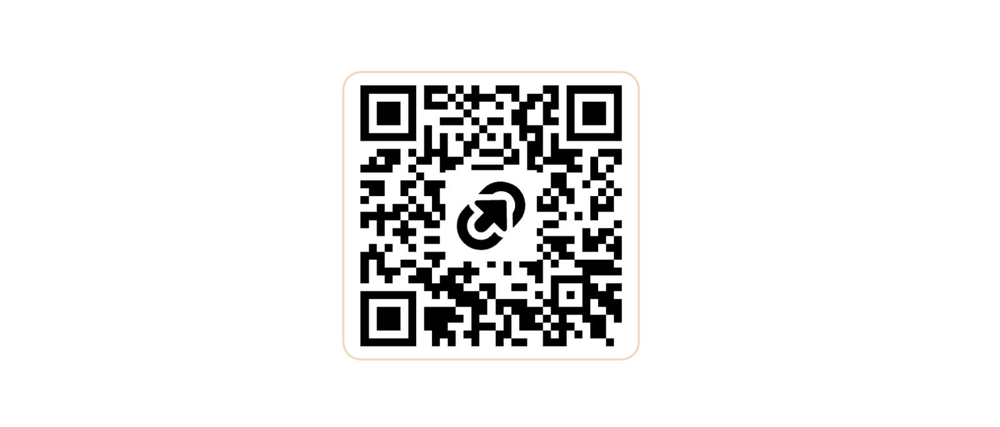
Duración: 5 minutos.
Invita a las personas participantes a completar la encuesta anónima de valoración.
Explica que no es necesario elaborar respuestas extensas. Incluso una devolución breve puede ayudarnos a reconocer qué funcionó y qué aspectos podemos mejorar.
En MetaDocencia leemos todas las sugerencias. Algunas pueden traducirse en cambios inmediatos y otras requieren un proceso más largo, pero todas contribuyen al aprendizaje y a la mejora continua de nuestras formaciones.
Pide que avisen por el chat cuando hayan terminado.
Mientras completan la encuesta, puedes reproducir música:
- Luis Alberto Spinetta, Era de tontos.
¡Seguimos en contacto!
- ¿Te gustó esta formación? ¡Difúndela!
- Seguimos en contacto por Slack, en el canal
#ciencia-abierta.
Invita a las personas participantes a difundir las próximas ediciones de Herramientas de Ciencia Abierta entre sus comunidades y redes.
También recuerda que pueden seguir participando en el espacio de Slack de MetaDocencia.
En el canal #ciencia-abierta pueden:
- Compartir experiencias y opiniones.
- Hacer consultas.
- Difundir oportunidades, recursos e invitaciones relevantes.
- Continuar las conversaciones iniciadas durante la formación.
Slack también permite mantenerse al tanto de nuevas convocatorias y formas de participar en las iniciativas de MetaDocencia.
Red de Comunidades Amigas
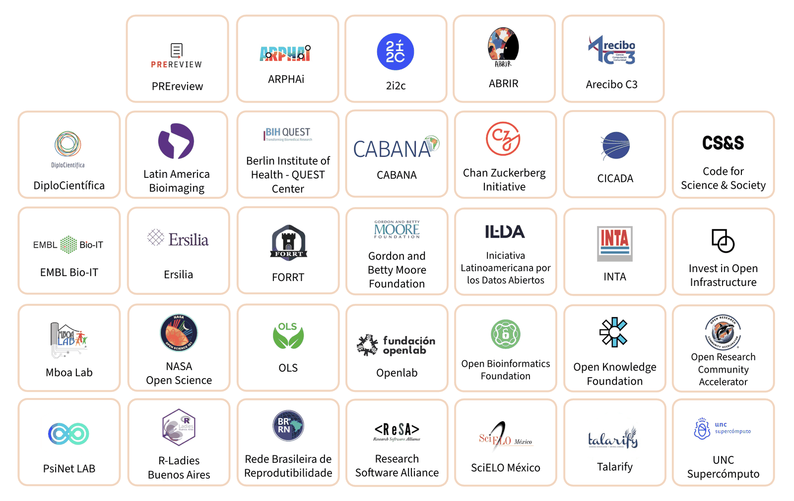
Antes de cerrar, agradece a las más de treinta comunidades aliadas y organizaciones que acompañan a MetaDocencia y hacen posible esta formación y muchas otras iniciativas.
Esta red permite construir capacidades, compartir conocimientos y desarrollar recursos mediante la colaboración entre comunidades científicas y técnicas de distintos contextos.
Invita a conocer las organizaciones y comunidades que forman parte de la red en el sitio web de MetaDocencia.
Para compartir en el chat:
Certificación de MetaDocencia
¿Cumpliste alguno de estos requisitos?
- Asististe sincrónicamente a 3 de los 4 encuentros.
- Completaste 3 de los 4 cuestionarios de NASA hasta el 6 de julio inclusive.
Hablemos de la certificación.
Esperamos que lo más importante de esta formación haya sido encontrarnos, conocernos y aprender en comunidad. También sabemos que las certificaciones pueden ser relevantes, por lo que repasaremos los requisitos y los próximos pasos.
Recibirán el certificado de asistencia de MetaDocencia quienes hayan cumplido alguno de estos criterios:
- Haber asistido de forma sincrónica a por lo menos tres de los cuatro encuentros.
- Haber completado al menos tres de los cuatro cuestionarios de NASA dentro del plazo establecido.
Esto se aplica también a quienes no hayan completado o aprobado las cuatro evaluaciones requeridas para obtener la certificación de NASA.
El certificado de asistencia de MetaDocencia se enviará por correo electrónico en un plazo de dos semanas a partir de la finalización de la formación.
Certificación de NASA
Para obtener la certificación:
- Completa y aprueba las cuatro evaluaciones.
- Alcanza un mínimo de 7 respuestas correctas en cada evaluación.
- Completa las evaluaciones hasta el 6 de julio inclusive.

¡Felicitaciones a quienes ya completaron y aprobaron las cuatro evaluaciones con un mínimo de siete respuestas correctas en cada una!
Si todavía les falta completar alguna evaluación, recuerden que pueden hacerlo hasta el 6 de julio inclusive.
A partir del 8 de julio, MetaDocencia enviará a NASA los datos necesarios para gestionar los certificados:
- Nombre.
- Apellido.
- ORCID.
La emisión de los certificados estará a cargo de NASA y puede demorar.
Si alguna persona cumple con todos los requisitos y no recibe su certificado antes del 29 de julio, puede escribir a:
Cómo recibir y registrar tu certificado
El certificado de NASA llegará a través de Credly.
También puedes registrarlo manualmente en tu perfil de ORCID.
Ver el instructivo sobre Credly y ORCID

El certificado de NASA llegará mediante Credly, una plataforma de certificaciones e insignias digitales.
Reproduce el video para mostrar qué deben hacer las personas participantes cuando reciban el correo de Credly.
Quienes lo deseen también pueden registrar manualmente el certificado en ORCID:
- Ingresar en su cuenta de ORCID.
- Buscar la sección Educación y cualificaciones.
- Seleccionar Añadir y luego Agregar cualificación.
- Completar el nombre de la organización emisora.
- Escribir el título exacto del certificado.
- Ingresar en Credly y abrir la insignia.
- Seleccionar Share y copiar el enlace público.
- Pegar esa dirección en el campo correspondiente de ORCID.
- Guardar los cambios.
Para que el certificado pueda verificarse mediante el enlace, el perfil y la insignia de Credly deben estar configurados como públicos.
Aclara que incorporar el certificado a ORCID es opcional.
Certificación NASA: evaluación del módulo
Duración: 15 minutos
Completa la evaluación del módulo:
¿Tienes dudas? Puedes consultar levantando la mano o escribiendo en el chat.
¿Terminaste? Puedes salir de la reunión.
¡Hasta la próxima!
Música:
- Morbo y Mambo, Camille.
- Hermanos Gutiérrez, Low Sun o Abuelita.
¡Muchas gracias!
Gracias por participar, compartir experiencias y construir conocimiento en comunidad durante estos cuatro encuentros.
Referencia sugerida:
https://doi.org/10.5281/zenodo.18894630
Este encuentro fue posible gracias al apoyo de:
- NASA Open Science.
- Code for Science & Society (CS&S).
MetaDocencia ·
@metadocencia
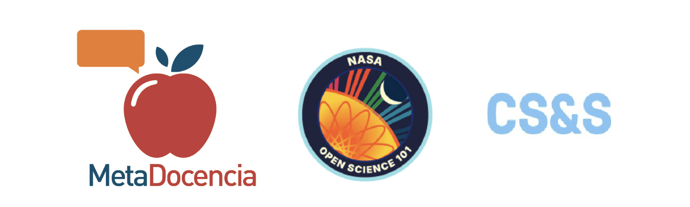
En nombre del equipo de MetaDocencia, agradece a las personas participantes por su presencia, sus preguntas y las experiencias compartidas durante la formación.
Invítalas a continuar los intercambios en los espacios comunitarios de MetaDocencia y a mantenerse en contacto para conocer nuevas formaciones, recursos y oportunidades de participación.
Recuerda que este encuentro fue posible gracias al apoyo de NASA Open Science y Code for Science & Society.
Finalmente, comparte la referencia de la presentación: